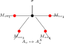
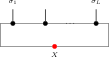
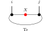
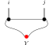
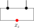

- Boxes
- definitions
- Ellipses
- theorems and lemmas
- Blue border
- the statement of this result is ready to be formalized; all prerequisites are done
- Orange border
- the statement of this result is not ready to be formalized; the blueprint needs more work
- Blue background
- the proof of this result is ready to be formalized; all prerequisites are done
- Green border
- the statement of this result is formalized
- Green background
- the proof of this result is formalized
- Dark green background
- the proof of this result and all its ancestors are formalized
- Dark green border
- this is in Mathlib
Let \(A\) be an MPS tensor in irreducible form II and let \(U : G \to \mathrm{GL}_d(\mathbb {C})\) be a representation of a group \(G\) on the physical leg, acting unitarily (\(U(g)\, U(g)^{\dagger } = \mathbb {1}\)). Assume moreover the periodic equal-case Fundamental Theorem of MPS (Theorem 15.25) as an explicit hypothesis on the pair \((d, D)\), expressed by the hypothesis \(d\, D\). If \(A\) is on-site symmetric under \(U\) — that is, the twisted tensor \(\widetilde{A}_g\) has the same MPV family as \(A\) for every \(g \in G\) — then for each \(g \in G\) there exists a positive period \(m_g\) and a \(\mathbb {Z}_{m_g}\)-gauge equivalence between \(A\) and \(\widetilde{A}_g\).
Concretely there are matrices \(Z_g\) and \(Y_g\), with \(Z_g^{m_g} = \mathbb {1}\) and \([A^i, Z_g] = 0\), satisfying, for every physical index \(i\),
Let \(A\) and \(B\) be MPS tensors of bond dimension \(D\), and fix a chain length \(n \ge 1\). Assume that \(A\) is injective and that the combined tensors of the two constant chains \((A, \ldots , A)\) and \((B, \ldots , B)\) generate the same MPV family. Then there exist an invertible matrix \(Z \in \mathrm{GL}_D(\mathbb {C})\) and a scalar \(\lambda \in \mathbb {C}^{\times }\) with \(\lambda ^n = 1\) such that
for every physical index \(i\).
For \(s\in [0,1]\), \(t\in [0,1]\), and positive-definite matrices \(A_1,A_2,B_1,B_2\), the map \((A,B)\mapsto \Re \operatorname{tr}(A^s B^{1-s})\) is jointly concave:
Obtained from Theorem 7.60 by taking \(K=\mathbb {1}\).
For \(s\in [0,1]\), \(t\in [0,1]\), matrix \(K\), and positive-definite matrices \(A_1,A_2,B\), the map \(A\mapsto \Re \operatorname{tr}(K^\dagger A^s K B^{1-s})\) is concave:
For \(s\in [0,1]\), \(t\in [0,1]\), matrix \(K\), and positive-definite matrices \(A,B_1,B_2\), the map \(B\mapsto \Re \operatorname{tr}(K^\dagger A^s K B^{1-s})\) is concave:
Assume a same-state reduction hypothesis for \((d,D)\). Let \(\mathbf{A} = (A_0, \ldots , A_{n-1})\) be an injective non-translation-invariant chain of length \(n \ge 3\). Suppose the state generated by \(\mathbf{A}\) is translation-invariant, i.e. it equals the state generated by the cyclically shifted chain \((A_1, \ldots , A_{n-1}, A_0)\). Then \(\mathbf{A}\) admits a translation-invariant description with the same bond dimension: there exists an injective tensor \(B\) such that the constant chain \((B, \ldots , B)\) generates the same state as \(\mathbf{A}\). Explicitly, \(B^i = A_0^i\, Z_0^{-1}\) (right multiplication, not conjugation), where \(Z_0\) is extracted from the cyclic shift.
Let \(A\) be in irreducible form II and let \(u\) be a matrix such that \(B := A_u\) is also in irreducible form II and \(\mathcal{V}(A) = \mathcal{V}(B)\). Then there exists \(m {\gt} 0\) such that \(A\) and \(B\) are \(\mathbb {Z}_m\)-gauge equivalent.
Assume a same-state reduction hypothesis for \((d,D)\). Let \(A\) be an injective MPS tensor and let \(U \in \mathrm{GL}_d(\mathbb {C})\) be a unitary acting on the physical index. Fix \(n \ge 3\) and suppose the \(n\)-site translation-invariant state satisfies
Then there exist \(V \in \mathrm{GL}_D(\mathbb {C})\) and a scalar \(\lambda \in \mathbb {C}^{\times }\) with \(\lambda ^n = 1\) such that
for every physical index \(i\).
Let \(A\) be an MPS tensor with bond dimension \(D \ge 1\), satisfying \(\sum _i (A^i)^\dagger A^i=\mathbb {1}\), and suppose that \(A\) is primitive with a positive-definite fixed point. If some Kraus operator \(A^{i_0}\) is invertible, then
Let \(A\) be an MPS tensor with bond dimension \(D \ge 1\), satisfying \(\sum _i (A^i)^\dagger A^i=\mathbb {1}\), and suppose that \(A\) is primitive with a positive-definite fixed point. If some Kraus operator \(A^{i_0}\) is non-invertible and has an eigenvector \(\varphi \ne 0\) with nonzero eigenvalue \(\mu \), then
The conclusion consists of a positive blocking length and sector decompositions \(P,Q\) at that length. The blocked tensors agree with \(P\) and \(Q\) at every positive length, while \(P\) and \(Q\) generate the same full MPV family. Both sector decompositions carry BNT data. Their basis sectors are matched by a permutation, the corresponding multiplicities agree, and the sector-weight multisets agree after multiplying the weights on one side by nonzero sector phases.
For two tensors with the same MPV family, the structural reduction supplies a common blocking, zero-tail identities, and common primitive nonzero-sector families. These hypotheses add the BNT-cover comparison data for those families. The blocked-word identification for common cyclic sectors is derived from the grouped-block cast theorem.
The comparison data include the sectors’ trace-preserving normalization, primitivity, irreducibility, and positive bond-dimension evidence before returning BNT-cover comparison hypotheses for those blocks. Thus the assumptions apply to the common primitive sectors obtained after blocking, not to an arbitrary chosen decomposition.
Set \(d = 3\) (spin-1) and \(D = 2\). The AKLT tensor is the family \(\{ A^0, A^1, A^2\} \subset M_{2}(\mathbb {C})\) defined via the Pauli matrices by
where \(\sigma _z = |0\rangle \! \langle 0| - |1\rangle \! \langle 1|\), so equivalently \(A^1 = \frac{1}{\sqrt{3}}\, \sigma _+\) and \(A^2 = -\frac{1}{\sqrt{3}}\, \sigma _-\) for \(\sigma _+ = \sqrt{2}\, |0\rangle \! \langle 1|\) and \(\sigma _- = \sqrt{2}\, |1\rangle \! \langle 0|\). Equivalently, the matrices are the Clebsch–Gordan coefficients coupling spin-\(1\) and spin-\(\tfrac 12\) to spin-\(\tfrac 12\).
For an MPS tensor \(A\), let \(\operatorname{alg}(A)\) be the unital \(\mathbb {C}\)-subalgebra of \(M_{D}(\mathbb {C})\) generated by the matrices \(\{ A^i\} \):
For \(r, s\), let \(P_{\mathrm{top}} = C_{r,s}^\dagger C_{r,s}\) and \(P_{\mathrm{bot}} = \mathbb {1}- P_{\mathrm{top}}\). Both are PSD (for \(P_{\mathrm{bot}}\), by Lemma 5.92) and \(P_{\mathrm{top}} + P_{\mathrm{bot}} = \mathbb {1}\).
Given \(r\) blocks with bond dimensions \((D_k)_{k=1}^r\), per-block tensors \(\{ A_k^i\} \), and scaling factors \((\mu _k)_{k=1}^r\), the associated block-diagonal tensor is the tensor of total bond dimension \(D = \sum _{k=1}^r D_k\) defined by
For natural numbers \(r, s\), let \(C = C_{r,s} \in M_{}(\mathbb {C})(\mathbb {C})\) be the rectangular \(r \times (r+s)\) matrix whose rows are the first \(r\) rows of the identity on \(\mathbb {C}^{r+s}\): \(C_{ij} = 1\) if \(j = i {\lt} r\) and \(0\) otherwise.
The blocked corner transition tensor at sector \(u\) is the MPS tensor on blocked physical indices defined by sending a blocked index \(i\) to the staircase evaluation along the associated length-\(m\) physical word \(w_i\). For a blocked index \(i\) with word \((i_0,\dots ,i_{m-1})\) this returns the ambient-algebra matrix
This is the ambient matrix-algebra representative of the compressed blocked sector tensor \(C_u\) in a cyclic sector decomposition; the identification with \(C_u\) through the compression isometry \(\varphi _u\) is Equation A.8 of [ DlCCSPG17 ] .
Given a tensor \(A\) and a blocking length \(L\), the \(L\)-blocked tensor is the tensor with physical index set \(\{ 0,\ldots ,d{-}1\} ^L\) (hence physical dimension \(d^L\)) and the same bond dimension \(D\), whose matrices are indexed by words \((i_1, \ldots , i_L) \in \{ 0,\ldots ,d{-}1\} ^L\):
A basis of normal tensors (BNT) for a total tensor \(A_{\mathrm{tot}}\) consists of \(g\) block tensors \((A_1, \ldots , A_g)\) with bond dimensions \((D_1, \ldots , D_g)\) such that:
each \(A_j\) is normal (Definition 2.26),
at each system size \(N\), the MPV of \(A_{\mathrm{tot}}\) lies in the span of the block MPVs \(\{ |V^{(N)}(A_j)\rangle \} _{j=1}^g\),
for sufficiently large \(N\), the block MPV vectors \(\{ |V^{(N)}(A_j)\rangle \} _{j=1}^g\) are linearly independent.
This is [ CPGSV21 , Definition 4.2 ] .
Here, a block-injective canonical form for a tensor consists of:
a number of blocks \(r \ge 1\),
bond dimensions \(D_1, \ldots , D_r\),
injective tensors \(\{ A_k^i\} _{i=0}^{d-1}\) with \(A_k^i \in M_{D_k}(\mathbb {C})\) for each block \(k \in \{ 1,\ldots ,r\} \),
scaling factors \(\mu _1, \ldots , \mu _r \in \mathbb {C}\).
The associated tensor is the block-diagonal tensor
This is the block-injective version of the canonical-form data; see [ PGVWC07 ] and [ CPGSV21 ] .
A family is in canonical form with BNT separation if it satisfies Definition 12.16 and, in addition:
the moduli are strictly decreasing: \(|\mu _1| {\gt} |\mu _2| {\gt} \cdots {\gt} |\mu _r|\) (strengthened from the non-increasing ordering of Definition 12.16),
distinct blocks of the same bond dimension are not gauge-phase equivalent.
The strictly decreasing condition is justified by the BNT grouping step, which merges gauge-phase-equivalent blocks with equal moduli. This records the comparison data for already selected BNT representatives. It is not the source notion of block-injective canonical form, which is the fixed-length direct-sum span condition discussed in Chapter 10 and Chapter 14.
For \(N {\gt} 0\) and \(L \le N\), define the periodic chain ground space
where the condition \(\psi |_{[i,i+L-1]} \in G_L(A)\) means that for every choice of physical indices outside the window, the restriction of \(\psi \) to that window lies in \(G_L(A)\). When \(N = 0\) or \(L {\gt} N\), set \(\mathcal{G}_{N,L}(A) := \top \) by convention.
For a linear map \(T : M_{D}(\mathbb {C}) \to M_{D}(\mathbb {C})\), the channel determinant \(\det T\) is the determinant of the matrix of \(T\) with respect to the standard matrix-unit basis of \(M_{D}(\mathbb {C})\). This is the quantity studied in [ Wol12 , Section 6.1.1 ] .
The Choi matrix of a linear map \(T : M_{D}(\mathbb {C}) \to M_{D}(\mathbb {C})\) is
Concretely, \(\tau _{(i_1,i_2),(j_1,j_2)} = \frac{1}{D}\, (T(E_{i_2 j_2}))_{i_1 j_1}\) where \(E_{i_2 j_2}\) is the matrix unit. This is the Choi–Jamiol\- kowski convention of [ Wol12 , Proposition 2.1 ] .
Set \(d = D = 2\). The cluster-state tensor is the family \(\{ A^0, A^1\} \subset M_{2}(\mathbb {C})\) defined by
where \(|\pm \rangle = \tfrac {1}{\sqrt{2}}(|0\rangle \pm |1\rangle )\).
Two cocycles \(\omega _1,\omega _2\) are cohomologous (written \(\omega _1 \sim \omega _2\)) if there exists \(\varphi \colon G\to \mathbb {C}^{\times }\) such that, for all \(g,h \in G\),
For a common reblocked cyclic-sector family, the sector tensors over the common alphabet are obtained directly from the original per-block sector tensors. The same flattened common-sector family is available at a prescribed length \(p'\) assuming the family length equals \(p'\). The block data specify the identification of blocked physical words: for the block \(B_k\), it uses \(B_k^{[m_k e_k]}\) with the labels obtained by flattening an iterated \((m_k,e_k)\) block.
- MPSTensor.CommonBlockedCyclicSectorFamily.flatKey
- MPSTensor.CommonBlockedCyclicSectorFamily.commonSectorBlock
- MPSTensor.CommonBlockedCyclicSectorFamily.commonFlatDim
- MPSTensor.CommonBlockedCyclicSectorFamily.commonFlatBlocks
- MPSTensor.CommonBlockedCyclicSectorFamily.commonFlatBlocksAt
- MPSTensor.CommonBlockedCyclicSectorFamily.commonSectorTensor
- MPSTensor.CommonBlockedCyclicSectorFamily.commonReindexedBlock
- MPSTensor.CommonBlockedCyclicSectorFamily.commonFlatWeight
For a finite family of nonzero-weight blocks \((B_k)\), these data specify a single positive physical blocking length \(p\), the per-block period-removal lengths \(m_k\), the later positive reblocking lengths \(e_k\) with \(p=m_k e_k\), and the resulting flattened finite sector family at physical dimension \(d^p\). They retain trace preservation, primitive transfer maps, tensor irreducibility, positive bond dimensions, and the per-block iterated-blocking MPV equivalences.
For one original block \(k\) in a common blocked cyclic-sector family, this predicate says that the canonical identification of the common blocked alphabet with the iterated alphabet agrees with the following grouping of words: first read the direct word of length \(p=m_k e_k\), then group it into \(e_k\) consecutive words of length \(m_k\).
This is the corresponding global assertion at the level of blocked words: every common blocked cyclic-sector family satisfies the coordinate-grouping condition for each original nonzero block. Equivalently, the canonical identification with each iterated blocked alphabet agrees with grouping the direct blocked word into consecutive words of the period-removal length. The next theorem proves this assertion from the concrete word-cast construction.
For two common primitive nonzero-sector families at one blocking length, this condition contains the BNT data needed to construct a common MPV phase cover: normal canonical-form data on both sides, separation of distinct sectors by gauge-phase equivalence, equality of the zero-tail dimensions, one-site injectivity, and a proportional-decomposition comparison. When the primitive structural data and strict weight ordering are supplied in place of normal canonical-form data, together with the remaining conditions above, they yield the BNT-cover hypotheses. The length-zero identity and the proportional matching identify the zero-tail dimensions, so this equality need not be supplied separately once the proportional data are present. For common cyclic sectors, the same condition is stated on the representative or grouped sector family, where the strict ordering and BNT-separation hypotheses are meaningful.
- MPSTensor.CommonPrimitiveBNTCoverHypotheses
- MPSTensor.CommonRepresentativeBNTCoverHypotheses
- MPSTensor.CommonPrimitiveBNTCoverHypotheses.ofCommonPrimitiveData
- MPSTensor.CommonPrimitiveBNTCoverHypotheses.ofCommonPrimitiveData_zeroTailIdentity
- MPSTensor.CommonPrimitiveBNTCoverHypotheses.ofCommonRepresentatives_zeroTailIdentity
- MPSTensor.CommonPrimitiveBNTCoverHypotheses.ofCommonRepresentativeBNTCoverHypotheses
- MPSTensor.zeroTail_eq_of_proportionalDecompositionConclusion
For two common primitive nonzero-sector families at one blocking length, this condition is the phase-cover version of Definition 14.55: equality of the two zero-tail dimensions, one-site injectivity of all blocks on both sides, and a common MPV phase cover for the two block families.
For two common primitive nonzero-sector families at one blocking length, this condition asserts equality of the two zero-tail dimensions, one-site injectivity of all blocks on both sides, and a BNT proportional-decomposition comparison for the two block families. These hypotheses apply to the representative or grouped BNT sectors used in the comparison, not to an unprocessed flattened list of cyclic sectors. It is the BNT-comparison version of Definition 14.57.
For two common primitive nonzero-sector families at one blocking length, this condition consists of the hypotheses needed before applying the zero-block sector comparison: equality of the two leftover zero-block dimensions, one-site injectivity of all blocks on both sides, and equality of the finite-length MPV spans of the two block families for every system size.
This is the one-sided assertion that the canonically blocked weighted nonzero part agrees, as an MPV family, with the same common cyclic-sector family after identifying blocked physical words. It isolates the coordinate equality between direct and iterated blocking. The coordinate-grouping theorem below supplies this condition in the theorems that take it as a hypothesis, so it is not a new paper-level mathematical hypothesis.
The commutator form of the Lindblad equation writes the generator as
where \([A,B] = AB - BA\). This is [ Wol12 , Equation (7.22) ] .
Transfer-map covariance is the identity that the transfer map commutes with virtual conjugation: \(\mathcal{E}(V X V^\dagger ) = V\, \mathcal{E}(X)\, V^\dagger \). In doubled-layer notation, the virtual operators slide through the local transfer cell:

For a word \(w = (w_0,\dots ,w_{L-1})\) on the physical index alphabet and a starting sector \(u\), the staircase evaluation at \(u\) is the matrix
characterized recursively by the empty-word value \(P_u\) and the rule that prepending a letter \(i\) inserts the factor \(P_u \cdot A^i\) and advances the starting sector from \(u\) to \(u+1\).
For a cyclic projection family \((P_k)_{k=0}^{m-1}\) on the ambient bond algebra of an MPS tensor \(A\), the one-site corner transition at sector \(k\) is the family of per-site matrices
where the index \(k+1\) is taken cyclically modulo \(m\).
For an idempotent \(P \in M_{D}(\mathbb {C})\), the subspace \(\{ X \mid P X P = X\} \) and the corner \(\{ P\, X\, P \mid X \in M_{D}(\mathbb {C})\} \) are identified as \(\mathbb {C}\)-linear spaces by the identity on underlying matrices.
A linear map \(E : M_{D}(\mathbb {C}) \to M_{D}(\mathbb {C})\) is completely positive (CP) if it admits a Kraus representation: there exist operators \(\{ K_i\} _{i=0}^{r-1}\) with \(K_i \in M_{D}(\mathbb {C})\) such that, for every \(X \in M_{D}(\mathbb {C})\),
We use the Kraus characterisation because it matches the later Kadison–Schwarz arguments. By Choi’s theorem, this is equivalent to \(E \otimes \operatorname{id}_n\) being positive for all \(n\).
Given an MPS tensor \(A\) and a vector \(\varphi \in \mathbb {C}^D\), the cumulative vector span is
This is [ SPGWC10 , proof of Lemma 2(a) ] .
Let \(T : M_{D}(\mathbb {C}) \to M_{D}(\mathbb {C})\). A block-permutation structure for \(T\) consists of a finite index set \(\iota \), a family of orthogonal projections \(P_k \in M_{D}(\mathbb {C})\) for \(k \in \iota \), and a permutation \(\sigma \in \mathrm{Sym}(\iota )\) (not necessarily a single cycle — in general \(\sigma \) may have multiple disjoint cycles), such that
for every \(k \in \iota \) and \(X \in M_{D}(\mathbb {C})\).
A family of compressed sector tensors \((C_k)_{k=0}^{m-1}\) on corner bond spaces forms a cyclic sector decomposition of the blocked tensor \(A^{(m)}\) if there exist orthogonal projections \(P_0,\dots ,P_{m-1}\) on the ambient bond space such that \(\sum _k P_k = \mathbb {1}\), the projections satisfy the cyclic-shift relation \(\mathcal{E}_A^\dagger (P_{k+1}) = P_k\) with the index \(k+1\) taken cyclically modulo \(m\), each \(P_k\) commutes with every blocked letter \(P_k A^{(m)}_i = A^{(m)}_i P_k\), and \(V^{(N)}(C_k)_\sigma = \operatorname{tr}(P_k (A^{(m)})^\sigma )\) for every word \(\sigma \), and each block carries a \(\ast \)-algebra isomorphism \(\varphi _k : M_{\dim C_k}(\mathbb {C}) \xrightarrow {\sim } P_k \cdot M_D(\mathbb {C}) \cdot P_k\) (multiplicative and adjoint-preserving) intertwining the compressed adjoint transfer map with the sector adjoint transfer map on the corner of \(P_k\).
The set of density matrices in \(M_{D}(\mathbb {C})\) is
A linear map \(T : M_{D}(\mathbb {C}) \to M_{D}(\mathbb {C})\) is doubly-stochastic if \(T(1) \propto 1\) and the reduced density matrix \(\operatorname{tr}_{1}[\tau ]\) of its Choi matrix \(\tau = (T \otimes \operatorname{id})(|\Omega \rangle \! \langle \Omega |)\) is proportional to the identity. This is the normal form in [ Wol12 , Proposition 2.8 ] .
A family of linear maps \(T : \mathbb {R}\to (M_{D}(\mathbb {C}) \to _{\ell } M_{D}(\mathbb {C}))\) is a dynamical semigroup if
(semigroup law) \(T_{t+s} = T_t \circ T_s\) for all \(t,s \ge 0\); and
(initial condition) \(T_0 = \operatorname{id}\).
This is [ Wol12 , Equation (7.1) ] .
For an edge \(e = (u,w)\) with \(u {\lt} w\) and gauge \(X_e \in \mathrm{GL}(D_e)\), the gauge matrix applied at vertex \(v\) is \(X_e\) if \(v = u\) and \((X_e^{-1})^\top \) if \(v = w\). Diagrammatically, the ordered edge carries opposite endpoint actions:

Given a word \(w = (i_1, \ldots , i_L) \in \{ 0,\ldots ,d{-}1\} ^L\), the word evaluation is the matrix product
with the convention that the empty word evaluates to the identity: \(A^\varnothing = \mathbb {1}_D\). In tensor-network notation,
in which each black node denotes the same local tensor \(A\), the virtual legs remain open, and the physical legs are labelled by the word \((i_1,\ldots ,i_L)\).
Given a generator \(L \in \mathrm{End}_{\mathbb {C}}(M_{D}(\mathbb {C}))\), the exponential semigroup is
For a configuration \(\sigma \in \{ 0,\ldots ,d{-}1\} ^{N}\) on the periodic chain and a starting site \(i\), the extracted word
reads the entries of \(\sigma \) on the cyclic interval \(i,i+1,\ldots ,i+L-1\) modulo \(N\).
A Fitting decomposition of a linear endomorphism \(f : V \to V\) on a finite-dimensional vector space over an algebraically closed field consists of:
\(f\) is nilpotent on the generalized \(0\)-eigenspace,
\(f\) is invertible on each generalized \(\mu \)-eigenspace for \(\mu \neq 0\),
the generalized eigenspaces span \(V\),
the generalized eigenspaces are linearly independent.
Given a linear map \(E : M_{D}(\mathbb {C}) \to M_{D}(\mathbb {C})\) and a fixed point \(\rho \) with \(E(\rho ) = \rho \) and \(\operatorname{tr}(\rho ) \neq 0\), the fixed-point projection is the rank-one map
This projects onto the span of \(\rho \) along the kernel of the trace functional. When the fixed point is unique up to scaling, this span is the full fixed-point space.
Two tensors \(A\) and \(B\) of the same bond dimension \(D\) are gauge equivalent if there exists an invertible matrix \(X \in \mathrm{GL}_D(\mathbb {C})\) such that, for every \(i \in \{ 0,\ldots ,d{-}1\} \),
In tensor-network notation,
the black node denotes the tensor named in the surrounding formula, the upper leg is the physical index \(i\), and the two red side nodes denote the gauge matrices acting on the virtual legs.
Two tensors \(A\) and \(B\) are gauge-phase equivalent if there exist \(X \in \mathrm{GL}_D(\mathbb {C})\) and \(\zeta \in \mathbb {C}\setminus \{ 0\} \) such that, for every physical index \(i\),
Two gauge families are equivalent modulo balanced edge scalars if there is a nonzero scalar \(c_e\) on each edge such that the corresponding endpoint actions rescale the oriented edge gauges, and the oriented product of those endpoint scalars is \(1\) at every vertex.
The gauged tensor at vertex \(v\) is \(A^X_v\). For each incident edge \(ie\), write \(M_{ie}\) for the matrix specified by Definition 18.7, applied at the vertex \(v\) to the gauge on the underlying edge of \(ie\). Then \(A^X_v(\eta , \sigma ) = \sum _{\eta '} (\prod _{ie} M_{ie}(\eta (ie), \eta '(ie))) A_v(\eta ', \sigma )\). In tensor-network notation, one inserts the appropriate gauge matrix on each incident virtual leg of the local tensor:

A generator decomposition consists of a completely positive map \(\phi : M_{d}(\mathbb {C}) \to M_{d}(\mathbb {C})\) and a matrix \(\kappa \in M_{d}(\mathbb {C})\), defining the linear map
This is [ Wol12 , Equation (7.14) ] .
Set \(d = D = 2\). The GHZ tensor is the family \(\{ A^0, A^1\} \subset M_{2}(\mathbb {C})\) defined by
For a system of \(N\) sites the resulting MPV is the GHZ state
Via the canonical identification between coefficient functions and the Euclidean space \(\ell ^{2}(\{ 0,\ldots ,d{-}1\} ^{L})\), one transports the local ground space to a Hilbert-space subspace
The map \(\Gamma _L\) above is a \(\mathbb {C}\)-linear map
In tensor-network notation,

the upper chain denotes the word tensor \(A^\sigma \) with open physical indices \(\sigma _1,\ldots ,\sigma _L\), and the lower red node denotes the boundary matrix \(X\) inserted on the closing virtual bond before taking the trace. The chain length \(L\) is fixed by the surrounding formula, not by an extra label inside the diagram.
Condition (4): there exists a nontrivial projector \(P\) and a Lindblad form \((H, \{ L_j\} )\) for \(L\) such that \((1-P)L_j P = 0\) and \((1-P)\kappa P = 0\) for all \(j\), where \(\kappa = iH + \frac{1}{2}\sum _j L_j^\dagger L_j\).
An MPS tensor \(A\) has an invariant projection if there exists an orthogonal projection \(P\) with \(P \neq 0\), \(P \neq \mathbb {1}\), and \((\mathbb {1}- P) A^i P = 0\) for all \(i\). A tensor is irreducible if it has no nontrivial invariant projection (Definition 11.15).
A completely positive map \(E\) on \(M_{D}(\mathbb {C})\) has the spectral properties of [ Wol12 , Theorem 6.4 ] if there exist a positive real number \(r\), a positive definite right eigenvector \(\rho \), and a positive definite left eigenvector \(\sigma \) for the adjoint map such that \(E(\rho )=r\rho \), \(E^\dagger (\sigma )=r\sigma \), every positive semidefinite right eigenvector for eigenvalue \(r\) is a scalar multiple of \(\rho \), and the spectral radius of \(E\) is equal to \(r\).
String order exists for \(u\) with respect to a boundary state \(\Lambda \) if there exist boundary matrices \(X, Y\) and a positive constant \(c {\gt} 0\) such that \(c \le \| R_L(u; X, Y)\| \) for all \(L\), where \(R_L(u; X, Y)\) is the boundary-refined string-order parameter. Informally, this means the scalar string-order parameter \(R_L(u)\) does not decay to zero.
A Hayashi Markov decomposition of a tripartite state \(\rho _{ABC}\) consists of a finite direct-sum decomposition
together with a unitary change of basis on \(B\), a probability vector \((p_j)_j\), and density matrices \(\rho _{A B_j^L}\) and \(\rho _{B_j^R C}\) such that, in the adapted basis, the state becomes
An MPO tensor is in horizontal canonical form if its doubled-index MPS tensor generates the same MPV family as a block-diagonal tensor \(\bigoplus _k \mu _k A_k\) whose blocks are injective, left-canonical, and have nonzero weights \(\mu _k\).
Associated to an instrument are the total channel \(\sum _i \Phi _i\), the unnormalized update \(\rho \mapsto \Phi _i(\rho )\) for each outcome \(i\), the outcome probability \(p_i(\rho ) = \operatorname{tr}(\Phi _i(\rho ))\), and the normalized posterior state \(\Phi _i(\rho ) / p_i(\rho )\) whenever \(p_i(\rho ) \neq 0\).
A linear map \(E : M_{D}(\mathbb {C}) \to M_{D}(\mathbb {C})\) is irreducible if whenever \(P\) is an orthogonal projection satisfying \(E(P M_{D}(\mathbb {C}) P) \subseteq P M_{D}(\mathbb {C}) P\), then \(P = 0\) or \(P = \mathbb {1}\). This is [ Wol12 , Theorem 6.2, condition (1) ] . The definition applies to any linear map; complete positivity is not required.
A tensor \(A\) is in irreducible form if it is block-diagonal
where each block \(A_j\) is an \(m_j\)-periodic tensor, each weight \(\mu _j \neq 0\), and the blocks are pairwise non-repeated (no two distinct \(j, j'\) have \(A_j\) gauge-equivalent to \(A_{j'}\)). This is the standard form introduced in [ DlCCSPG17 , Section II ] . It extends the normal canonical form (Definition 11.39), which requires the stronger condition that every block is \(1\)-periodic.
A collection of scaling factors \((\mu _k)_{k=1}^r\) and block tensors \((A_k)_{k=1}^r\) satisfies the canonical form conditions if:
each \(A_k\) is injective,
each \(A_k\) satisfies the TP normalization \(\sum _i (A_k^i)^\dagger A_k^i = \mathbb {1}\),
the moduli are non-increasing: \(|\mu _1| \ge |\mu _2| \ge \cdots \ge |\mu _r|\),
all \(\mu _k \neq 0\),
the self-overlap converges: \(O_{A_k A_k}(N) \to 1\) for each \(k\).
Only this one-sided normalization is assumed; no unital condition is assumed here. Condition (5) is a primitivity hypothesis: for a primitive channel ( [ Wol12 , Theorem 6.7, item 3 ] ), \(T^n(\rho )\to \rho _\infty \) for every initial state, which forces the self-overlap to converge to \(1\). See also [ Wol12 , Theorem 6.8 ] for the completely-positive characterisation and Chapter 9 for the spectral-gap proof.
A linear map \(L : M_{d}(\mathbb {C}) \to M_{d}(\mathbb {C})\) is conditionally completely positive (CCP) if it admits a generator decomposition, i.e. there exist a CP map \(\phi \) and a matrix \(\kappa \) such that \(L(\rho ) = \phi (\rho ) - \kappa \rho - \rho \kappa ^\dagger \). This is condition 1 of [ Wol12 , Proposition 7.2 ] .
Given a \(*\)-subalgebra \(S \subseteq M_{D}(\mathbb {C})\), a linear map \(P : M_{D}(\mathbb {C}) \to M_{D}(\mathbb {C})\) is a conditional expectation onto \(S\) if it is idempotent, unital, has range contained in \(S\), and satisfies \(P(X)=X\) for all \(X \in S\).
Given an idempotent endomorphism \(P_K\) and sets of observables \(\mathcal{O}_A\), \(\mathcal{O}_B\), regions \(A\) and \(B\) are decorrelated w.r.t. \(K\) when \(P_K \circ O_A \circ (1 - P_K) \circ O_B \circ P_K = 0\) for all \(O_A \in \mathcal{O}_A\), \(O_B \in \mathcal{O}_B\).
A single BNT block is locally orthogonal when its self-transfer map is idempotent. For a single tensor this coincides with the RFP condition (Definition 21.13); in the full multi-block BNT setting, local orthogonality additionally requires that mixed transfer operators vanish. See [ CPGSV21 , Definition 3.5 ] .
A collection of scaling factors \((\mu _k)_{k=1}^r\) and block tensors \((A_k)_{k=1}^r\) satisfies the normal canonical form conditions if:
each \(A_k\) is irreducible,
each \(A_k\) satisfies the TP normalization \(\sum _i (A_k^i)^\dagger A_k^i = \mathbb {1}\),
each transfer map \(\mathcal{E}_{A_k}\) is primitive (equivalently, has peripheral spectrum \(\{ 1\} \)),
the moduli are non-increasing: \(|\mu _1| \ge |\mu _2| \ge \cdots \ge |\mu _r|\),
all \(\mu _k \neq 0\),
all bond dimensions are positive.
Here “normal” is used in the spectral sense of [ CPGSV17a ] : irreducible blocks whose TP-normalized transfer maps are primitive. As noted in the remark after Definition 2.26, this is equivalent to the eventual block-injectivity formulation of Definition 2.26; see [ SPGWC10 , Proposition 3 ] .
Injective tensors \(A\) and \(B\), both symmetric under an on-site representation \(U\colon G\to \mathrm{GL}_d(\mathbb {C})\), are in the same SPT phase if there exist virtual cocycles \(\omega _A,\omega _B\) with corresponding projective representations that intertwine the respective twisted tensors and satisfy \(\omega _A\sim \omega _B\) (cohomologous).
A family of block tensors \(\{ A_k\} _{k=0}^{r-1}\) with scaling weights \(\mu _0, \ldots , \mu _{r-1} \in \mathbb {C}^{\times }\) is in canonical form if:
each \(A_k\) is injective,
each \(A_k\) is left-canonical: \(\sum _i (A_k^i)^{\dagger }\, A_k^i = \mathbb {1}_{D_k}\),
the weights are strictly ordered by norm: \(|\mu _0| {\gt} |\mu _1| {\gt} \cdots {\gt} |\mu _{r-1}| {\gt} 0\),
the self-overlaps are normalised: \(O_{A_k A_k}(N) \to 1\) as \(N \to \infty \).
A PEPS tensor \(A\) is vertex-injective if, at every vertex \(v\), the family of physical vectors
indexed by virtual configurations \(\eta \) on the edges incident to \(v\) is linearly independent in \(\mathbb {C}^d\). Equivalently, extending \(A_v\) by linearity to a map from the free vector space on virtual configurations into the physical space \(\mathbb {C}^d\) gives a linear map with trivial kernel. This matches the injectivity formulation of [ MGRPG+18 , Section 3 ] , where the local tensor is interpreted as a map from virtual configurations to the physical space.
A Kossakowski form consists of \(H = H^\dagger \), a finite family of matrices \(\{ F_k\} _{k=0}^{n-1}\), and a positive semidefinite matrix \(C \in M_{n}(\mathbb {C})\), defining
In Wolf’s formula one takes \(\{ F_k\} \) to be a basis of traceless matrices; here we keep only the algebraic data needed for the conversion to Lindblad form.
The Kraus commutant is \(\{ K_i, K_i^\dagger \} ' = \{ X \in M_{D}(\mathbb {C}) : [X, K_i] = [X, K_i^\dagger ] = 0 \; \forall i\} \). It is a \(*\)-subalgebra of \(M_{D}(\mathbb {C})\).
For operators \(\{ K_i\} _{i=0}^{d-1} \subseteq M_{D}(\mathbb {C})\), the associated Kraus map and adjoint Kraus map are
The Kraus family is unital when \(\sum _i K_i K_i^\dagger = \mathbb {1}\) and trace-preserving when \(\sum _i K_i^\dagger K_i = \mathbb {1}\).
A Lindblad form consists of a Hermitian matrix \(H = H^\dagger \) (the Hamiltonian) and a family of matrices \(\{ L_j\} _{j=0}^{r-1}\) (the Lindblad operators), defining the linear map
where \([A,B] = AB - BA\) and \(\{ A,B\} _+ = AB + BA\). This is [ Wol12 , Equation (7.21) ] .
An MPS tensor \(A\) has local symmetry under a unitary \(u\) with respect to a boundary state \(\Lambda \) if there exist a unitary matrix \(V\) and a phase \(\mu \) with \(|\mu | = 1\) such that \(V^\dagger \Lambda V = \Lambda \) and, for every physical index \(i\),
Informally, this means \(\| R_L(u)\| = \| R_L(\mathbb {1})\| \) for all \(L\).
For each site index \(i \in \{ 0,\ldots ,N{-}1\} \), the translated local term \(h_i\) embeds the parent interaction into the full \(N\)-site space at position \(i\) (with periodic boundary conditions). Thus \(h_i\) acts on the cyclic interval \([i,i+L-1]\) and as the identity outside that interval.
For a completely positive, trace-preserving qubit channel \(T' : M_{2}(\mathbb {C}) \to M_{2}(\mathbb {C})\), write \(\widehat{T'}\) for its matrix in the normalized Pauli basis \(\{ \sigma _{0}/\sqrt{2},\sigma _{1}/\sqrt{2}, \sigma _{2}/\sqrt{2},\sigma _{3}/\sqrt{2}\} \). The channel is in diagonal Lorentz normal form when it is unital and every off-diagonal entry of \(\widehat{T'}\) is zero.
For a completely positive, trace-preserving qubit channel \(T' : M_{2}(\mathbb {C}) \to M_{2}(\mathbb {C})\), write \(\widehat{T'}\) in the normalized Pauli basis. The channel is in non-diagonal Lorentz normal form when, for some \(x \in [0,1]\),
Trace preservation supplies the first row of the displayed matrix.
For a completely positive, trace-preserving qubit channel \(T' : M_{2}(\mathbb {C}) \to M_{2}(\mathbb {C})\), write \(\widehat{T'}\) in the normalized Pauli basis. The channel is in singular Lorentz normal form when
equivalently, every input state is mapped to \((1+\sigma _{3})/2\). Trace preservation supplies the first row of the displayed matrix.
An MPO tensor is an LPDO if there exist an ancilla dimension \(d_K\), an inner bond dimension \(D'\), an identification of bond indices \(e : \{ 0, \ldots , D - 1\} \simeq \{ 0, \ldots , D' - 1\} \times \{ 0, \ldots , D' - 1\} \) (equivalently, \(D\) and \((D')^2\) have the same cardinality), and matrices \(A^{(i,k)} \in M_{D'}(\mathbb {C})\) such that, for all physical indices \(i,j\),
where \(\otimes \) denotes the Kronecker product, \(\overline{(\cdot )}\) denotes entrywise complex conjugation, and \((\cdot )_{e,e}\) denotes reindexing along \(e\) from \(\{ 0, \ldots , D' - 1\} \times \{ 0, \ldots , D' - 1\} \) back to \(\{ 0, \ldots , D - 1\} \). This is the local purification form of [ CPGSV17a , Section 4.3 ] .
The auxiliary predicates state three matrix-theoretic ingredients used in the rank-one step of Appendix C.2, Lemma C.4: constant traces of all positive powers, existence of a rank-one factorization \(T = a b^\top \), and the conditional Perron–Frobenius implication from primitivity together with constant trace powers to such a factorization.
This conditional implication is not a globally provable theorem. As a universal statement over primitive nonnegative matrices it is false; a concrete \(3 \times 3\) counterexample appears in the archive. The corrected criterion proved here adds positive semidefiniteness and trace normalization, which provide the diagonalizability needed to turn the trace-power condition into a rank-one factorization.
The maximally entangled state on \(\mathbb {C}^d \otimes \mathbb {C}^d\) is the rank-one projector
Concretely, \((\lvert \Omega \rangle \! \langle \Omega \rvert )_{(i_1,i_2),(j_1,j_2)} = \frac{1}{d}\, \delta _{i_1 j_1}\delta _{i_2 j_2}\) and \(\operatorname {tr}(\lvert \Omega \rangle \! \langle \Omega \rvert ) = 1\).
The mixed transfer operator (or cross transfer operator) for two MPS tensors \(A\) and \(B\) of the same bond dimension \(D\) is the linear map \(F_{AB} : M_{D}(\mathbb {C}) \to M_{D}(\mathbb {C})\) defined by
For MPS tensors \(A\) of bond dimension \(D_1\) and \(B\) of bond dimension \(D_2\) (possibly \(D_1 \neq D_2\)), the rectangular mixed transfer operator is \(F_{AB}^{\mathrm{rect}} : M_{D_1 \times D_2}(\mathbb {C}) \to M_{D_1 \times D_2}(\mathbb {C})\) defined by
A family of support \(*\)-algebras \(\{ \mathcal{A}_n\} _{n \ge 0}\), one at every blocking size, equipped with blocking maps \(m_n : \mathcal{A}_n \otimes \mathcal{A}_n \to \mathcal{A}_{2n}\) and inclusion maps \(\iota _n : \mathcal{A}_n \to \mathcal{A}_{n+1}\) such that, after viewing all elements inside the ambient bond-space matrix algebra, \(m_n\) is ordinary matrix multiplication and \(\iota _n\) is the ambient inclusion.
A family of diagonal complex matrices \(\chi _{\alpha ,\beta ,\gamma }\) indexed by ordered triples drawn from a common index type, each of a specified size. This is the matrix \(\chi _{\alpha ,\beta ,\gamma }\) of [ CPGSV17a , Theorem IV.13(ii) ] .
Every Hayashi decomposition witness \(h_\eta \) canonically produces an explicit neighboring \(\eta \)-family by Kronecker-multiplying the sector-reduced states on the neighboring bond spaces:
Positive semidefiniteness of each \(\eta _{k,h}\) follows from the fact that partial traces preserve positivity and that positive semidefiniteness is closed under Kronecker products. This is the sector-reduced extraction layer; the remaining connection to Appendix C.2 is the identification of this family with the inverse-map construction in the original simple-MPDO tensor coordinates.
For a three-site density operator \(\rho _{ABC}\), the local \(\eta \)-structure is the quantum Markov decomposition on the middle subsystem \(B\) produced by equality in strong subadditivity. Concretely, after a unitary change of basis on \(B\), one has a finite direct-sum decomposition
such that
Fix a Hayashi decomposition witness \(h_\eta \). An explicit neighboring \(\eta \)-family is a dependent family \((\eta _{k,h})\) indexed by sector pairs, where \(\eta _{k,h}\) acts on the neighboring bond space \(B_k^{R} \otimes B_h^{L}\). Requiring positivity for each pair gives the corresponding positive \(\eta \)-data.
Every explicit neighboring \(\eta \)-family determines a sector-by-sector trace matrix. We give both its complex-valued form and the real-part version, which is the direct data for the real Perron–Frobenius matrix \(T\) used in the rank-one step.
A transfer-map fusion-isometry datum at blocked size \(n\) for an MPO tensor consists of a subspace \(\mathcal{A}_n \subseteq M_D(\mathbb {C})\) together with linear maps
such that
where \(E_n\) denotes the blocked transfer map.
A binary compatibility predicate between an abstract structure-coefficient family \(c^{(L)}_{\alpha ,\beta ,\gamma }\) and a diagonal \(\chi \) family: the pair \((c, \chi )\) is said to be in trace-power form when
for every \(L \ge 0\) and every triple \((\alpha , \beta , \gamma )\), where \(r_{\alpha ,\beta ,\gamma }\) is the size of \(\chi _{\alpha ,\beta ,\gamma }\). This is the formal analogue of the target identity of [ CPGSV17a , Theorem IV.13 (ii) ] ; the existential version—“there exists \(\chi \) for which \((c,\chi )\) has trace-power form”—is obtained by quantifying over \(\chi \).
A simple MPO tensor \(K\) is called injective if its doubled-index MPS tensor is injective. For such a tensor, the chosen decomposition map of the doubled-index MPS furnishes a concrete inverse tensor \(K^{-1}\) together with right- and left-physical realization maps that turn virtual bond insertions back into local physical operators.
An MPO tensor is a Gibbs state of a nearest-neighbor commuting Hamiltonian if every finite-chain operator admits the equivalent positive-operator presentation \(\rho ^{(N)} = c \prod _i B_{i,i+1}\) with \(c {\gt} 0\) and commuting nearest-neighbor factors. The projector-limit convention in [ CPGSV17a ] identifies this with the exponential Gibbs form.
An MPO tensor \(M\) satisfies the algebra-structure formulation used here when there exist algebra-structure data whose support algebra at every positive blocking size coincides with the fixed-point algebra of the adjoint blocked transfer map. This is a nontrivial algebraic condition, but it is still weaker than the full coefficient formulation of [ CPGSV17a , Theorem IV.13 (ii) ] ; that formulation also includes the coefficient family \(c_{\alpha ,\beta ,\gamma }^{(L)}\).
For words \(u = (i_1,\ldots ,i_N)\) and \(v = (j_1,\ldots ,j_N)\) in \(\{ 0,\ldots ,d{-}1\} ^N\), the word evaluation is
The empty pair of words evaluates to \(\mathbb {1}_D\), and word pairs of different lengths evaluate to \(0\).
An MPO tensor \(M\) has zero correlation length when its transfer map is idempotent:
This is the mixed-state analogue of the renormalization fixed-point condition for MPS tensors; see [ CPGSV21 , Definition 4.2 ] .
An MPO tensor is a family of matrices
indexed by a ket index \(i\) and a bra index \(j\). Diagrammatically,
The black node denotes the tensor \(M\), the horizontal legs are virtual, the upper leg is the ket index \(i\), and the lower leg is the bra index \(j\).
A (translation-invariant, PBC) MPS tensor with physical dimension \(d\) and bond dimension \(D\) is a collection of matrices
indexed by a physical index \(i \in \{ 0, \ldots , d{-}1\} \). Such a tensor defines an MPV family. Diagrammatically,

The black node denotes the tensor \(A\), the horizontal legs are virtual, and the upper leg is the physical index \(i\).
The matrix product vector (MPV) of a tensor \(A\) at system size \(N\) is the vector
Equivalently, for a configuration \(\sigma = (i_1, \ldots , i_N) \in \{ 0,\ldots ,d{-}1\} ^N\), we write
The coefficient function \(\sigma \mapsto V^{(N)}(A)_\sigma \) gives the components; the displayed ket is the corresponding vector in \((\mathbb {C}^d)^{\otimes N}\). For a general word \(w\), we also write
The MPV family generated by \(A\) is the collection \(\mathcal{V}(A) = \bigl\{ |V^{(N)}(A)\rangle \bigr\} _{N \ge 1}\). The coefficient \(V^{(N)}(A)_\sigma \) is the periodic contraction
of \(N\) copies of the local tensor \(A\), with the outer virtual legs closed by the trace.
Two blocks \(A\) and \(B\) are MPV-phase equivalent if there is a nonzero scalar \(\zeta \) such that, for every system size \(N\) and every physical word, the MPV coefficient of \(B\) equals \(\zeta ^N\) times the MPV coefficient of \(A\). The two bond dimensions are allowed to differ.
For two finite nonzero-weight block families, a common MPV phase cover consists of a third finite family of blocks, a map from each nonzero-weight block family onto that common family, and MPV-phase equivalences between each block and its common representative. Both maps are required to be surjective, so the common family contains no unused representative.
The MPV inner product between two tensors \(A\) and \(B\) at system size \(N\) is
i.e. the Euclidean inner product on \(\mathbb {C}^{d^N}\) (conjugate-linear in the first argument).
The MPV overlap between two tensors \(A\) (of bond dimension \(D_1\)) and \(B\) (of bond dimension \(D_2\)) at system size \(N\) is
This is the bilinear overlap (without complex conjugation) used later. By Lemma 2.44, it is the complex conjugate of the Hilbert-space inner product from Definition 2.42.
For a finite family of blocks, put \(j \sim k\) when there is a nonzero scalar factor \(\zeta \) such that \(|V^{(N)}(B_k)\rangle =\zeta ^N|V^{(N)}(B_j)\rangle \) for every length \(N\). The class data enumerate the finite quotient, choose one representative per class, give the scalar relating the representative to each member, and prove that distinct representatives are not gauge-phase equivalent.
We regard \(|V^{(N)}(A)\rangle \) as an element of \(\mathbb {C}^{d^N}\) indexed by configurations \(\sigma \in \{ 0,\ldots ,d{-}1\} ^N\), with \(\sigma \)-component \(V^{(N)}(A)_\sigma \) as in Definition 2.4. This allows us to use the standard Euclidean inner product on \(\mathbb {C}^{d^N}\).
A multi-cycle decomposition of \(T : M_{D}(\mathbb {C}) \to M_{D}(\mathbb {C})\) consists of a finite cycle index \(\iota \), a per-cycle period \(m : \iota \to \mathbb {N}_{{\gt}0}\), a projection family \(P_{c,k} \in M_{D}(\mathbb {C})\) for \(c \in \iota \) and \(k \in \{ 0,\ldots ,m(c){-}1\} \) consisting of orthogonal projections, together with the per-cycle cyclic action
and the multiplicative-domain factorisations \(T(P_{c,k}\, X) = T(P_{c,k})\, T(X)\) and \(T(X\, P_{c,k}) = T(X)\, T(P_{c,k})\).
A multi-cycle decomposition gives a single-index block-permutation structure on the sigma index \(\Sigma _{c \in \iota }\, \{ 0,\ldots ,m(c){-}1\} \): the permutation is the sigma-product of per-cycle cyclic shifts \(k \mapsto k+1\) (whose cycle decomposition has one cycle per \(c \in \iota \)), the projections are \((c, k) \mapsto P_{c,k}\), and the multiplicative-domain factorisations descend componentwise. The resulting map forgets the explicit cycle-indexing.
For a POVM \(\{ E_i\} \), each effect \(E_i \ge 0\) admits a square-root factorisation \(E_i = M_i^\dagger M_i\) with \(M_i \in M_{D}(\mathbb {C})\). The operators \(M_i\) are the Naimark Kraus square roots.
The Naimark projectors on \(\mathbb {C}^D \otimes \mathbb {C}^n\) are
Fix a chain length \(n\). A non-translation-invariant periodic MPS chain consists of sitewise tensors
where each \(A_k^i \in M_{D}(\mathbb {C})\). For a basis configuration \(\sigma = (\sigma _0,\dots ,\sigma _{n-1})\), its coefficient is
Two such chains generate the same chain state if these coefficients agree for every \(\sigma \). The chain is injective if each local tensor \(A_k\) is injective in the usual single-site sense. Finally, two chains are cyclically gauge equivalent if there are invertible bond matrices \(Z_0,\dots ,Z_{n-1}\) such that
for every site \(k\) and physical index \(i\), with indices understood modulo \(n\) so that \(Z_n = Z_0\). Locally, this gauge relation is represented by
where the black node denotes the site tensor named in the surrounding formula and the two red side nodes denote the bond gauges on the neighboring virtual legs.
A family is in normal canonical form with BNT separation if it satisfies Definition 11.39 and, in addition:
the moduli are strictly decreasing (strengthened from non-increasing),
distinct blocks of the same bond dimension are not gauge-phase equivalent.
Fix an MPS tensor and a right fixed point of its transfer map. Write the tensor as \(A\) and the fixed point as \(\rho ^R\). Under the hypotheses of Theorem 8.10, that fixed point exists and is unique up to scaling; we normalize it so that \(\operatorname{tr}(\rho ^R)=1\). For a local observable \(X \in M_{D}(\mathbb {C})\) define
For a Kraus map \(E\), define
and
We follow the convention that \(\mathcal{A}_R(E)\) controls right multiplication and \(\mathcal{A}_L(E)\) controls left multiplication. These are the two one-sided multiplicative domains from [ Wol12 , Eqs. (5.11)–(5.12) ] .
Let \(A\) be an MPS tensor with Kraus family \((A^i)_{i=0}^{d-1}\), and let \(X \in M_{D}(\mathbb {C})\). The one-step augmentation of \(A\) by \(X\) is the tensor \(\widetilde A\) with physical dimension \(d+1\) whose first Kraus operator is \(X\) and whose remaining Kraus operators are those of \(A\):
For a finite family of matrices \(\{ C_i\} _{i \in \iota }\) and a defect block \(S\), one forms an isometric dilation whose rows are the adjoints of the matrices \(C_i\) together with the adjoint of \(S\). One also forms the scalar block-diagonal matrix whose \(\iota \)-blocks carry prescribed weights and whose defect block carries a single scalar.
An MPS tensor \(B\) with physical dimension \(d\) and bond dimension \(D\) is \(p\)-refinable if there exist another such tensor \(A\) and an isometry \(W : \mathbb {C}^d \to (\mathbb {C}^d)^{\otimes p}\) (encoded as a matrix \(W \in M_{d^p \times d}(\mathbb {C})\) with \(W^{\dagger } W = \mathbb {1}\)) such that the \(p\)-blocked tensor \(A^{[p]}\) matches the \(W\)-image of \(B\) at the level of MPV coefficients:
for every \(N \in \mathbb {N}\) and every \(\tau \in \{ 0,\ldots ,d^p-1\} ^N\).
In Dirac notation, this encodes \(|V_{pN}(A)\rangle = W^{\otimes N}\, |V_N(B)\rangle \) for all \(N\).
For two blocks \(A\) and \(B\), the length-\(S\) pair word tuple is \(w \mapsto (A^w,B^w)\). The pair product-span condition says that these tuples span \(M_{D_A}(\mathbb {C})\times M_{D_B}(\mathbb {C})\). Equivalently, in the trace-dual formulation, the only pair of test matrices \((\Delta _A,\Delta _B)\) whose trace pairing with every length-\(S\) tuple vanishes is \((0,0)\). The cumulative variant replaces one fixed length by all word lengths at most \(S\), and the all-length variant allows every finite word.
- MPSTensor.pairAlgSpan
- MPSTensor.pairWordTuple
- MPSTensor.PairWordTupleSpanTop
- MPSTensor.PairTraceSeparatingAt
- MPSTensor.pairEvalWordTuple
- MPSTensor.pairCumulativeSpan
- MPSTensor.PairCumulativeWordTupleSpanTop
- MPSTensor.PairTraceSeparatingUpTo
- MPSTensor.PairTraceSeparatingAll
- MPSTensor.pairAllWordsSpan
- MPSTensor.PairAllWordsSpanTop
A length-\(S\) partial selector for block \(k\) on a finite target set \(T\) is a tuple in the span of simultaneous length-\(S\) block-word evaluations which is \(I\) on block \(k\) and \(0\) on every block in \(T\). The pairwise version asks for such a partial selector for each ordered pair of distinct blocks, with \(T=\{ j\} \).
A sector datum over \(g\) basis blocks specifies: multiplicities \(r_j {\gt} 0\), sector weights \(\mu _{j,q} \neq 0\) for \(q \in \{ 1,\dots ,r_j\} \), and the sector coefficients
for a sector datum \(S\). A sector decomposition consists of the basis blocks \((A_j)_{j=1}^g\) together with their sector data.
Let \(X \in M_{d \cdot d'}(\mathbb {C})\) be a bipartite matrix indexed by
The left partial trace \(\operatorname {tr}_A(X)\) and right partial trace \(\operatorname {tr}_B(X)\) are the \(d' \times d'\) and \(d \times d\) matrices defined by
This states the explicit local gauge formula that the edge-centered blocked-middle reduction is expected to produce: a family of invertible matrices on the incident edges of \(v\) whose product kernel reconstructs each local component of \(B\) from those of \(A\).
For an edge \(e=(u,v)\), the boundary data consist of the virtual index on \(e\), the remaining virtual indices incident to \(u\), and the remaining virtual indices incident to \(v\). These are the indices over which the endpoint tensors couple to the blocked middle region.
For fixed \(A\), \(B\), a bond-dimension equality, and a vertex \(v\), this states the two local conclusions still needed from the blocked-middle reduction in [ MGRPG+18 , Section 3 ] : (i) each local component of \(B\) lies in the image of the local tensor map of \(A\), and (ii) the canonical pullback through the chosen left inverse of \(A\) factorizes as one invertible matrix on each incident edge.
A PEPS tensor on \(G\) with physical dimension \(d\) consists of a bond dimension \(D_e\) for every edge \(e\), together with a local tensor at each vertex \(v\) whose virtual indices are indexed by the edges incident to \(v\) and whose physical index lies in \(\{ 0,\ldots ,d-1\} \).
Given injective tensors \(A_k, B_k\) of bond dimension \(D_k\) with the same MPV for each block \(k\), the per-block linear extension \(T_k\) is the unique linear map \(M_{D_k}(\mathbb {C})\to M_{D_k}(\mathbb {C})\) satisfying \(T_k(A_k^i)=B_k^i\) for all \(i\). It exists (and is unique) because \(\{ A_k^i\} \) spans \(M_{D_k}(\mathbb {C})\) by injectivity.
Let \(A_k, B_k\) be MPS tensors of bond dimension \(D_k\) with \(A_k\) injective and \(\mathcal{V}(A_k) = \mathcal{V}(B_k)\) for each block \(k \in \{ 0, \ldots , r{-}1\} \). The per-block linear extension \(T_k : M_{D_k}(\mathbb {C}) \to M_{D_k}(\mathbb {C})\) is the unique \(\mathbb {C}\)-linear map satisfying \(T_k(A_k^i) = B_k^i\) for every physical index \(i\).
Let \(A\) be an MPS tensor with physical dimension \(d\) and bond dimension \(D\), and assume it is on-site symmetric under a group action \(U : G \to \mathrm{GL}_d(\mathbb {C})\). The tensor \(A\) satisfies the periodic projective-rigidity hypothesis if one may choose a family of virtual gauges \(Y : G \to \mathrm{GL}_D(\mathbb {C})\) and a scalar \(2\)-cochain \(u : G \times G \to \mathbb {C}^{\times }\) such that
every \(Y_g\) realises the intertwining from [ DlCCSPG17 , Corollary 4.1 ] with the twisted tensor \(\widetilde{A}_g\) for some accompanying \(Z_g\) (with \(Z_g^{m_g} = \mathbb {1}\) and \([A^i, Z_g] = 0\)); and
the family obeys the projective multiplication law on the bond space: \(Y_h\, Y_g = u(g, h)\, Y_{gh}\).
The injective case reduces the rigidity to scalar uniqueness of gauges (cf. §19.2); in the genuinely periodic setting the bond-space commutant of \(A\) is generated by the \(Z_g\) matrices, so coherence of the factor system \(u\) is an independent analytic input.
For periodic-chain tensors \(A,B\) at fixed period \(m\):
equality of the induced periodic-chain states;
cyclic gauge equivalence.
An irreducible MPS tensor \(A\) of bond dimension \(D\) is \(m\)-periodic (for some \(m \ge 1\)) if the peripheral spectrum of its transfer map \(\mathcal{E}_A\) is exactly the \(m\)-th roots of unity \(\{ e^{2\pi i k/m} : 0 \le k {\lt} m\} \). A \(1\)-periodic tensor is exactly an irreducible tensor with primitive transfer map (Definition 5.49).
The peripheral eigenvalues of a linear map \(E\) on a finite-dimensional space are the eigenvalues \(\lambda \) on the unit circle: \(|\lambda | = 1\). For a channel, the spectral radius is \(1\) [ Wol12 , Proposition 6.1 ] , so these coincide with the eigenvalues of maximal modulus.
Note: The condition \(|\lambda | = 1\) is appropriate for channels, since the spectral radius of a channel is \(1\). For a general linear map with spectral radius \(r \neq 1\) the condition would generalise to \(|\lambda | = r\).
Fix \((d,D,p)\). This states the combined root-existence statement: whenever a blocked tensor \(C\) in irreducible form II has the same MPV family as a blocked root \(A^{[p]}\), one can replace \(A\) by a left-canonical tensor \(A'\) with \(\mathcal E_C = \mathcal E_{A'^{[p]}}\).
Fix \((d,D,p)\). This sharpened reconstruction hypothesis asks for a CPTP map \(\mathcal E'\) such that \(\mathcal E_C = (\mathcal E')^p\) and the Choi/Kraus rank of \(\mathcal E'\) is at most \(d\), whenever \(C\) is related to \(A^{[p]}\) by a blocked \(\mathbb Z_m\)-gauge witness.
Fix \((d,D,p)\). This hypothesis says that if \(m \ge 1\) and a blocked tensor \(C\) in irreducible form II is \(\mathbb Z_m\)-gauge equivalent to \(A^{[p]}\), then there exists a tensor \(A'\) with \(\sum _i (A'^i)^\dagger A'^i = \mathbb {1}\) and \(\mathcal E_C = \mathcal E_{A'^{[p]}}\).
Fix \((d,D,p)\). This hypothesis says that whenever a blocked tensor \(C\) in irreducible form II has the same MPV family as a blocked root \(A^{[p]}\), there exists an integer \(m \ge 1\) and a \(\mathbb Z_m\)-gauge equivalence between \(C\) and \(A^{[p]}\).
Given on-site symmetry data \((u, \sigma )\), the permutation-twisted tensor at group element \(g\) is
In tensor-network notation the local tensor is unchanged and only the physical leg is relabelled:

Let \(A\) be an injective tensor. For \(X \in M_{D}(\mathbb {C})\), define the \(d \times d\) matrix \(O_A(X) \in M_{d}(\mathbb {C})\) by
so that row \(i\) of \(O_A(X)\) contains the decomposition coefficients of \(A^i X\) in the spanning set \(\{ A^j\} \). Diagrammatically, the inserted virtual matrix is re-expressed as a physical operation on the same local tensor:
The map \(X \mapsto O_A(X)\) is \(\mathbb {C}\)-linear.
The product algebra automorphism is the blockwise map \(T:\prod _kM_{D_k}(\mathbb {C})\to \prod _kM_{D_k}(\mathbb {C})\) defined by \(T(M)_k := T_k(M_k)\). Theorem 12.10 shows that each \(T_k\) is a \(\mathbb {C}\)-algebra homomorphism and that this map is a \(\mathbb {C}\)-algebra automorphism.
The product algebra automorphism is the \(\mathbb {C}\)-algebra equivalence
defined by \(T(M)_k = T_k(M_k)\), where each \(T_k\) is the per-block linear extension. It is an algebra automorphism since each \(T_k\) is a multiplicative, unital, bijective linear map. Diagrammatically, this is the blockwise map on the product algebra obtained by applying the corresponding per-block extension to each summand.
A positive operator-valued measure with \(n\) outcomes on \(\mathbb {C}^D\) is a family \(\{ E_i\} _{i=1}^n\) of positive semidefinite operators on \(\mathbb {C}^D\) satisfying the resolution of identity
Given an isometry \(V : \mathbb {C}^D \to \mathbb {C}^{d'}\) with \(V^\dagger V = \mathbb {1}_D\) and a family \(\{ P_i\} _{i=1}^n\) of positive semidefinite operators on \(\mathbb {C}^{d'}\) summing to the identity, the pulled-back operators
form a POVM. In particular, any projective measurement on the dilation (a special case of a PSD resolution of identity) pulls back to a POVM.
A tensor has primitive irreducible cyclic sectors if some positive period-removal length \(m\) represents \(A^{[m]}\) as a unit-weight block tensor whose sector blocks are trace-preserving, have primitive transfer maps, are tensor-irreducible, and have positive bond dimensions. This length \(m\) is the period-removal length, not the later finite blocking length used for common refinement or injectivity.
Assume \(D {\gt} 0\). A tensor \(A\) together with a matrix \(\rho \in M_{D}(\mathbb {C})\) is primitive if
and, if \(P\) is the fixed-point projection associated to \(\rho \), then \(\rho _{\mathrm{spec}}(\mathcal{E}_A - P) {\lt} 1\). When the choice of \(\rho \) is irrelevant, we simply say that \(A\) is a primitive MPS tensor. This is weaker than the primitive condition of [ SPGWC10 ] , which requires \(\rho {\gt} 0\); see Remark 10.63. The stronger positive-definite hypothesis is imposed separately in Theorems 10.64 and 10.75.
Given a finite family \(\{ \psi _i\} _{i \in \iota }\) of (unnormalized) vectors in \(\mathbb {C}^D\), its pure-ensemble density is \(\rho = \sum _i |\psi _i\rangle \! \langle \psi _i|\). Weights \(p_i \geq 0\) with \(\sum p_i = 1\) can be absorbed by replacing \(\psi _i \mapsto \sqrt{p_i}\, \psi _i\).
Given a purifying family \(A^{(i,k)} \in M_{D'}(\mathbb {C})\) for \(i \in \{ 0,\ldots ,d{-}1\} \) and \(k \in \{ 0,\ldots ,d_K{-}1\} \), the purifying MPS tensor is the MPS tensor with physical dimension \(d \cdot d_K\) and bond dimension \(D'\) obtained by combining the pair \((i,k)\) into a single index.
For a fixed length \(m\), the Route B product-word span condition is the finite-length spanning condition already stated in Remark 3.42: the simultaneous block-word evaluations
span the whole product algebra \(\prod _j M_{D_j}(\mathbb {C})\). The remaining mathematical step is to derive this condition for some positive length from the separated canonical-form/BNT hypotheses. This is the block-injective span requirement in [ CPGSV21 , Section IV.C ] : after blocking, the parent ground space is generated by the basis of normal tensors, with the improved bound coming from block-diagonal boundary conditions.
Two tensors \(A\) and \(B\) of the same bond dimension satisfy finite-length MPV agreement from \(N_0\) onward if they generate the same MPV family for all system sizes \(N \ge N_0\), meaning that for every \(N \ge N_0\) and \(\sigma \in [d]^N\),
A same-state reduction hypothesis for dimensions \((d,D)\) is the assertion that whenever \(\mathbf{A}\) is an injective \(n\)-site chain with \(n \ge 3\) and \(\mathbf{A},\mathbf{B}\) generate the same chain state, then the combined tensors of \(\mathbf{A}\) and \(\mathbf{B}\) generate the same MPV family.
A sector basis matching between two sector decompositions \(P\) and \(Q\) consists of
a basis permutation (bijection) \(\pi : \{ 1,\dots ,g_P\} \simeq \{ 1,\dots ,g_Q\} \),
per-block multiplicity equalities \(r_j^P = r_{\pi (j)}^Q\),
per-block bond-dimension equalities \(D_j^P = D_{\pi (j)}^Q\), and
per-block gauge-phase equivalences \(P_j \simeq _{\mathrm{gp}} Q_{\pi (j)}\) after transporting \(P_j\) across the bond-dimension equality.
The hypotheses consumed by Theorem 14.18 are exactly the fields of this matching datum.
For sector decompositions \(P\) and \(Q\), this condition states the primitive overlap-rigidity hypotheses for their basis blocks: nonzero bond dimensions, injectivity, trace-preserving normalization, self-overlap limits equal to \(1\), off-overlap limits equal to \(0\), and equality of the finite-length spans of the basis MPV states for every system size.
A sector basis pre-matching between sector decompositions \(P\) and \(Q\) consists of a permutation of their basis blocks, equality of the matched bond dimensions, and gauge-phase equivalence of each matched pair. It does not include the copy-count equality; that equality is recovered from total MPV equality and BNT linear independence in Theorem 14.25.
A sector basis pre-matching between sector decompositions \(P\) and \(Q\) canonically gives a common MPV phase cover of their basis block families. The common family is the basis of \(P\), the class map from \(P\) is the identity, and the class map from \(Q\) is the inverse of the pre-matching permutation.
Let \(T\) be the adjoint transfer map and \((P_k)_{k=1}^m\) a cyclic family of orthogonal sector projections. We say that the sector dynamics satisfies fixed-point-algebra rigidity if, for each \(k\), the one-step map \(T\) is multiplicative on the \(T^m\)-fixed operators supported on the corner \(P_k \mathcal M_D P_k\): whenever
one has
For an MPO tensor \(K\), this consists of the local Appendix C.2 data together with a compatibility relation attaching those local data to \(K\), the commuting-form property, and zero correlation length. The local component consists of the hypotheses used in the entropy-side route to commuting form, while the blocked-RFP consequences below use only commuting form and zero correlation length.
For an irreducible channel \(E\) on \(M_{D}(\mathbb {C})\) (with \(D \ge 1\)), the stationary state is the unique density-matrix fixed point \(\rho _\infty \) satisfying \(E(\rho _\infty ) = \rho _\infty \), \(\rho _\infty {\gt} 0\), and \(\operatorname{tr}(\rho _\infty ) = 1\). Uniqueness follows from the quantum Perron–Frobenius theorem (Theorem 8.10).
Given Kraus operators \(\{ K_j\} _{j=0}^{r-1}\) with \(K_j \in M_{D}(\mathbb {C})\), the Stinespring isometry \(V : \mathbb {C}^D \to \mathbb {C}^D \otimes \mathbb {C}^r\) is the \((D \cdot r) \times D\) matrix
This implements \(V = \sum _j K_j \otimes \lvert j\rangle \).
For a boundary state \(\Lambda \) and boundary matrices \(X,Y \in M_{D}(\mathbb {C})\), the boundary string order parameter is
The ordinary string order parameter is the special case \(X=Y=\mathbb {1}\).
The string order parameter for twist \(u\) and stationary state \(\Lambda \) at length \(L\) is
In tensor-network notation this is the length-\(L\) doubled chain with a copy of \(u\) inserted on each physical rung:

The boundary matrix \(\Lambda \) is contracted into the virtual boundary, the red nodes labelled \(u\) sit on the physical rungs, and the right boundary is traced.
For a positive semi-definite matrix \(\rho \ge 0\), the support projection \(P\) is the orthogonal projection onto the range of \(\rho \). It is constructed via the spectral decomposition: if \(\rho = U \operatorname{diag}(\lambda _1,\ldots ,\lambda _D) U^\dagger \), then \(P = U \operatorname{diag}(\mathbf{1}_{\lambda _1{\gt}0},\ldots ,\mathbf{1}_{\lambda _D{\gt}0}) U^\dagger \), where \(\mathbf{1}_{\lambda _j{\gt}0}\) is \(1\) if \(\lambda _j {\gt} 0\) and \(0\) otherwise.
Recall the block-diagonal tensor of Definition 2.34. Given \(r\) blocks with bond dimensions \((D_k)_{k=1}^r\), per-block MPS tensors \(\{ A_k^i\} \), and scaling factors \((\mu _k)_{k=1}^r\), we write \(\bigoplus _{k=1}^r \mu _k A_k\) for the tensor of total bond dimension \(D = \sum _k D_k\) whose Kraus operators are \(A^i = \bigoplus _{k=1}^r \mu _k A_k^i\), obtained by placing the scaled block Kraus operators on the diagonal.
Given a linear map \(T : M_{D}(\mathbb {C}) \to M_{D}(\mathbb {C})\), the tensor extension \(T \otimes \operatorname{id}\) acts on bipartite matrices \(X \in M_{D \times D}(\mathbb {C})\) by applying \(T\) to each “slice”:
where \(X^{(i_2,j_2)}_{ab} = X_{(a,i_2),(b,j_2)}\) is the bipartite slice.
A Kraus map is trace-preserving if \(\sum _{i=0}^{d-1} K_i^\dagger K_i = \mathbb {1}\). Equivalently, the adjoint Kraus map is unital. This is the standard MPS normalization condition. In the later gauge language it is the left-canonical condition, so Kadison–Schwarz arguments are often applied to the adjoint map.
For a tripartite matrix \(\rho _{ABC}\) on \(\mathbb {C}^{d_A} \otimes \mathbb {C}^{d_B} \otimes \mathbb {C}^{d_C}\), the partial trace over \(A\) is
The transfer map associated to a tensor \(A\) is the linear map \(\mathcal{E}_A : M_{D}(\mathbb {C}) \to M_{D}(\mathbb {C})\) defined by
Diagrammatically, the transfer map is the double-layer contraction
in which the upper node denotes \(A\), the lower node denotes \(A^\dagger \), and the physical index is summed over between them.
Given nonzero weights \((\mu _k)_{k=1}^r\) and blocks \((B_k)_{k=1}^r\), form a sector decomposition with one basis block for each original block, one copy in each sector, and sector weight \(\mu _k\) on the \(k\)th sector. This is an auxiliary construction, not the minimal BNT representative construction of [ CPGSV17a , Proposition A.6 ] .
Given an MPS tensor \(A\) and a physical-index matrix \(u\), the twisted transfer map is
Diagrammatically one inserts the physical operator \(u\) on the doubled local transfer cell:
The upper and lower black nodes denote \(A_n\) and \(A_{n'}^\dagger \), and the red node labelled \(u\) couples the physical legs.
For observables \(X,Y \in M_{D}(\mathbb {C})\) and \(n\ge 0\),
Equivalently: insert \(X\) at site \(0\), propagate by \(\mathcal{E}_A^n\), then insert \(Y\) and take the trace.
For a unitary matrix \(U \in \mathcal{U}(D)\), the unitary channel is \(T(\rho ) = U\rho U^\dagger \). It is automatically a quantum channel.
An MPO tensor is in vertical canonical form if its diagonal MPS tensor \(\{ M^{ii}\} _{i=0}^{d-1}\) generates the same MPV family as a block-diagonal tensor obtained from a basis of normal tensors by repeating each block according to a multiplicity and weighting each copy by a positive scalar. This is the flattened form of the decomposition \(\bigoplus _\alpha \mu _\alpha \otimes M_\alpha \) from [ CPGSV17a , Section 4.4 ] .
Let \(A\) be an \(m\)-periodic irreducible tensor of bond dimension \(D\). A \(Z\)-gauge transformation of \(A\) is a diagonal unitary matrix \(Z \in M_{D}(\mathbb {C})\) satisfying:
\(Z\) commutes with every Kraus operator: \([A^i, Z] = 0\) for all physical indices \(i\), and
\(Z^m = \mathbb {1}_D\) (all diagonal entries are \(m\)-th roots of unity).
Replacing \(A\) by \(ZA\) (i.e. \(A^i \mapsto Z A^i\)) leaves the MPV family invariant for lengths \(N\) that are multiples of \(m\), because the factor \(\operatorname{tr}(Z^N) = \operatorname{tr}(\mathbb {1}) = D\) for \(N \equiv 0 \pmod{m}\). Two tensors \(A, B\) are \(Z\)-gauge equivalent if there exists an invertible \(Y\) and a \(Z\)-gauge transformation \(Z\) for \(A\) such that \(Z A^i = Y B^i Y^{-1}\) for all \(i\).
If no nonzero trace functional vanishes on all finite pair words, then there is a finite \(S\) such that vanishing on every word of length at most \(S\) already forces the test pair to be zero. For a finite family of ordered block pairs, these bounds can be replaced by one common bound.
- MPSTensor.pairEvalWordTuple_mem_pairCumulativeSpan
- MPSTensor.pairCumulativeSpan_mono
- MPSTensor.PairTraceSeparatingUpTo.mono
- MPSTensor.pairTraceSeparatingUpTo_of_pairTraceSeparatingAt
- MPSTensor.pairTraceSeparatingAt_of_pairWordTupleSpanTop
- MPSTensor.pairWordTupleSpanTop_iff_pairTraceSeparatingAt
- MPSTensor.pairCumulativeWordTupleSpanTop_of_pairTraceSeparatingUpTo
- MPSTensor.pairTraceSeparatingUpTo_of_pairCumulativeWordTupleSpanTop
- MPSTensor.pairCumulativeWordTupleSpanTop_iff_pairTraceSeparatingUpTo
- MPSTensor.pairCumulativeWordTupleSpanTop_of_pairWordTupleSpanTop
- MPSTensor.pairCumulativeWordTupleSpanTop_of_pairTraceSeparatingAt
- MPSTensor.pairAllWordsSpanTop_of_pairTraceSeparatingAll
- MPSTensor.pairTraceSeparatingAll_of_pairAllWordsSpanTop
- MPSTensor.pairAllWordsSpanTop_iff_pairTraceSeparatingAll
- MPSTensor.exists_pairCumulativeWordTupleSpanTop_of_pairAllWordsSpanTop
- MPSTensor.exists_pairTraceSeparatingUpTo_of_pairTraceSeparatingAll
- MPSTensor.exists_pairTraceSeparatingUpTo_iff_pairTraceSeparatingAll
- MPSTensor.exists_forall_pairTraceSeparatingUpTo_of_forall_pairTraceSeparatingAll
Let \(T_a = (T_a(i))_i\) be a family of tuples spanning the full product algebra \(\prod _i M_{n_i}(\mathbb {C})\), and let \(c_i\neq 0\) be nonzero scalars. Then, for every sector \(k\), the sector projection \(P_k\) lies in the span of the scaled dependent block-diagonal matrices
If the simultaneous length-\(m\) block-word tuples
span the full product algebra \(\prod _j M_{D_j}(\mathbb {C})\) and every \(\mu _j\) is nonzero, then the pulled-back length-\(m\) word products of \(\operatorname {Assemble}(\mu ,A)\) span every virtual sector projection \(P_j\). Consequently, any boundary matrix commuting with all those assembled words has block-diagonal pulled-back form, and its off-block entries vanish.
- MPSTensor.blockProjection_mem_span_reindexed_toTensorFromBlocks_of_wordTuple_span_eq_top
- MPSTensor.blockProjection_mem_span_reindexed_toTensorFromBlocks_of_wordTupleSpanTop
- MPSTensor.isBlockDiagonal'_of_commutes_reindexed_toTensorFromBlocks_of_wordTuple_span_eq_top
- MPSTensor.offBlock_zero_of_commutes_reindexed_toTensorFromBlocks_of_wordTuple_span_eq_top
If every ordered pair of distinct blocks admits a common-length pairwise separator, then full block-selector words exist. More precisely, multiplying the pairwise separators for a fixed block \(k\) against all other blocks gives a selector of length \((r-1)S\) for \(k\). Hence common block injectivity plus pairwise separators implies the finite product-word span in [ CPGSV21 , Proposition IV.3 ] and the block-injective canonical-form trace-separation condition.
- MPSTensor.pointwise_mul_mem_span_wordTuple_add
- MPSTensor.hasBlockSelectorOn_empty
- MPSTensor.HasBlockSelectorOn.mul
- MPSTensor.hasBlockSelectorOn_finset_of_pairBlockSeparatingWords
- MPSTensor.hasBlockSelectorWords_of_forall_hasBlockSelectorOn_univ_erase
- MPSTensor.hasBlockSelectorWords_of_pairBlockSeparatingWords
- MPSTensor.propBlockInjective_of_common_blockInjective_of_pairBlockSeparatingWords
- MPSTensor.wordTupleSpanTop_of_common_blockInjective_of_pairBlockSeparatingWords
- MPSTensor.hasBiCF_of_common_blockInjective_of_pairBlockSeparatingWords
Let \(((\mu _k), (A_k))\) satisfy the canonical form conditions, and let \((B_k)\) be injective tensors satisfying the same TP normalization \(\sum _i (B_k^i)^\dagger B_k^i = \mathbb {1}\). If \(\sum _k \mu _k^N (V^{(N)}(A_k)_\sigma - V^{(N)}(B_k)_\sigma ) = 0\) for all \(N,\sigma \), then each pair \((A_k, B_k)\) generates the same MPV family.
Let \(\bigoplus _k \mu _k A_k\) be a block-diagonal tensor whose blocks are injective, left-canonical, weighted by nonzero scalars, and jointly block-injective in the sense that for some blocking length \(L\) the tuple of trace pairings against length-\(L\) block words is faithful across all blocks simultaneously. If two physical operators induce the same first-site action on every MPV generated by this tensor, then their first-site insertions agree on each block \(A_k\).
Let \((A_j)_{j=1}^{g_A}\) and \((B_k)_{k=1}^{g_B}\) be two families of injective tensors satisfying the TP normalization \(\sum _i (A_j^i)^\dagger A_j^i = \mathbb {1}\) and \(\sum _i (B_k^i)^\dagger B_k^i = \mathbb {1}\), whose self-overlaps converge to \(1\) and whose cross-overlaps within each family converge to \(0\). If for every system size \(N\),
then \(g_A = g_B\), and there is a permutation \(\pi \) of the common block index set such that \(A_j\) and \(B_{\pi (j)}\) have the same bond dimension and are gauge-phase equivalent for each \(j\).
On fixed-length periodic chains, cyclic gauge equivalence is reflexive, symmetric, and transitive.
For each block index \(j\) with \(\mu _{j} \neq 0\), the chain ground space of the block \(A_{j}\) embeds into the chain ground space of the assembled tensor:
Let \(\mathbf{A} = (A_0, \ldots , A_{n-1})\) be an \(n\)-site chain and let \(\zeta \in \mathbb {C}\). If \(\zeta \mathbf{A}\) denotes the chain obtained by replacing each site tensor \(A_k\) with \(\zeta A_k\), and if \(\widetilde{\mathbf{A}}\) denotes the combined tensor of \(\mathbf{A}\), then
If two sector data \(S, T\) over the same basis, with coefficient arrays \(c_{S,j}^{(N)}\) and \(c_{T,j}^{(N)}\), produce equal total MPVs and the basis is eventually linearly independent (the BNT property), then there is \(N_0\) such that
Suppose a single family of boundary matrices \(Y_\mu \), indexed by middle words \(\mu \), satisfies the two one-sided identities
for every pair of physical letters \(a,b\). Then \(X\) commutes with every word product \(A^a A^\mu A^b\) obtained by adjoining one letter on each side of the common middle.
Let \(s \subseteq \mathbb {C}\) be a finite set. Assume that for every \(\mu \in s\) there exists an exponent \(p_\mu {\gt} 0\) with \(\mu ^{p_\mu } = 1\). Then there exists \(p {\gt} 0\) such that \(\mu ^p = 1\) for all \(\mu \in s\).
Let \(A\) be in canonical-form/BNT, and assume \(1{\lt}L\), \(N \ge L+1\), and \(0{\lt}m\). Assume every virtual sector projection lies in the pulled-back span of the length-\(m\) word products of the assembled tensor. If a boundary matrix for the assembled tensor commutes with all those length-\(m\) words, then the vector obtained by applying the assembled ground-space map to that boundary matrix lies in \(\bigsqcup _j \mathcal G_{N,L}(A_j)\). Consequently, if every assembled periodic-chain ground vector admits such a commuting boundary matrix representation (the result of the wrapping-window comparison), then
and together with the already-proved forward inclusion this gives the corresponding conditional equality. Composing the reverse inclusion with blockwise injective uniqueness gives the conditional containment of the assembled parent ground space in the BNT span; this lemma keeps the projection-span and boundary-representation hypotheses explicit.
- MPSTensor.groundSpaceMap_toTensorFromBlocks_mem_iSup_chainGroundSpace_of_reindexed_projectionSpan
- MPSTensor.chainGroundSpace_toTensorFromBlocks_le_iSup_of_reindexed_projectionSpan
- MPSTensor.chainGroundSpace_toTensorFromBlocks_eq_iSup_of_reindexed_projectionSpan
- MPSTensor.parentHamiltonianGroundSpace_le_bntSpan_of_reindexed_projectionSpan
Let \(S\) and \(T\) be sector data over the same basis. If there is \(N_0\) such that their coefficient arrays satisfy
then their copy counts agree:
If \(L\le N\) and the cyclic supports \(S_i\) and \(S_j\) do not meet, then the transported local ES terms have nonnegative ordered cross term:
On a nonempty periodic chain, longer cyclic-window constraints imply all shorter cyclic-window constraints: if \(L' \le L \le N\), then \(\mathcal G_{N,L}(A) \subseteq \mathcal G_{N,L'}(A)\).
Let \(f:\mathbb {R}\to \mathbb {R}\) be convex on \([0,\infty )\), let \(A\) be a positive semidefinite matrix indexed by a finite type \(n\), and let \(v\in \mathbb {C}^n\) satisfy \(\langle v,v\rangle =1\). Then
where \(f(A)\) is defined by the Hermitian continuous functional calculus.
The Euclidean local projector \(P_L^{\mathrm{ES}}(A)\) is positive. Consequently, every summand \(R_{i,\tau }^{\dagger } P_L^{\mathrm{ES}}(A) R_{i,\tau }\) is positive, and so is the finite sum over \(\tau \).
If \(w = (J_1, \ldots , J_m)\) is a word in the blocked alphabet, where each \(J_k\) is an \(L\)-tuple in \(\{ 0, \ldots , d{-}1\} ^L\), then concatenating the block words gives a word \(\widetilde{w}\) of length \(mL\) in the original alphabet and one has
Let \(P_i\) be a finite family of symmetric projections and let \(\gamma \le 1\). Suppose an interaction predicate has at most \(m{\gt}0\) off-diagonal neighbours in each row, noninteracting ordered cross terms are nonnegative, and interacting pairs satisfy the norm-compression estimate
Then \(H=\sum _iP_i\) satisfies \(H^2\ge \gamma H\) as a quadratic form. The same conclusion holds from a separate compression coefficient \(\eta \) whenever \(\eta \le (1-\gamma )/m\).
Let \(P_i\) be a finite family of symmetric projections and let \(\gamma \le 1\). Suppose an interaction predicate \(i\sim j\) has at most \(m\) off-diagonal neighbours in each row for some positive integer \(m\). If noninteracting ordered cross terms are nonnegative and, on each interacting pair,
then \(H=\sum _i P_i\) satisfies \(H^2\ge \gamma H\) as a quadratic form.
Let \(A\) be a left-canonical MPS tensor whose transfer map \(\mathcal{E}_A\) is irreducible, and let \(Q\) be an orthogonal projection such that the corner \(Q \mathcal M_D Q\) is preserved by \(((\mathcal{E}_A^\dagger )^m)\). Then \(((\mathcal{E}_A^\dagger )^m)(Q) = Q\).
Diagrammatically, the hypothesis is that the two local gauges
produce the same target tensor \(B^i\) from the same source tensor \(A^i\). If \(X, Y \in \mathrm{GL}_D(\mathbb {C})\) both conjugate an MPS tensor \(A\) to the same tensor \(B\) (i.e. \(B^i = X A^i X^{-1} = Y A^i Y^{-1}\) for all \(i\)), then \(Y^{-1} X\) commutes with every \(A^i\).
If two finite families of nonzero complex numbers with the same cardinality have equal power sums eventually, so there is \(N_0\) such that
then equality holds for all exponents \(k\ge 0\).
If two finite families of nonzero complex numbers, possibly with different cardinalities, have equal power sums eventually, so there is \(N_0\) such that
then the same equality holds for every exponent:
If \(\psi \in G_{K+L}(A)\), then every fixed-prefix suffix restriction of \(\psi \) lies in \(G_L(A)\).
For a positive-definite Choi matrix \(\tau \), the infimum of \(\operatorname{tr}\! \big[(S_{2} \otimes _{k} S_{1}) \tau (S_{2} \otimes _{k} S_{1})^{\dagger }\big]\) over \(S_{1}, S_{2} \in M_{D}(\mathbb {C})\) with \(\det S_{1} = \det S_{2} = 1\) is attained. Not yet proved—requires compactness of bounded subsets of \(\operatorname{SL}(D, \mathbb {C})\) and the extreme-value theorem.
Assume \(\mu _{j} \neq 0\) for every block index \(j\). The supremum of the blockwise periodic-chain ground spaces is contained in the assembled tensor’s periodic-chain ground space:
where \(j\) ranges over all block indices.
For a canonical-form/BNT family, the supremum of the blockwise periodic-chain ground spaces is contained in the assembled parent ground space:
Assume \(\psi \) on \(K+L_0+1\) sites satisfies the left ground condition on the first \(K+L_0\) sites and the suffix ground condition on every fixed prefix of length \(K\). Then there exist matrices \((Z_j)_j\) and \((Y_u)_u\) such that
and for all \(j\) and \(u\),
The transported parent Hamiltonian is the sum of the transported local terms \(H_{N,\mathrm{ES}} = \sum _i h_{i,\mathrm{ES}}\), and each transported local term admits the exact cyclic-averaging formula
For \(L\le N\), a transported local term \(h_{i,\mathrm{ES}}\) annihilates a vector \(v\) iff every boundary-filled restriction of \(v\) to the cyclic \(L\)-window starting at \(i\) lies in \(G_L^{\mathrm{ES}}(A)\).
Let \(A\) be an MPS tensor and let \(P\) be an orthogonal projection. If, for every physical index \(i\),
then
for all \(X \in M_{D}(\mathbb {C})\).
Let \(A\) be injective and fix an interaction range \(L \ge 2\) as in Definition 20.10. Let \(h_L(A) := \Pi _{G_L(A)^\perp }\) be the \(L\)-site parent interaction, and for each chain length and site \(i\) let \(h_i\) denote its translate as in Definition 20.16. Then for every pair of overlapping terms \(h_i\) and \(h_j\) with \(0 {\lt} d_N(i,j) {\lt} L\), where \(d_N(i,j) := \min (|i-j|,\, N-|i-j|)\) is the cyclic distance on the ring (i.e. whose \(L\)-site supports share at least one site under periodic boundary conditions), the martingale condition of Theorem 20.135 holds with constants \(c_{ij}\) and \(\gamma {\gt} 0\) depending only on \(A\) (not on \(N\)). Note: The proof below fully establishes the martingale constants only for \(L = 2\); for \(L {\gt} 2\) the existence of suitable constants is asserted without complete proof (see the remark at the end of the proof). Only the \(L = 2\) case is used in the spectral-gap theorem below. (When \(L = 1\) the interaction terms have disjoint supports, so there are no overlapping pairs and the spectral gap follows directly without the martingale argument.)
Assume \(A\) is \(L_0\)-block injective with \(L_0{\gt}0\) and \(M \ge L_0\). If the opposite reduced wrapped window has boundary matrices \(Y_\tau \), then
for every physical letter \(j\), where \(C^-_\tau \) is the complementary word seen from the opposite boundary-crossing position.
For each basis state \(\sigma = (\sigma _1, \ldots , \sigma _N)\) of the blocked system, where each \(\sigma _k\) is an \(L\)-tuple in \(\{ 0, \ldots , d{-}1\} ^L\), there exists a basis state \(\widetilde{\sigma } = (\widetilde{\sigma }_1, \ldots , \widetilde{\sigma }_{NL})\) of the original system such that
Let two finite nonzero-weight block families map onto a third finite family of common blocks. Suppose both maps are surjective, and each block has finite-length MPV vectors equal to a nonzero scalar power times the MPV vectors of its common block. Then, for every system size, the two nonzero-weight block families span the same MPV subspace.
Let \(X \in S_1(A)\), and let \(\widetilde A\) be the one-step augmentation of \(A\) by \(X\). If \(A\) is normal, then \(\widetilde A\) is normal, and
Let \(X \in S_1(A)\), and let \(\widetilde A\) be the one-step augmentation of \(A\) by \(X\). Then
for every \(n \ge 0\).
If the defect block satisfies
then the dilation is an isometry, compressing the weighted scalar block-diagonal matrix gives
the defect relation rewrites as
and strict positivity of all weights together with \(t{\gt}0\) implies positive definiteness of the scalar block-diagonal matrix. If all weights are nonzero and the defect scalar is nonzero, the inverse diagonal has reciprocal weights, and compressing this inverse gives
Let \(w_i\ge 0\) and \(t{\gt}0\). If the defect block satisfies
then
Under the same cyclic shift and multiplicative-domain hypotheses as Lemma 11.104, suppose additionally that \(T\) maps every orthogonal projection supported on a single sector to an orthogonal projection. If \(Q\) is an orthogonal projection supported on \(P_k\), then \(T^l(Q)\) is an orthogonal projection for each \(0 \le l {\lt} m\).
Let \((P_k)_{k=1}^m\) be orthogonal projections with cyclic shift \(T(P_{k+1}) = P_k\), and suppose \(T\) is multiplicative on each sector corner. If \(Q\) is supported on sector \(P_k\) (i.e. \(QP_k = Q = P_k Q\)), then for each \(0 \le l {\lt} m\) the iterate \(T^l(Q)\) is supported on the shifted sector \(P_{k-l}\).
Let \(A\) be a left-canonical MPS tensor, \((P_k)_{k=1}^m\) a cyclic family of orthogonal sector projections with \(\sum _k P_k = \mathbb {1}\), and set \(T = \mathcal{E}_A^\dagger \). Assume two auxiliary facts, both discharged from the block-diagonal canonical-form analysis of [ DlCCSPG17 ] :
(Projection step.) For each sector index \(k\) and each orthogonal projection \(X\) supported on \(P_k\), the image \(T(X)\) is again an orthogonal projection.
(Fixed-point upgrade.) For each sector index \(k\) and each orthogonal subprojection \(Q \le P_k\), if \(Q\) is a corner fixed point of \(T^m\) then \(T^m(Q) = Q\).
Then for every sector \(k\) and every orthogonal subprojection \(Q \le P_k\) which is a corner fixed point of \(T^m\), the orbit sum
is an orthogonal projection, preserved by \(T\), with \(Q = 0 \Leftrightarrow R = 0\) and \(Q = P_k \Leftrightarrow R = \mathbb {1}\). In particular \(R\) witnesses the orbit-sum lift hypothesis of Theorem 11.107.
Let \(A\) be a left-canonical MPS tensor with irreducible adjoint transfer map, and let \((P_k)_{k=1}^m\) be cyclic orthogonal sector projections. Assume the single fixed-point-algebra rigidity hypothesis from Definition 11.109. Then the orbit-sum lift holds: for every orthogonal subprojection \(Q \le P_k\) whose corner is preserved by \((\mathcal{E}_A^\dagger )^m\), there is a global projection \(R\) invariant under \(\mathcal{E}_A^\dagger \) with the same zero/full-sector tests.
Let \(A\) be a left-canonical MPS tensor with irreducible adjoint transfer map, and let \((P_k)_{k=1}^m\) be cyclic orthogonal sector projections. Assume the projection-step hypothesis of Lemma 11.114. Then the orbit-sum lift holds: for every orthogonal subprojection \(Q \le P_k\) whose corner is preserved by \((\mathcal{E}_A^\dagger )^m\), there is a global projection \(R\) invariant under \(\mathcal{E}_A^\dagger \) with the same zero/full-sector tests.
Let \(P_i\) be a finite family of symmetric projections and let \(H=\sum _i P_i\). If the ordered off-diagonal forms obey
with row sums \(\sum _{j\ne i} c_{ij}\le 1\) and \(\gamma \le 1\), then \(H^2\ge \gamma H\) as a quadratic form.
If one of the two blocks is injective, then the corresponding coordinate projection of the pair algebra generated by the simultaneous one-letter pairs is the full matrix algebra. Moreover, every finite pair word lies in this pair algebra, and the all-word linear span is the submodule generated by the pair algebra. If the pair algebra is the graph of an algebra automorphism of the matrix algebra, Skolem–Noether turns this graph case into gauge-phase equivalence, so under non-gauge-equivalence the graph branch is impossible. For two blocks of unequal bond dimensions, the graph branch is also impossible because it would identify matrix algebras with different finite dimensions over \(\mathbb {C}\).
- MPSTensor.pairAlgSpan_map_fst_eq_top_of_isInjective
- MPSTensor.pairAlgSpan_map_snd_eq_top_of_isInjective
- MPSTensor.pairEvalWordTuple_mem_pairAlgSpan
- MPSTensor.pair_mul_mem_pairAllWordsSpan
- MPSTensor.pairAlgSpan_toSubmodule_le_pairAllWordsSpan
- MPSTensor.pairAllWordsSpanTop_of_pairAlgSpan_eq_top
- MPSTensor.pairTraceSeparatingAll_of_pairAlgSpan_eq_top
- MPSTensor.gaugePhaseEquiv_of_pairAlgSpan_eq_graph_algEquiv
- MPSTensor.not_pairAlgSpan_eq_graph_algEquiv_of_not_gaugePhaseEquiv
- MPSTensor.subdirect_matrix_pair_eq_top_of_dim_ne
- MPSTensor.pairAlgSpan_eq_top_of_injective_dim_ne
- MPSTensor.pairTraceSeparatingAll_of_injective_dim_ne
Homogeneous identity-padding witnesses multiply by concatenation of words. Therefore, if one has a positive period and a full residue window of homogeneous pair spans, then the simultaneous identity pair lies in all sufficiently large homogeneous pair spans. Combined with all-length pair trace separation, this period-window input gives one homogeneous pair trace-separation length. This does not prove the David–Perez-Garcia direct-sum input by itself: fullness of spans up to a bounded length is weaker than the exact homogeneous input used here.
- MPSTensor.pairEvalWordTuple_mem_span_pairWordTuple_length
- MPSTensor.pair_mul_mem_span_pairWordTuple_add
- MPSTensor.pairIdentity_mem_pairWordTupleSpan_add
- MPSTensor.pairIdentity_mem_pairWordTupleSpan_eventually_of_pairWordTupleSpanTop_period_window
- MPSTensor.exists_forall_pairTraceSeparatingAt_of_pairTraceSeparatingAll_of_identity_period_windows
- MPSTensor.exists_forall_pairTraceSeparatingAt_of_pairSpanTop_period_windows
- MPSTensor.exists_pairTraceSeparatingAt_of_not_gaugePhaseEquiv_of_pairWordTupleSpanTop_period_window
- MPSTensor.exists_pairTraceSeparatingAt_of_injective_dim_ne_of_pairWordTupleSpanTop_period_window
At a fixed length \(S\), the pair trace-separation criterion is dual to full pair product-span. Therefore a pair trace-separation witness supplies a word polynomial that is identity on the first block and zero on the second. A common witness for all ordered distinct pairs gives pairwise block-separating words at the same length.
- MPSTensor.pairWordTupleSpanTop_of_pairTraceSeparatingAt
- MPSTensor.hasBlockSelectorOn_of_pairWordTupleSpanTop
- MPSTensor.hasBlockSelectorOn_of_pairTraceSeparatingAt
- MPSTensor.hasPairBlockSeparatingWords_of_forall_pairWordTupleSpanTop
- MPSTensor.hasPairBlockSeparatingWords_of_forall_pairTraceSeparatingAt
- MPSTensor.exists_hasPairBlockSeparatingWords_of_exists_forall_pairTraceSeparatingAt
Fix \(L{\gt}1\) and let \(i\sim _L j\) mean that the cyclic supports of the length-\(L\) windows at \(i\) and \(j\) meet. Suppose uniformly for every \(N\ge 2L\) that overlapping off-diagonal terms satisfy
Then the explicit norm lower bound with constant \(1/(4L)\) follows for vectors in \((\mathcal G_{N,L}^{\mathrm{ES}}(A))^\perp \).
Fix \(L{\gt}1\), and let \(m=2(L-1)\). Suppose uniformly for every \(N\ge 2L\) and every overlapping off-diagonal pair that
If \(\gamma {\gt}0\), \(\gamma \le 1\), and \(\eta \le (1-\gamma )/m\), then \(0{\lt}\gamma \) and, for every admissible \(N\) and every \(v\in (\mathcal G_{N,L}^{\mathrm{ES}}(A))^\perp \),
The assertion \(0{\lt}\gamma \) repeats the hypothesis, in the same shape as the strict statement below. In particular, if \(\eta \ge 0\) and \(\eta m{\lt}1\), then \(0{\lt}1-\eta m\) and, for every admissible \(N\) and every \(v\in (\mathcal G_{N,L}^{\mathrm{ES}}(A))^\perp \),
Fix \(L{\gt}1\). Suppose uniformly for every \(N\ge 2L\) and every overlapping off-diagonal pair that
Then the explicit norm lower bound with constant \(1/(4L)\) follows for vectors in \((\mathcal G_{N,L}^{\mathrm{ES}}(A))^\perp \).
Fix \(L{\gt}1\) and let \(i\sim _L j\) mean that the cyclic supports of the length-\(L\) windows at \(i\) and \(j\) meet. Suppose uniformly for every \(N\ge 2L\) that overlapping off-diagonal terms satisfy
Then \(1/(4L){\gt}0\), and the explicit norm lower bound with constant \(1/(4L)\) follows for vectors in \((\mathcal G_{N,L}^{\mathrm{ES}}(A))^\perp \).
Let \(H_{N,L}^{\mathrm{ES}}(A)\) be the transported parent Hamiltonian. If a constant \(\gamma {\gt} 0\) satisfies the uniform quadratic-form estimate
for every \(N \ge 2L\) and every vector \(v\), then
for every \(v \in (\mathcal G_{N,L}^{\mathrm{ES}}(A))^\perp \). In particular, with \(L{\gt}1\) and \(\gamma = 1/(4L)\), the explicit gap-bound conclusion follows once this same quadratic-form estimate is supplied.
Fix \(L{\gt}1\) and set \(m=2(L-1)\). Suppose uniformly for every \(N\ge 2L\) that the hypotheses of the fixed-chain finite-overlap Friedrichs reduction hold with \(\gamma =1/(4L)\) and this value of \(m\). Then \(1/(4L){\gt}0\), and the explicit norm lower bound with constant \(1/(4L)\) follows for vectors in \((\mathcal G_{N,L}^{\mathrm{ES}}(A))^\perp \).
For a fixed chain length \(N\), let \(m\) be a positive integer and let \(\gamma \le 1\). Suppose an overlap predicate on local windows has at most \(m\) overlapping off-diagonal windows in each row. If non-overlapping local terms have nonnegative ordered cross terms, overlapping local terms satisfy the finite-overlap Friedrichs estimate
and the transported local terms are symmetric projections, then the transported Hamiltonian satisfies \(H_{N,L}^{\mathrm{ES}}{}^2\ge \gamma H_{N,L}^{\mathrm{ES}}\) as a quadratic form.
For a fixed chain length \(N\), let \(m{\gt}0\) and \(\gamma \le 1\). Suppose an overlap predicate on local windows has at most \(m\) overlapping off-diagonal windows in each row, non-overlapping local terms have nonnegative ordered cross terms, and overlapping local terms satisfy
Then \(H_{N,L}^{\mathrm{ES}}{}^2\ge \gamma H_{N,L}^{\mathrm{ES}}\) as a quadratic form. The same conclusion holds from a separate coefficient \(\eta \) satisfying \(\eta \le (1-\gamma )/m\).
Assume uniformly for every \(N\ge 2L\) that the transported local terms satisfy the ordered row-sum estimate above with \(\gamma =1/(4L)\). If \(L{\gt}1\), then \(1/(4L){\gt}0\) and, for every \(v\in (\mathcal G_{N,L}^{\mathrm{ES}}(A))^\perp \),
For a fixed chain length \(N\), suppose the transported local terms \(h_{i,\mathrm{ES}}\) satisfy the ordered row-sum estimate
with \(\sum _{j\ne i}c_{ij}\le 1\) and \(\gamma \le 1\). Then the transported parent Hamiltonian satisfies
for every vector \(v\).
Both periodic relations are equivalence relations (reflexive, symmetric, transitive).
Let \(E(X) = \sum _i K_i X K_i^\dagger \) be a Kraus map that is unital (\(\sum _i K_i K_i^\dagger = \mathbb {1}\)), and assume:
the adjoint Kraus map \(E^*(X) = \sum _i K_i^\dagger X K_i\) has a positive definite fixed point \(\rho {\gt} 0\), and
\(E\) is irreducible.
Then \(\mathrm{peripheral}(E)\) is closed under powers: if \(\mu \in \mathrm{peripheral}(E)\) then \(\mu ^n \in \mathrm{peripheral}(E)\) for every \(n \in \mathbb {N}\).
Let \(E : M_{D}(\mathbb {C}) \to M_{D}(\mathbb {C})\) be a linear map, and assume that \(E\) has a nonzero fixed point \(\rho \neq 0\). Let \(p {\gt} 0\). If every peripheral eigenvalue \(\mu \) of \(E\) satisfies \(\mu ^p = 1\), then \(\mathrm{peripheral}(E^p) = \{ 1\} \).
Let \(((\mu _j),(A_j))\) be in canonical form with BNT separation. Suppose there are length-\(S\) block-selector words: for each sector \(k\), a linear combination of length-\(S\) words evaluates to \(I\) on \(A_k\) and to \(0\) on every other block. Then the simultaneous length-\((1+S)\) block-word evaluations span \(\prod _j M_{D_j}(\mathbb {C})\), with positive length. It is enough, by Lemma 20.156, to construct pairwise separators for every ordered pair of distinct blocks; by Lemma 20.155, a common pair trace-separation length is one sufficient finite-dimensional witness. This witness remains homogeneous: either it is supplied directly as fixed-length pair separation, or it is obtained from an explicit period-window hypothesis as in Lemma 20.154. Consequently, the pulled-back words at the resulting length for \(\operatorname {Assemble}(\mu ,A)\) span every virtual sector projection, and the corresponding commutant reduction is available.
- MPSTensor.wordTupleSpanTop_of_isCanonicalFormBNT_of_blockSelectorWords
- MPSTensor.wordTupleSpanTop_of_isCanonicalFormBNT_of_pairBlockSeparatingWords
- MPSTensor.wordTupleSpanTop_of_isCanonicalFormBNT_of_pairTraceSeparatingAt
- MPSTensor.exists_pos_productWordSpan_of_isCanonicalFormBNT_of_pairBlockSeparatingWords
- MPSTensor.exists_pos_productWordSpan_of_isCanonicalFormBNT_of_pairTraceSeparatingAt
- MPSTensor.exists_wordTupleSpanTop_of_isCanonicalFormBNT_of_identity_period_windows
- MPSTensor.exists_wordTupleSpanTop_of_isCanonicalFormBNT_of_pairSpanTop_period_windows
- MPSTensor.exists_pos_productWordSpan_of_isCanonicalFormBNT_of_identity_period_windows
- MPSTensor.exists_pos_productWordSpan_of_isCanonicalFormBNT_of_blockSelectorWords
- MPSTensor.blockProjection_mem_span_reindexed_toTensorFromBlocks_of_bntSelectorWords
- MPSTensor.isBlockDiagonal'_of_commutes_reindexed_toTensorFromBlocks_of_bntSelectorWords
Let \(H\) be a positive semidefinite self-adjoint operator on a finite-dimensional complex Hilbert space, and suppose that, for all \(v\),
i.e. \(H^2 \ge \gamma H\) as a quadratic form, for some \(\gamma {\gt} 0\). Then for every \(v\) in the orthogonal complement of \(\ker H\),
In particular, every positive eigenvalue of \(H\) is at least \(\gamma \). The positive-semidefiniteness hypothesis is essential: without it, \(H = -\mathrm{Id}\) with \(\gamma = 2\) satisfies the quadratic-form inequality vacuously but violates the norm bound.
Let \(A\) be a normal MPS tensor with bond dimension \(D \ge 1\). Suppose that a Kraus operator \(A^{i_0}\) is non-invertible and that there exists a vector \(\varphi \in \mathbb {C}^D\) and a nonzero scalar \(\mu \) such that \(A^{i_0}\varphi =\mu \varphi \). Then, for every \(\psi \in \mathbb {C}^D\),
If \(L \le N\), then replacing the cyclic window at \(i\) in \(\sigma \) by the values extracted from that same \(\sigma \) leaves \(\sigma \) unchanged:
Suppose the virtual sector projections \(P_j\) of a dependent direct-sum bond space lie in the span of a family of matrices. Any boundary matrix commuting with that family commutes with each \(P_j\), hence is block diagonal. Applied after pulling an assembled tensor back along the direct-sum reindexing, length-\(m\) word commutation plus the corresponding projection-span hypothesis forces all off-block entries of the pulled-back boundary matrix to vanish.
Let \(A\) be in canonical-form/BNT, assume \(1 {\lt} L\) and \(N \ge L + 1\), and suppose length-\(S\) block-selector words are given. If every assembled periodic-chain ground vector has a boundary matrix representation commuting with all length-\((1 + S)\) assembled words, then
Together with the forward inclusion, this gives the corresponding conditional block-splitting equality. In the parent-ground-space formulation, the same hypotheses imply containment in \(\operatorname {BNTSpan}_{N}(A)\). The selector-word hypothesis and the boundary representation remain explicit: this lemma does not derive selector existence from BNT separation, nor the wrapping/open-chain boundary representation. It is the formal composition matching the block-injective ground-space route of [ CPGSV21 , Section IV.C ] , where the regrowing argument is restricted to block-diagonal boundary conditions.
Let \(A\) be in canonical-form/BNT, and assume \(1{\lt}L\), \(N \ge L+1\), and \(0{\lt}m\). If the length-\(m\) product-word tuples span \(\prod _j M_{D_j}(\mathbb {C})\) and every assembled periodic-chain ground vector comes with a boundary matrix representation commuting with all length-\(m\) assembled words, then
Combined with the forward inclusion, this gives the corresponding conditional equality. In the parent-ground-space formulation, the same hypotheses imply containment in \(\operatorname {BNTSpan}_{N}(A)\). The product-word span and boundary representation remain hypotheses here; they are not derived by this composition lemma.
Let \(A\) and \(B\) have the same MPV family, each decomposed as an all-zero leftover block, called the zero-tail part in this convention, plus a nonzero part. If the leftover zero-block dimensions agree, then the nonzero parts themselves have the same MPV family, including at length zero.
Assume a same-state reduction hypothesis for \((d,D)\). Let \(\mathbf{A}\) and \(\mathbf{B}\) be \(n\)-site chains with common bond dimension \(D\), with \(n \ge 3\), and assume that \(\mathbf{A}\) is injective. If \(\mathbf{A}\) and \(\mathbf{B}\) generate the same chain state, then the combined tensors of \(\mathbf{A}\) and \(\mathbf{B}\) generate the same MPV family.
For any invertible \(C \in M_{D}(\mathbb {C})\) and any linear map \(E\) on \(M_{D}(\mathbb {C})\), the similarity transforms by \(C\) and \(C^{-1}\) compose to the identity:
Let \(E\) be an irreducible completely positive map on \(M_{D}(\mathbb {C})\), let \(C \in M_{D}(\mathbb {C})\) be invertible (\(\det C \neq 0\)), and let \(c {\gt} 0\). Define the similarity-transformed map
Then \(E'\) is also irreducible.
Let \(K : \{ 0,\ldots ,r-1\} \to M_{D}(\mathbb {C})\) and \(L : \{ 0,\ldots ,s-1\} \to M_{D}(\mathbb {C})\) be two Kraus families. Write \(K\mathbin {+\! +}L\) for their concatenation as a family indexed by \(\{ 0,\ldots ,r+s-1\} \). Then
Let \(A_1, A_2\) and \(B_1, B_2\) be injective MPS tensors with the same bond dimension \(D\). Suppose that for all \(X \in M_{D}(\mathbb {C})\) (on the internal bond), all \(Y \in M_{D}(\mathbb {C})\) (on the external bond), and all physical indices \(i,j\),
Diagrammatically, Equation ?? is the equality obtained by inserting \(X\) on the bond between the two sites,

while Equation ?? is the corresponding equality with the insertion \(Y\) on the outer trace bond,

so the two hypotheses distinguish the internal and external virtual loops of the two-site periodic chain.
Then there exists a nonzero scalar \(\lambda \in \mathbb {C}^{\times }\) such that
for all physical indices \(i, j\).
For any linear endomorphism \(T\) on \(M_{D}(\mathbb {C})\), the operator trace can be expanded as
where \(E_{pq}\) is the matrix with \(1\) in position \((p,q)\) and \(0\) elsewhere.
If \(\rho _{ABC}\) is Hermitian, then \(\operatorname{tr}_A(\rho _{ABC})\), \(\operatorname{tr}_C(\rho _{ABC})\), and \(\operatorname{tr}_{AC}(\rho _{ABC})\) are all Hermitian. The same holds for bipartite partial traces \(\operatorname{tr}_A(\rho _{AB})\) and \(\operatorname{tr}_B(\rho _{AB})\).
The Euclidean local projector \(P_L^{\mathrm{ES}}(A)\) is a symmetric projection, and every transported local term \(h_{i,\mathrm{ES}}\) on the \(N\)-site chain is a symmetric projection.
Let \(L\le N\) and let \(h_{i,\mathrm{ES}},h_{j,\mathrm{ES}}\) be transported local terms whose cyclic \(L\)-windows are site-disjoint: no site of the periodic chain has cyclic offset \({\lt}L\) from both \(i\) and \(j\). Then the terms commute pointwise: for every vector \(v\),
and their ordered cross term is nonnegative:
Each transported local term \(h_{i,\mathrm{ES}}\) is positive, hence the full transported parent Hamiltonian \(H_{N,\mathrm{ES}}\) is positive.
Fix a dummy physical letter \(\eta \). Suppose the wrapped and mirror one-sided witnesses \(Y^+\) and \(Y^-\) have been extracted. If, for every middle word \(\mu \), the witnesses agree on the backgrounds built from \(\eta \),
then there is a single family \(Y_\mu \) satisfying
for all letters \(a,b\).
Let \(A = (A_0, A_1, A_2)\) and \(B = (B_0, B_1, B_2)\) be two 3-site injective periodic chains with common bond dimension \(D \ge 1\) and \(\mathcal{V}(A) = \mathcal{V}(B)\) (same MPV family). Then at the middle bond there exists an invertible matrix \(Z \in \mathrm{GL}_D(\mathbb {C})\) such that the virtual-insertion trace coefficients agree after conjugation:
for all \(X \in M_{D}(\mathbb {C})\) and all physical indices \(i_0, i_1, i_2\).
In [ MGRPG+18 , Lemma 1 ] , the statement is given for arbitrary chain length \(n \ge 3\) and any bond position, with uniqueness of \(Z\) up to scalar. The chain-level generalization to arbitrary \(n \ge 3\) and any bond position is not pursued here.
Let \(A\) be a normal MPS tensor with bond dimension \(D \ge 1\). Then the following auxiliary consequences hold simultaneously:
\(T_{D^2}(A) = M_{D}(\mathbb {C})\) (cumulative span stabilises);
there exists a word \(w_0\) with \(|w_0| \le D^2\) and \(\operatorname{tr}(A^{w_0}) \ne 0\);
there exist \(w_0, \mu \ne 0, \varphi \ne 0\) with \(|w_0| \le D^2\) and \(A^{w_0} \varphi = \mu \, \varphi \);
for every \(\varphi \ne 0\), \(K_{D^2}(A, \varphi ) = \mathbb {C}^D\).
Fix a dummy physical letter \(\eta \) and a middle word \(\mu \) of length \(N-(L_0+1)\). Write \(\tau ^+_\eta (\mu )\) for the last-site wrapped background and \(\tau ^-_\eta (\mu )\) for the opposite wrapped background. Their exposed complements are both exactly \(\mu \).
Assume \(A\) is \(L_0\)-block injective with \(L_0{\gt}0\) and \(M \ge L_0\). If the reduced wrapped window at the last site has boundary matrices \(Y_\tau \), then for every physical letter \(j\) one has
where \(C^+_\tau \) is the complementary word seen by that wrapped window.
If \(A\) is injective and \(L\ge 2\), then on an \((L+1)\)-site chain the kernels of the two adjacent transported \(L\)-site local terms are exactly the transported \((L+1)\)-site MPS ground space:
There exist integers \(n\), block sizes \(d_1,\dots ,d_n \ge 1\), multiplicities \(m_1,\dots ,m_n \ge 1\), and a \(\mathbb {C}\)-algebra isomorphism from the adjoint-fixed-point \(*\)-subalgebra to
such that
If the Kraus map is trace-preserving and has a positive definite fixed point \(\rho {\gt} 0\) with \(E(\rho ) = \rho \), then \(\mathrm{Fix}(E^*)\) is a \(*\)-subalgebra of \(M_{D}(\mathbb {C})\).
Let \(L\) be a GKSL generator in Lindblad form with Hamiltonian \(H\) and Lindblad operators \(\{ L_j\} \). Define the adjoint generator \(L^*\) by \(\operatorname {tr}(\rho \, L^*(A)) = \operatorname {tr}(L(\rho )\, A)\). If \(L\) has a faithful stationary state \(\rho _0 {\gt} 0\) with \(L(\rho _0) = 0\), then for any \(A\):
That is, \(\ker (L^*) \subseteq \{ H, L_j, L_j^\dagger \} '\). This is [ Wol12 , Theorem 7.2 ] .
Assume two tensors generate the same MPV family and assume the blocked-word identification used in the common-sector construction. Then there is a common blocking length at which both tensors decompose into a leftover all-zero block and a weighted nonzero part whose summands are trace-preserving, primitive, tensor-irreducible blocks with positive bond dimension and nonzero weights. The theorem further includes the three positive-length MPV agreements \(\mathcal{V}^{+}(\cdot )=\mathcal{V}^{+}(\cdot )\): the two agreements comparing each blocked tensor with its own nonzero-sector part and the agreement comparing the two nonzero-sector parts, together with the length-zero leftover-block identity, as in Theorem 11.186. For these particular common-sector families, any common MPV phase cover gives the finite-length nonzero-block span equality needed by the zero-block block-span theorem. A BNT proportional-decomposition conclusion for the same families gives the same span equality.
Assume that the nonzero part can be identified with the common blocked alphabet. Then two tensors with the same MPV family admit one positive blocking length at which both nonzero parts are weighted sums of trace-preserving, primitive, tensor-irreducible blocks with positive bond dimensions and nonzero weights.
Let \(A\) and \(B\) have the same MPV family. Suppose that, after a common blocking period \(p{\gt}0\), there are sector decompositions \(P\) and \(Q\) whose total tensors have the same MPVs as the blocked tensors \(A^{[p]}\) and \(B^{[p]}\), that both decompositions have BNT linear independence, and that \(P\) and \(Q\) satisfy the primitive overlap-span hypotheses. Then the matched sector-weight conclusion holds: there is a basis permutation, equality of the matched copy counts, and nonzero scalars \(\zeta _j\) such that the weight multiset over \(P_j\) equals the multiset over \(Q_{\pi (j)}\) multiplied by \(\zeta _j\).
Let \(A\) and \(B\) have the same MPV family, and fix a common blocking period \(p{\gt}0\) with exact nonzero-block decompositions by trace-preserving, primitive, irreducible, injective blocks with nonzero weights. If the two nonzero-weight block families have equal finite-length MPV spans at every system size, then there exist a positive blocking period \(p'\) and sector decompositions \(P,Q\) over the blocked physical dimension such that \(A^{[p']}\) and \(B^{[p']}\) have the same MPV families as \(P\) and \(Q\), both sector bases satisfy BNT linear independence, and there are a basis permutation, matched copy-count equalities, and nonzero scalars \(\zeta _j\) making the corresponding sector-weight multisets equal after multiplication by \(\zeta _j\).
Let \(A\) and \(B\) have the same MPV family, and fix exact nonzero-block decompositions at a common blocking period as in Theorem 14.50. Assume the nonzero-weight blocks are trace-preserving, primitive, irreducible, injective, and have nonzero weights. If the two nonzero-weight block families are equipped with common MPV phase-cover data, then the same sector comparison conclusion holds.
Let \(A\) and \(B\) have the same MPV family and fix exact nonzero-block decompositions at a common blocking period as in Theorem 14.47. Assume in addition that the nonzero-weight blocks are one-site injective, and that the two chosen BNT sector bases have equal finite-length MPV spans. Then the same matched sector-weight conclusion holds.
Let \(A\) and \(B\) have the same MPV family. Fix a common blocking period \(p{\gt}0\) and exact nonzero-block decompositions of \(A^{[p]}\) and \(B^{[p]}\) as weighted block tensors whose blocks have nonzero bond dimensions, are trace-preserving, primitive, irreducible, and have nonzero weights. Assume moreover that any pair of BNT sector decompositions equivalent to these two nonzero-block tensors satisfies the primitive overlap-span hypotheses. Then the after-blocking sector comparison conclusion of Theorem 14.46 holds for the sector decompositions obtained from the nonzero-weight block families.
Let \(A\) and \(B\) have the same MPV family. Fix \(p {\gt} 0\) and suppose \(A^{[p]}\) and \(B^{[p]}\) each decompose as an all-zero leftover block plus a weighted nonzero-block tensor, with all nonzero blocks trace-preserving, primitive, irreducible, and with nonzero weights. If the two leftover zero-block dimensions agree and any pair of BNT sector decompositions equivalent to the two nonzero-block tensors satisfies the primitive overlap-span hypotheses, then there exist positive \(p'\) and sector decompositions \(P\), \(Q\) such that \(A^{[p']}\) equals \(P\)’s tensor at all positive lengths, \(B^{[p']}\) equals \(Q\)’s tensor at all positive lengths, \(P\) and \(Q\) have the same full MPV family, both have BNT data, and the matched sector-weight conclusion of Theorem 14.46 holds.
Let \(A\) and \(B\) have the same MPV family, and fix exact nonzero-block decompositions at a common blocking period as in Theorem 14.49. Assume the nonzero blocks are trace-preserving, primitive, irreducible, injective, and have nonzero weights. Suppose moreover that both nonzero-weight block families map surjectively to one common family of blocks, and that every block is MPV-phase equivalent to its image in the common family. Then the same sector comparison conclusion as in Theorem 14.49 holds.
Let \(A\) and \(B\) have the same MPV family, and assume the blocked-word identification hypothesis for the cyclic-sector data. The common-sector structural theorem gives common primitive nonzero-sector families. If these families have strict weight ordering, internal gauge-phase separation, equal zero-tail dimension, one-site injectivity, and proportional-decomposition data, then the same sector-weight comparison conclusion holds.
Let \(A\) and \(B\) have the same MPV family. Assume the formal blocked-word identification for the common-sector data. The common-sector structural theorem gives common primitive nonzero-sector families. If those families satisfy the BNT-cover hypotheses, then the same sector-weight comparison conclusion holds.
Let \(A\) and \(B\) have the same MPV family. Assume the formal blocked-word identification for the common-sector data. The common-sector structural theorem then produces a common blocking length, zero-tail identities, and trace-preserving, primitive, irreducible nonzero-sector families on both sides. If those families satisfy the phase-cover hypotheses of Definition 14.57, then the sector decompositions obtained from the two sides have BNT data, agree as full MPV families, and their sector weights satisfy the matched sector-weight conclusion.
Let \(A\) and \(B\) have the same MPV family, and assume the blocked-word identification hypothesis for the cyclic-sector data. The common-sector structural theorem gives common primitive nonzero-sector families. If those families satisfy the proportional-comparison hypotheses of Definition 14.59, then the same sector-weight comparison conclusion holds.
Let \(A\) and \(B\) have the same MPV family. Fix \(p{\gt}0\) and suppose \(A^{[p]}\) and \(B^{[p]}\) each decompose as an all-zero leftover block plus a weighted nonzero part, with all blocks in the nonzero part trace-preserving, primitive, irreducible, injective, and with nonzero weights. If the two leftover zero-block dimensions agree and the two nonzero-weight block families have equal finite-length MPV spans at every system size, then there exist a period \(p' {\gt} 0\) and sector decompositions \(P,Q\) such that \(A^{[p']}\) and \(B^{[p']}\) agree with the corresponding sector tensors at every positive length, \(P\) and \(Q\) have the same full MPV family, both have BNT data, and their sector weights satisfy the matched sector-weight conclusion.
Under the hypotheses of Theorem 14.54, a common MPV phase cover for the two nonzero-weight block families supplies the finite-length span equality. Hence there exist a period \(p' {\gt} 0\) and sector decompositions \(P,Q\) such that \(A^{[p']}\) and \(B^{[p']}\) agree with the corresponding sector tensors at every positive length, \(P\) and \(Q\) have the same full MPV family, both have BNT data, and their sector weights satisfy the matched sector-weight conclusion.
Let \(A\) and \(B\) have the same MPV family. Fix \(p{\gt}0\) and suppose \(A^{[p]}\) and \(B^{[p]}\) each decompose as a zero-tail tensor plus a weighted nonzero part, with all blocks in the nonzero part trace-preserving, primitive, irreducible, injective, and with nonzero weights. If the two zero-tail dimensions agree and a BNT proportional-decomposition comparison supplies a permutation, equal bond dimensions, and gauge-phase equivalences between the two nonzero-weight block families, then there exist a period \(p' {\gt} 0\) and sector decompositions \(P,Q\) such that \(A^{[p']}\) and \(B^{[p']}\) agree with the corresponding sector tensors at every positive length, \(P\) and \(Q\) have the same full MPV family, both have BNT data, and their sector weights satisfy the matched sector-weight conclusion.
Assume \(A\) and \(B\) have the same MPV family and that the canonically blocked nonzero parts agree with the same families written after identifying blocked physical words. The common primitive theorem then produces one positive blocking length, zero-tail equations, trace-preserving primitive irreducible nonzero-sector families with positive bond dimensions and nonzero weights, and the positive-length and length-zero identities for those families. If these produced families also satisfy Definition 14.55, then the zero-tail sector comparison conclusion holds: after a positive blocking, there are sector decompositions \(P,Q\) agreeing with \(A\) and \(B\) at all positive lengths, with \(P\) and \(Q\) generating the same full MPV family, carrying BNT data, and with their sector weights matched up to a permutation and nonzero phases.
The AKLT tensor is not injective at a single site: \(\operatorname{span}_{\mathbb {C}}\{ A^0, A^1, A^2\} \) is the three-dimensional space of traceless matrices \(\mathfrak {sl}(2,\mathbb {C})\), which is a proper subspace of \(M_{2}(\mathbb {C})\).
The AKLT tensor is on-site symmetric under the spin-\(1\) representation of \(\mathrm{SO}(3)\) (the spin-\(1\) representation of \(\mathrm{SU}(2)\) factors through \(\mathrm{SO}(3)\)), with the virtual representation being the projective spin-\(\tfrac 12\) representation. The projective phase is the non-trivial element of \(H^2(\mathrm{SO}(3),\mathrm{U}(1)) \cong \mathbb {Z}_2\), witnessing a non-trivial SPT phase. The \(\mathbb {Z}_2\) subgroup symmetry is proved below; the full \(\mathrm{SO}(3)\) projective representation is deferred.

Let \(((\mu _k), (A_k))\) satisfy the canonical form conditions, and let \((B_k)\) be injective tensors satisfying the same TP normalization \(\sum _i (B_k^i)^\dagger B_k^i = \mathbb {1}\). If the block-diagonal tensors \(\bigoplus _k \mu _k A_k\) and \(\bigoplus _k \mu _k B_k\) generate the same MPV family, then each pair \((A_k, B_k)\) generates the same MPV family.
Let \(((\mu _k), (A_k))\) satisfy the normal canonical form conditions, and let \((B_k)\) be irreducible tensors of the same bond dimensions, satisfying the same TP normalization \(\sum _i (B_k^i)^\dagger B_k^i = \mathbb {1}\). If the block-diagonal tensors \(\bigoplus _k \mu _k A_k\) and \(\bigoplus _k \mu _k B_k\) generate the same MPV family, then each pair \((A_k, B_k)\) generates the same MPV family.
Let \(\{ A_k\} \) and \(\{ B_k\} \) be block families with strictly ordered, nonzero weights \(\mu _k\). Assume that every \(A_k\) and \(B_k\) is injective and left-canonical, that each self-overlap \(O_{A_kA_k}(N)\) tends to \(1\), and that for every system size \(N\) and every word \(\sigma \) one has the weighted identity
Then \(\mathcal{V}(A_k)=\mathcal{V}(B_k)\) for every block \(k\).
If \(A\) is \(L_0\)-block-injective with \(L_0 {\gt} 0\), \(m \ge L_0\), and \(X \in M_{D}(\mathbb {C})\) commutes with every length-\(m\) product \(A^\omega \), then \(X\) already commutes with every length-\(L_0\) product \(A^u\).
Assume \(A\) is \(L_0\)-block-injective with \(L_0 {\gt} 0\). Let \(\{ Z_u\} _{|u|=L_0}\) be a family indexed by words of length \(L_0\). If for some \(K \ge 0\) and every suffix word \(w\) of length \(K\) there exists \(Y_w \in M_{D}(\mathbb {C})\) such that, for every word \(u\) of length \(L_0\),
then there exists \(X \in M_{D}(\mathbb {C})\) with \(Z_u = A^u X\) for every word \(u\) of length \(L_0\).
Let \(A\) be a left-canonical MPS tensor, and let \((P_k)_{k=1}^m\) be orthogonal projections summing to \(\mathbb {1}\) that are fixed by the adjoint transfer map: \(\mathcal{E}_A^\dagger (P_k) = P_k\) for every \(k\). Then the same block decomposition conclusion holds as in Theorem 11.75, including the per-sector trace relation.
Let \(A\) be a left-canonical MPS tensor, and let \((P_k)_{k=1}^m\) be orthogonal projections summing to \(\mathbb {1}\) that commute with every Kraus operator: \(P_k A^i = A^i P_k\) for all \(i, k\). Then there exist left-canonical blocks \((C_k)_{k=1}^m\) with unit weights such that \(A\) generates the same MPV family as \(\bigoplus _{k=1}^m C_k\). Moreover, each sector satisfies the per-sector trace relation \(V^{(N)}(C_k)_\sigma = \operatorname{tr}(P_k \cdot A^{i_1} \cdots A^{i_N})\) for every word \(\sigma = (i_1, \dots , i_N)\), and each block carries a compression linear equivalence \(\varphi _k : M_{\dim C_k}(\mathbb {C}) \xrightarrow {\sim } P_k M_{D}(\mathbb {C}) P_k\) intertwining the compressed adjoint transfer map with the sector adjoint transfer map.
Let \(A\) be a left-canonical irreducible tensor whose adjoint transfer map has peripheral spectrum \(\{ \gamma ^j : 0 \le j {\lt} m\} \) for a primitive \(m\)-th root of unity \(\gamma \). Let \((C_u)_{u=1}^m\), \((P_u)_{u=1}^m\), and \(\varphi _u : M_{\dim C_u}(\mathbb {C}) \xrightarrow {\sim } P_u M_{D}(\mathbb {C}) P_u\) be the blocked cyclic-sector data. If the fixed-point-algebra rigidity hypothesis from Definition 11.109 holds, then every blocked sector tensor \(C_u\) has primitive transfer map and is irreducible.
Let \(A\) be a left-canonical irreducible tensor whose adjoint transfer map has peripheral spectrum \(\{ \gamma ^j : 0 \le j {\lt} m\} \) for a primitive \(m\)-th root of unity \(\gamma \). Let \((C_u)_{u=1}^m\), \((P_u)_{u=1}^m\), and \(\varphi _u : M_{\dim C_u}(\mathbb {C}) \xrightarrow {\sim } P_u M_{D}(\mathbb {C}) P_u\) be the blocked cyclic-sector data. If the one-step projection-preservation hypothesis of Lemma 11.115 holds, then every blocked sector tensor \(C_u\) has primitive transfer map and is irreducible.
Let \(A\) be a left-canonical irreducible tensor whose adjoint transfer map has peripheral spectrum \(\{ \gamma ^j : 0 \le j {\lt} m\} \) for a primitive \(m\)-th root of unity \(\gamma \). Let \((C_u)_{u=1}^m\), \((P_u)_{u=1}^m\), and \(\varphi _u : M_{\dim C_u}(\mathbb {C}) \xrightarrow {\sim } P_u M_{D}(\mathbb {C}) P_u\) be the blocked cyclic-sector data. If every \((\mathcal{E}_{C_u}^\dagger )\)-fixed element in the compressed sector \(P_u M_{D}(\mathbb {C}) P_u\) is a scalar multiple of the identity, then every blocked sector tensor \(C_u\) has primitive transfer map and is irreducible.
Let \(A\) be a left-canonical irreducible tensor whose adjoint transfer map has peripheral spectrum \(\{ \gamma ^j : 0 \le j {\lt} m\} \) for a primitive \(m\)-th root of unity \(\gamma \). Let \((C_u)_{u=1}^m\), \((P_u)_{u=1}^m\), and \(\varphi _u : M_{\dim C_u}(\mathbb {C}) \xrightarrow {\sim } P_u M_{D}(\mathbb {C}) P_u\) be the blocked cyclic-sector data. Then every blocked sector tensor \(C_u\) has primitive transfer map and is irreducible.
Let \(A\) be an irreducible MPS tensor with \(D {\gt} 0\). Assume that \(A\) satisfies the TP normalization \(\sum _i (A^i)^\dagger A^i = \mathbb {1}\). Then there exists a blocking length \(p {\gt} 0\) such that the transfer map \(\mathcal{E}_{A^{[p]}}\) of the blocked tensor \(A^{[p]}\) is primitive, i.e. its peripheral spectrum is \(\{ 1\} \).
Let \(A\) be an irreducible MPS tensor with positive bond dimension and TP normalization \(\sum _i (A^i)^\dagger A^i = \mathbb {1}\). Then there exists a blocking length \(p {\gt} 0\) such that \(\mathcal{E}_{A^{[p]}}\) is primitive.
If the Lindblad data of a GKSL generator are block-upper-triangular with respect to some nontrivial projector \(P\), then there exists a density matrix \(\rho _0\) with nontrivial kernel satisfying \(L(\rho _0) = 0\). This is [ Wol12 , Proposition 7.6, (4)\(\to \)(2) ] .
Suppose \(A\) generates the same MPV family as a block-diagonal tensor \(\bigoplus _{k=1}^r B_k\) with each block \(B_k\) irreducible and containing at least one nonzero Kraus operator. Then, after rescaling the sector weights, one obtains blocks \((C_k)\) such that \(A \sim \bigoplus _k \mu _k C_k\), each \(C_k\) is irreducible, each \(C_k\) is left-canonical, all \(\mu _k \neq 0\), and all bond dimensions are positive.
If two finite families of blocks have asymptotically orthonormal overlaps within each family and their MPV spans agree for every system size \(N\), then for all sufficiently large \(N\) there exists an invertible matrix \(U_N\) expressing the MPV states of one family as linear combinations of the MPV states of the other.
Let \((\mu _k,A_k)_{k=1}^r\) be a weighted block family with \(\mu _k \neq 0\) for every \(k\). If equal-norm blocks represent the same MPS family, then one obtains a sector decomposition whose associated total tensor generates the same MPV family as \(\bigoplus _{k=1}^r \mu _k A_k\), and whose sector norms are strictly decreasing.
Let \((\mu _k, A_k)_{k=1}^r\) be a weighted block family with \(\mu _k \neq 0\) for every \(k\). Assume that whenever \(\| \mu _j\| = \| \mu _k\| \), the tensors \(A_j\) and \(A_k\) generate the same MPV family. Then one can regroup the blocks into a sector decomposition whose associated total tensor generates the same MPV family as \(\bigoplus _k \mu _k A_k\), and whose sector-weight norms are strictly decreasing.
Let \(v_1, \ldots , v_g\) and \(w_1, \ldots , w_g\) be two linearly independent families in a complex vector space with the same span. Then there exists an invertible matrix \(U \in \mathrm{GL}_g(\mathbb {C})\) such that
for every \(j\).
Let \((A_j)_{j=1}^g\) be a finite family of tensors such that \(O_{A_jA_j}(N) \to 1\) for each \(j\) and \(O_{A_iA_j}(N) \to 0\) for \(i \neq j\). Then the MPV states \(\{ |V^{(N)}(A_j)\rangle \} _{j=1}^g\) are linearly independent for all sufficiently large \(N\).
Let \((A_j)_{j=1}^{g_A}\) and \((B_k)_{k=1}^{g_B}\) be injective families satisfying the TP normalization \(\sum _i (A_j^i)^\dagger A_j^i = \mathbb {1}\) and \(\sum _i (B_k^i)^\dagger B_k^i = \mathbb {1}\), whose self-overlaps converge to \(1\) and whose cross-overlaps within each family converge to \(0\). Assume moreover that there exist MPS tensors \(A_{\mathrm{tot}}\) and \(B_{\mathrm{tot}}\), coefficient arrays \(a_{N,j}\) and \(b_{N,k}\), and a sequence \(c_N\) with nonzero limits \(a_j^\infty \), \(b_k^\infty \), \(c^\infty \) such that for every \(N\),
with \(a_{N,j} \to a_j^\infty \neq 0\) and \(b_{N,k} \to b_k^\infty \neq 0\), and also
with \(c_N \to c^\infty \neq 0\). Then \(g_A = g_B\), and there is a permutation \(\pi \) of the common block index set such that \(A_{\pi (k)}\) and \(B_k\) have the same bond dimension and are gauge-phase equivalent for each \(k\). The canonical-form application of these hypotheses is described in the following remark.
Let \((A_j)_{j=1}^g\) and \((B_j)_{j=1}^g\) be injective families satisfying trace-preserving normalization, with self-overlaps tending to \(1\) and off-diagonal overlaps tending to \(0\) within each family. If the spans of the MPV states agree for every system size \(N\), then there is a permutation \(\pi \) of \(\{ 1, \ldots , g\} \) such that \(A_j\) and \(B_{\pi (j)}\) have the same bond dimension and are gauge-phase equivalent.
If the MPV states of the blocks are linearly independent for all sufficiently large system sizes and all weights are nonzero, then the one-sector-per-block sector decomposition represents the same MPS family and satisfies the BNT linear-independence condition.
Let two nonzero-weight block families be trace-preserving, primitive, irreducible, injective, and carry nonzero weights. If their finite-length MPV spans agree for every system size, then there exist sector decompositions \(P\) and \(Q\) whose total tensors have the same MPVs as the two weighted nonzero-block tensors, whose bases satisfy BNT linear independence, and whose sector bases satisfy the primitive overlap-span hypotheses.
For trace-preserving primitive irreducible blocks of positive bond dimension with nonzero weights, there is a sector decomposition representing the same weighted block sum and satisfying the BNT linear-independence condition. The construction chooses one representative per MPV phase class and absorbs the nonzero scalar factors into the sector weights.
For trace-preserving primitive irreducible blocks of positive bond dimension, with nonzero weights, suppose moreover that the blocks are injective. Then there is a sector decomposition, obtained by choosing one block per MPV phase class, which represents the same weighted block sum, satisfies the BNT linear-independence condition, and has chosen basis blocks of positive bond dimension which are injective and trace-preserving, have self-overlap tending to \(1\), and have mutual overlaps tending to \(0\) for distinct basis blocks.
For any finite block family, the chosen MPV phase-class representatives span the same finite-length MPV subspace as the original blocks at every system size. Consequently, for trace-preserving primitive irreducible injective blocks with nonzero weights, the one-sided BNT sector construction can be chosen with all overlap data from Theorem 11.150 and with this representative-span identity.
For trace-preserving primitive irreducible blocks of positive bond dimension with nonzero weights, there is a sector decomposition, obtained by choosing one block per MPV phase class, which represents the same weighted block sum, satisfies the BNT linear-independence condition, and has a basis satisfying the single-family overlap-orthogonality data. If the original blocks are one-site injective, then the chosen basis blocks are one-site injective.
For trace-preserving primitive irreducible blocks of positive bond dimension, if the block MPV states are linearly independent for all sufficiently large system sizes and the weights are nonzero, then there is a sector decomposition representing the same MPS family and satisfying the BNT linear-independence condition.
For trace-preserving primitive irreducible blocks of positive bond dimension with nonzero weights, if distinct blocks are pairwise not gauge-phase equivalent, then the one-sector-per-block sector decomposition represents the same MPS family and satisfies the BNT linear-independence condition. Equal-modulus separated blocks remain as distinct basis blocks.
Let two block families be trace-preserving, primitive, irreducible, injective, and carry nonzero weights. If they have common MPV phase-cover data, then there exist BNT sector decompositions \(P\) and \(Q\) for the two weighted nonzero parts, and the sector bases satisfy the primitive overlap-span hypotheses.
Let two block families be trace-preserving, primitive, irreducible, injective, and carry nonzero weights. If a BNT proportional-decomposition comparison supplies a permutation, equal bond dimensions, and gauge-phase equivalences between the two families, then the phase-class representative BNT sector decompositions satisfy the primitive overlap-span hypotheses.
If all weights are nonzero and strictly decreasing in norm, one obtains a sector decomposition \(P\) with one basis block per original block such that \(P\) represents the same MPS family as \(\bigoplus _k \mu _k B_k\) and whose sector-weight norms are strictly decreasing.
Let \(A\) be injective with \(D \ge 1\), and let \(\psi = \Gamma _{N}(X)\) for some boundary matrix \(X \in M_{D}(\mathbb {C})\). If every cyclic restriction of length \(L\) of \(\psi \) lies in \(G_{L}(A)\), with \(N \ge 2\) and \(1 {\lt} L \le N\), then, for every \(j = 0,\ldots ,d-1\),
Let \(A\) be injective, assume \(u u^\dagger = \mathbb {1}\), and let \(\Lambda \) be a positive definite boundary state with \(\operatorname{tr}(\Lambda )=1\) and \(\mathcal{E}_A^\dagger (\Lambda )=\Lambda \). If \(V\) is a unitary and \(\mu \) a phase satisfying, for every physical index \(i\),
then
Let \(D {\gt} 0\). Every continuous map from the compact convex set of density matrices in \(M_{D}(\mathbb {C})\) to itself has a fixed point.
Assume \(D {\gt} 0\). If \(A\) acts irreducibly on \(\mathbb {C}^D\), then the unital algebra generated by its Kraus operators is the full matrix algebra:
This is the complex finite-dimensional case of Burnside’s theorem (equivalently, Jacobson’s density theorem); see [ Jac09 ] . It is not a step stated in [ CPGSV16 , Section 2.3 ] ; it is the external algebraic input that turns irreducible action into full algebra spanning.
Let \((\mu _k, A_k)_{k=1}^r\) be a collection of block tensors and scaling factors satisfying:
each \(A_k\) is injective,
each \(A_k\) satisfies the TP normalization \(\sum _i (A_k^i)^\dagger A_k^i = \mathbb {1}\),
\(|\mu _1| \ge \cdots \ge |\mu _r|\) (non-increasing),
all \(\mu _k \neq 0\),
each transfer map \(\mathcal{E}_{A_k}\) is primitive, i.e. has peripheral spectrum \(\{ 1\} \).
Then \((\mu _k, A_k)\) satisfies the canonical form conditions (Definition 12.16).
Let \((\mu _k, A_k)_{k=1}^r\) be a collection of block tensors and scaling factors satisfying:
each \(A_k\) is injective,
each \(A_k\) satisfies the TP normalization \(\sum _i (A_k^i)^\dagger A_k^i = \mathbb {1}\),
\(|\mu _1| {\gt} \cdots {\gt} |\mu _r|\) (strictly decreasing),
all \(\mu _k \neq 0\),
each block has positive bond dimension,
each block admits a primitive fixed point.
Then \((\mu _k, A_k)\) satisfies the canonical form conditions.
If two families in canonical form with BNT separation admit proportional MPV decompositions with convergent nonzero coefficients, then they have the same number of blocks and match blockwise up to permutation, bond-dimension equality, and gauge-phase equivalence.
Let \((\mu _k, A_k)_{k=1}^r\) be a weighted block family. Assume that the blocks are injective and trace-preserving normalized, that \(O_{A_kA_k}(N) \to 1\) for each \(k\), and that distinct equal-dimension blocks are not gauge-phase equivalent. Then the blocks form a basis of normal tensors for the block-diagonal tensor \(\bigoplus _k \mu _k A_k\).
Let \(A\) be an irreducible MPS tensor already in TP gauge (\(\sum _i (A^i)^\dagger A^i = \mathbb {1}\)) with \(D {\gt} 0\). Then there exist a unitary \(U\) and a diagonal positive definite matrix \(\Lambda \) such that:
\(B^i := U^\dagger A^i U\) is TP,
\(\mathcal{E}_B(\Lambda ) = \Lambda \),
\(\Lambda \) is diagonal and positive definite,
\(A\) and \(B\) generate the same MPV family.
This is the left-canonical normalization step (Canonical Form II) of [ CPGSV17a , Appendix A ] . The unitary conjugation occurs only after TP normalization has already been achieved; it is a second step inside TP gauge, not a unitary normalization of an arbitrary irreducible block.
Let \(E\) be an irreducible quantum channel on \(M_{D}(\mathbb {C})\) with \(D {\gt} 0\), and let \(\rho \) be any density matrix. Then the Cesàro means
converge to the unique positive definite density-matrix fixed point of \(E\). This is [ Wol12 , Corollary 6.3 ] .
Let \(E\) be an irreducible quantum channel on \(M_{D}(\mathbb {C})\) with \(D {\gt} 0\). Then there exists a unique density matrix \(\sigma \) such that \(E(\sigma )=\sigma \). Moreover \(\sigma \) is positive definite. This is the qualitative form of [ Wol12 , Corollary 6.3 ] .
If \(T(\rho ) = U\rho U^\dagger \) is a unitary channel, then \(\det T = 1\) and hence \(|\det T| = 1\).
Every quantum channel \(T : M_{D}(\mathbb {C}) \to M_{D}(\mathbb {C})\) admits a Stinespring isometry \(V\) on an ancilla space \(\mathbb {C}^r\) such that
If \(L\) is Hermiticity-preserving and \(P((L \otimes \operatorname{id})(|\Omega \rangle \! \langle \Omega |))P \ge 0\) where \(P = \mathbb {1}- |\Omega \rangle \! \langle \Omega |\), then \(L\) is CCP. This is [ Wol12 , Proposition 7.2 ] .
The cluster-state tensor is not injective: \(\operatorname{span}_{\mathbb {C}}\{ A^0, A^1\} = \operatorname{span}_{\mathbb {C}}\{ |+\rangle \! \langle 0|, |-\rangle \! \langle 1|\} \) has dimension \(2\), not \(\dim M_{2}(\mathbb {C}) = 4\).
The length-\(2\) blocked cluster-state tensor is on-site symmetric under \(\mathbb {Z}_2 \times \mathbb {Z}_2\). The two generators act on the \(4\)-dimensional blocked physical space \((\mathbb {C}^2)^{\otimes 2}\) by \(\sigma _x \otimes I\) and \(I \otimes \sigma _x\), which commute and each square to the identity, defining a linear representation of \(\mathbb {Z}_2 \times \mathbb {Z}_2\). The corresponding virtual matrices are \(V_1 = \sigma _z\) and \(V_2 = \sigma _x\), which anticommute (\(V_1 V_2 = -V_2 V_1\)). This projective phase is the non-trivial element of \(H^2(\mathbb {Z}_2 \times \mathbb {Z}_2, \mathrm{U}(1)) \cong \mathbb {Z}_2\), witnessing a non-trivial SPT phase.
If the bond dimension satisfies \(D \ge 1\) and two projective representations \(\rho _1,\rho _2\) (with cocycles \(\omega _1,\omega _2\)) both arise as virtual representations of the same injective MPS tensor \(A\) under an on-site symmetry \(U\), then \(\omega _1 \sim \omega _2\).
The comparison has two forms. First, assume that each directly blocked nonzero block has the same MPV family as its corresponding iterated-blocking tensor. Then the weighted direct sum of the directly blocked nonzero blocks agrees with the weighted direct sum built from the iterated-blocking tensors, and hence with the common-sector family. Second, this blockwise MPV equality follows from the stronger pointwise condition that the length-\(p\) word read from the common blocked alphabet is the same word as the one obtained by viewing the index as an iterated \((m_k,e_k)\) block and flattening it; under this condition the two individual block tensors are equal.
- MPSTensor.CommonBlockedCyclicSectorFamily.wordOfBlock_eq_iteratedBlockIndex_of_groupedBlockCastAgrees
- MPSTensor.CommonBlockedCyclicSectorFamily.blockTensor_eq_commonReindexedBlock_of_word_eq
- MPSTensor.CommonBlockedCyclicSectorFamily.blockTensor_eq_commonReindexedBlock_of_groupedBlockCastAgrees
- MPSTensor.CommonBlockedCyclicSectorFamily.blockTensor_sameMPV₂_commonReindexedBlock_of_word_eq
- MPSTensor.CommonBlockedCyclicSectorFamily.blockTensor_sameMPV₂_commonReindexedBlock_of_groupedBlockCastAgrees
- MPSTensor.CommonBlockedCyclicSectorFamily.sameMPV₂_weightedCanonicalBlock_commonReindexedBlock_of_blockwise
- MPSTensor.CommonBlockedCyclicSectorFamily.sameMPV₂_weightedCanonicalBlock_commonReindexedBlock_of_word_eq
- MPSTensor.CommonBlockedCyclicSectorFamily.sameMPV₂_weightedCanonicalBlock_commonReindexedBlock_of_groupedBlockCastAgrees
- MPSTensor.CommonBlockedCyclicSectorFamily.sameMPV₂_weightedCanonicalBlock_commonFlat_of_blockwise
- MPSTensor.CommonBlockedCyclicSectorFamily.sameMPV₂_weightedCanonicalBlock_commonFlat_of_word_eq
- MPSTensor.CommonBlockedCyclicSectorFamily.sameMPV₂_weightedCanonicalBlock_commonFlat_of_groupedBlockCastAgrees
The common-alphabet sectors are trace-preserving, have primitive transfer maps, are tensor-irreducible, and have positive bond dimensions. Original nonzero weights remain nonzero after being transported to the common blocking length and replicated over the flattened sector family. If the original weights are nonzero and the transported weights are sorted by strictly decreasing norm, the flattened common-sector family is a normal canonical form.
- MPSTensor.CommonBlockedCyclicSectorFamily.commonSectorBlock_tp
- MPSTensor.CommonBlockedCyclicSectorFamily.commonSectorBlock_primitive
- MPSTensor.CommonBlockedCyclicSectorFamily.commonSectorBlock_irreducible
- MPSTensor.CommonBlockedCyclicSectorFamily.commonSectorBlock_dim_pos
- MPSTensor.CommonBlockedCyclicSectorFamily.commonFlatBlocks_tp
- MPSTensor.CommonBlockedCyclicSectorFamily.commonFlatBlocks_primitive
- MPSTensor.CommonBlockedCyclicSectorFamily.commonFlatBlocks_irreducible
- MPSTensor.CommonBlockedCyclicSectorFamily.commonFlatDim_pos
- MPSTensor.CommonBlockedCyclicSectorFamily.commonBlockWeight_ne_zero
- MPSTensor.CommonBlockedCyclicSectorFamily.commonFlatWeight_ne_zero
- MPSTensor.CommonBlockedCyclicSectorFamily.isNormalCanonicalForm_commonFlatBlocks
Let \(p=m n\). For every physical alphabet index \(i \in \{ 0,\ldots ,d^p-1\} \), the word obtained by direct base-\(d\) decoding is the same as the word obtained by decoding the index as \(n\) consecutive blocks of length \(m\) and concatenating those \(n\) words.
Assume that the canonical blocked nonzero part agrees, as an MPV family, with the cyclic-sector tensor coming from iterated blocking. Then the canonical weighted nonzero part agrees with the weighted common-sector tensor. The prescribed-length form gives the same conclusion after substituting an equality between the family length and the chosen common length.
For each block, the iterated block \((B_k^{[m_k]})^{[e_k]}\) agrees, after the explicit identification of blocked physical words, with the block of length \(m_k e_k\). Combining this with the given cyclic-sector decomposition gives an MPV equality between the identified block and the corresponding common-sector tensor. Summing over the original blocks transports the weights to \(\mu _k^p\) and flattens the two-level block/sector sum into one sector family.
Let \((B_k)_{k=1}^r\) be a finite family of MPS tensors with positive bond dimensions, each admitting a blocking period \(p_k\) making its transfer map primitive. Then \(p = \operatorname {lcm}(p_1, \ldots , p_r)\) is a common period: \(\mathcal{E}_{B_k^{[p]}}\) is primitive for every \(k\).
If the global coordinate-grouping hypothesis holds, then the blocked-word identification used by the common-sector structural theorem holds. The proof is exactly the weighted finite-sum comparison for direct and iterated blocking applied to each common cyclic-sector family.
Let \(A\) and \(B\) be left-canonical normal tensors of positive bond dimensions. Suppose \(A^{[p_A]}\) and \(B^{[p_B]}\) already have primitive transfer maps for some positive periods \(p_A,p_B\). Then there exists a common positive period \(p\) such that both \(A^{[p]}\) and \(B^{[p]}\) are left-canonical, primitive, and normal.
If a BNT proportional-decomposition comparison has produced a permutation of the two basis families together with matched bond dimensions and gauge-phase equivalences, then the two basis families have a common MPV phase cover.
For two normal canonical-form block families with no gauge-phase-equivalent distinct equal-dimension blocks, proportional decompositions whose coefficient limits are nonzero give a common MPV phase cover of the two basis families. This is the BNT route to the cover data; it does not assume equality of finite-length spans.
Each representative common-sector block has a positive further blocking at which it is one-site injective. Since there are finitely many representatives, the product of these local blocking lengths is one positive common further blocking length at which every representative remains one-site injective.
- MPSTensor.CommonBlockedCyclicSectorFamily.commonRepresentativeBlocksAt_exists_pos_blockTensor_isInjective
- MPSTensor.CommonBlockedCyclicSectorFamily.commonRepresentativeBlocksAt_blockTensor_isInjective_commonMultiple
- MPSTensor.CommonBlockedCyclicSectorFamily.exists_commonRepresentativeBlocksAt_blockTensor_isInjective
- MPSTensor.CommonBlockedCyclicSectorFamily.exists_commonRepresentativeBlocksAt_blockTensor_isInjective_of_positive_witnesses
For a prescribed common blocking length, choose one representative for each original block among the common-alphabet cyclic sectors. Strict ordering of the original weights transports to strict ordering of the representative weights by decreasing norm, and the representative blocks retain the trace-preserving, primitive, and tensor-irreducible properties at the prescribed length. If distinct representatives are not gauge-phase equivalent, then the representative family is in normal canonical form with BNT separation.
- MPSTensor.CommonBlockedCyclicSectorFamily.commonRepresentativeWeight_strictAnti_of_weight_strictAnti
- MPSTensor.CommonBlockedCyclicSectorFamily.commonRepresentativeBlocksAt_tp
- MPSTensor.CommonBlockedCyclicSectorFamily.commonRepresentativeBlocksAt_primitive
- MPSTensor.CommonBlockedCyclicSectorFamily.commonRepresentativeBlocksAt_irreducible
- MPSTensor.isNormalCanonicalFormBNT_commonRepresentativeBlocksAt
If an observable commutes with \(H\), with every \(L_j\), and with every \(L_j^\dagger \), then it lies in \(\ker (L^*)\).
If a subspace \(K\) has a commuting parent Hamiltonian decomposition \(P_K = P_{AX} \circ P_{XB}\) with \([P_{AX}, P_{XB}] = 0\), and \(A\)-observables commute with \(P_{XB}\) while \(B\)-observables commute with \(P_{AX}\), then regions \(A\) and \(B\) are decorrelated w.r.t. \(K\). This is the backward direction of [ CPGSV21 , Appendix D, Section D.2, Proposition D.3 ] .
Assume \(D_k \ge 1\) for all \(k\). Let \(T\) be a ring automorphism of \(\prod _{k=1}^r M_{D_k}(\mathbb {C})\), and let \(\pi \) be the induced permutation from Theorem 12.3. For each block index \(k\), the map
from \(M_{D_k}(\mathbb {C})\) to \(M_{D_{\pi (k)}}(\mathbb {C})\) is bijective.
Let \(A\) be an MPS tensor satisfying \(\sum _i (A^i)^\dagger A^i = P\) for an orthogonal projection \(P\), and suppose \(P A^i P = A^i\) for every \(i\). Then there exist a left-canonical tensor \(C\) of bond dimension \(n = \operatorname{tr}(P)\) and a \(\ast \)-algebra isomorphism \(\varphi : M_{n}(\mathbb {C}) \xrightarrow {\sim } P M_{D}(\mathbb {C}) P\) (preserving both multiplication and adjoint) with
for every \(\sigma \) and every \(X \in M_{n}(\mathbb {C})\), together with \(\varphi (XY) = \varphi (X)\varphi (Y)\) and \(\varphi (X^\dagger ) = \varphi (X)^\dagger \).
Let \(P \in M_{D}(\mathbb {C})\) be an orthogonal projection of rank \(n\). The corner algebra \(PM_{D}(\mathbb {C})P\) is linearly isomorphic to the full matrix algebra \(M_{n}(\mathbb {C})\). The isomorphism is built from the spectral diagonalisation of \(P\) by conjugating the top-left \(n\times n\) block by the unitary diagonalising \(P\).
Let \(\rho \succeq 0\) on \(\mathbb {C}^D\) with support projection \(P = \mathrm{supp}(\rho )\), and let \(V : \mathbb {C}^D \to \mathbb {C}^k\) be a compression isometry satisfying \(V\, V^\dagger = \mathbb {1}_k\) and \(V^\dagger \, V = P\). Then the compression
is positive definite.
Let \(A\) be \(L_0\)-block-injective with \(L_0{\gt}0\) and \(D \ge 1\). Assume \(N \ge 2\) and \(L_0 {\lt} L \le N\). Suppose that, for every dummy letter \(\eta \) and every boundary matrix obtained from an \(N\)-site chain ground state, the wrapped and mirror witnesses supplied by Theorem 20.50 agree at \(\tau ^+_\eta (\mu )\) and \(\tau ^-_\eta (\mu )\) for every middle word \(\mu \). Then the range-\(L\) chain ground space is contained in the MPV line.
Let \(A\) be a left-canonical irreducible tensor. Then the conjugate-transposed family \(K_i := (A^i)^\dagger \) is unital and irreducible, and there exists a positive-definite matrix \(\rho \) fixed by the adjoint map associated to \(K\).
Every norm-continuous dynamical semigroup \(T\) on \(M_{D}(\mathbb {C})\) is of the form
for some generator \(L \in \mathrm{End}_{\mathbb {C}}(M_{D}(\mathbb {C}))\) and every \(t \ge 0\). This is [ Wol12 , Proposition 7.1 ] .
Under the hypotheses of Corollary 15.44 together with the periodic projective-rigidity hypothesis (Definition 15.45), the \(Y_g\) family assembles into a projective representation of \(G\) on the bond space: there exist a scalar \(2\)-cochain \(\omega : G \times G \to \mathbb {C}^{\times }\) and virtual gauges \(X : G \to \mathrm{GL}_D(\mathbb {C})\) satisfying
while for each \(g\) the matrix \(X(g^{-1})\) still realises the \(\mathbb {Z}_{m_g}\)-intertwining from [ DlCCSPG17 , Corollary 4.1 ] between \(A\) and the twisted tensor \(\widetilde{A}_g\).
For an injective trace-preserving MPS tensor, there exist \(C {\gt} 0\) and \(\xi {\gt} 0\) such that for all \(n \ge 0\) and all traceless \(X \in M_{D}(\mathbb {C})\) (i.e. \(\operatorname{tr}(X) = 0\)),
Traceless matrices lie in \(\ker P\), where \(P\) is the fixed-point projection. Since \(\mathcal{E}_A - P\) has spectral radius strictly less than \(1\), the Gelfand formula gives exponential decay at rate \(\xi = -1/\log \rho (\mathcal{E}_A - P)\).
For any finite Kraus-like families \(\{ A_i\} , \{ B_i\} \), the map \(T(X) = \sum _i A_i X B_i^\dagger \) satisfies \(4\, T = T_1 - T_2 + i\, T_3 - i\, T_4\) with each \(T_k\) a CP map given explicitly by a single-side Kraus sum of the combined families.
Let \(T_1, T_2 : M_{D}(\mathbb {C}) \to M_{D}(\mathbb {C})\) be CP maps with \(T_1 \le T_2\). Then there exist an ancilla dimension \(m\), Heisenberg-form Stinespring matrices \(V_1, V_2\) realizing \(T_1, T_2\) via \(T_i(A) = V_i^\dagger (A \otimes \mathbb {1}) V_i\), and a contraction \(\widetilde C\) on the dilation space with \(\widetilde C^\dagger \widetilde C \le \mathbb {1}\) such that
This is [ Wol12 , Theorem 2.3 ] .
Let \(T_1, T_2 : M_{D}(\mathbb {C}) \to M_{D}(\mathbb {C})\) be completely positive. There exist an ancilla dimension \(m\), a Kraus family \(K\) with Stinespring matrix \(V = V_K\), and positive semidefinite operators \(P_1, P_2 : \mathbb {C}^m \to \mathbb {C}^m\) with \(P_1 + P_2 = \mathbb {1}_m\) such that, for every \(A \in M_{D}(\mathbb {C})\),
This is [ Wol12 , Theorem 2.4 ] .
If \(A\) is normal, then \(T_{D^2 - d' + 1}(A) = M_{D}(\mathbb {C})\), where \(d' = \dim S_1(A) = \operatorname{kr}(A)\). This is the sharp form of [ SPGWC10 , Lemma 1 ] : the cumulative span already reaches \(M_{D}(\mathbb {C})\) by index \(D^2 - d' + 1 \le D^2\).
Let \(A\) be \(L_0\)-block injective with \(L_0{\gt}0\) and \(D \ge 1\). If an \(N\)-site periodic-chain state satisfies all cyclic ground-space constraints at some range \(L_0+1 \le L \le N\), then it lies in the open-chain ground space \(G_N(A)\).
Let \(A\) be a left-canonical irreducible tensor of period \(m\). Then the blocked tensor \(A^{[m]}\) admits:
left-canonical sector tensors \((C_k)_{k=1}^m\),
orthogonal projections \((P_k)_{k=1}^m\) summing to \(\mathbb {1}\) and satisfying \(\mathcal{E}_{A^\dagger }(P_{k+1}) = P_k\),
compression linear equivalences \(\varphi _k : M_{\dim C_k}(\mathbb {C}) \xrightarrow {\sim } P_k M_{D}(\mathbb {C}) P_k\),
a direct-sum MPV decomposition \(A^{[m]} \sim \bigoplus _{k=1}^m C_k\).
Let \(A\) be a left-canonical irreducible tensor. Then there exist \(m \ge 1\) and left-canonical blocks \((C_k)_{k=1}^m\) such that the \(m\)-blocked tensor \(A^{[m]}\) decomposes as \(\bigoplus _{k=1}^m C_k\) (with unit weights).
Let \(A\) be a left-canonical irreducible tensor. Then there is a period \(m \ge 1\) and a unit-weight decomposition of \(A^{[m]}\) into sector blocks \((C_k)_{k=1}^m\) such that every \(C_k\) is left-canonical, has primitive transfer map, is tensor-irreducible, and has nonzero bond dimension.
Let \(E\) be a linear endomorphism of a finite-dimensional complex inner-product space, and let \(\mu \in \mathbb {C}\). Then \(\mu \) is an eigenvalue of \(E\) if and only if \(\overline{\mu }\) is an eigenvalue of the adjoint \(E^\dagger \).
Let \(D \ge 1\) and let \(E\) be an irreducible completely positive map on \(M_{D}(\mathbb {C})\). Suppose \(\rho , \sigma \ge 0\) are nonzero positive semidefinite matrices satisfying \(E(\rho ) = r_1 \rho \) and \(E(\sigma ) = r_2 \sigma \) for real scalars \(r_1, r_2 {\gt} 0\). Then \(r_1 = r_2\).
For any tripartite density matrix \(\rho _{ABC}\), equality in strong subadditivity holds if and only if \(\rho _{ABC}\) admits a quantum Markov decomposition on the middle subsystem \(B\).
This formulation introduces no new axiom: it is the same equality criterion as Theorem 6.13.
For any tripartite density matrix \(\rho _{ABC}\) on \(A \otimes B \otimes C\),
This formulation introduces no new axiom: it is the same strong-subadditivity statement as Theorem 6.10. The underlying axiom’s proof (Lieb–Ruskai 1973) is deferred to the umbrella entropy issue.
If every nonzero-weight block in a finite family has primitive irreducible cyclic sectors, then the family admits a common reblocked cyclic-sector family. The proof chooses the least common multiple of the per-block periods, blocks each sector by the corresponding quotient, transports all sectors to the common physical alphabet, and preserves TP, primitivity, tensor irreducibility, positive bond dimensions, and the unit-weight MPV equivalences.
If every nonzero-weight block has primitive irreducible cyclic sectors and a positive integer \(p\) is a common multiple of all period-removal lengths, then the nonzero-weight family admits a common reblocked cyclic-sector family whose common length is that prescribed \(p\).
If \(t_0 {\gt} 0\), \(T_{t_0}\) is irreducible, and \(\sigma \) is fixed for all times, then there exists a positive time step \(u\) such that
the slice \(T_u\) is a channel, \(T_u\) is irreducible, and \(T_u(\sigma )=\sigma \).
If two pure-state ensembles \(\{ \psi _i\} _{i \in \iota _1}\) and \(\{ \phi _j\} _{j \in \iota _2}\) induce the same pure-ensemble density operator and \(|\iota _2| \le |\iota _1|\), then there exists a tall isometric mixing matrix \(V \in M_{\iota _1 \times \iota _2}(\mathbb {C})\) with \(V^\dagger V = \mathbb {1}\) and \(\psi _i = \sum _j V_{ij}\, \phi _j\). The cardinality hypothesis is what makes \(V\) a tall isometry; the symmetric case \(|\iota _1| \le |\iota _2|\) follows by swapping the roles of the ensembles.
For every POVM \(\{ E_i\} \) on \(\mathbb {C}^D\) there exist a dilation dimension \(r\), an isometry \(V : \mathbb {C}^D \to \mathbb {C}^D \otimes \mathbb {C}^r\), and a projective measurement \(\{ P_i\} \) on the dilation satisfying \(E_i = V^\dagger P_i V\).
Suppose \(A\) generates the same MPV family as a weighted block-diagonal tensor \(\bigoplus _k \mu _k A_k\), and assume that:
each \(A_k\) is irreducible,
each \(A_k\) satisfies the TP normalization \(\sum _i (A_k^i)^\dagger A_k^i = \mathbb {1}\),
each transfer map \(\mathcal{E}_{A_k}\) is primitive (equivalently, has peripheral spectrum \(\{ 1\} \)),
the moduli \(|\mu _k|\) are pairwise distinct,
all \(\mu _k \neq 0\),
all bond dimensions are positive.
Then there exist a blocking length \(p {\gt} 0\), weights \((\nu _k)\), and blocked tensors \((B_k)\) such that \(A^{[p]}\) generates the same MPV family as \(\bigoplus _k \nu _k B_k\), and \((\nu _k, B_k)\) satisfies the normal canonical form conditions.
Let \(T : M_{D}(\mathbb {C}) \to M_{D}(\mathbb {C})\) be a completely positive map whose Choi matrix is positive-definite (equivalently, \(T\) has full Kraus rank). Then there exist SL-filterings \(\Phi _{1}, \Phi _{2}\) such that \(\Phi _{2} \circ T \circ \Phi _{1}\) is doubly-stochastic. Not yet proved—proof blocked on Lemma 5.127.
Let \(E\) be an irreducible completely positive map on \(M_{D}(\mathbb {C})\), let \(A \ge 0\) be nonzero, and let \(t {\gt} 0\). Then
is positive definite. This is [ Wol12 , Theorem 6.2, item (3) ] .
Let \(E\) be an irreducible completely positive map on \(M_{D}(\mathbb {C})\), let \(A \ge 0\) be nonzero, and let \(t {\gt} 0\). Then the finite exponential truncation
is positive definite. This is the finite-sum core of [ Wol12 , Theorem 6.2, item (3) ] .
Fix an injective, trace-preserving MPS tensor \(A\) with positive definite fixed point \(\rho \). Let
be the corresponding fixed-point projection. Then there exist \(C {\gt} 0\) and \(0 {\lt} \delta \le 1\) such that for all \(n \ge 0\) and \(X \in M_{D}(\mathbb {C})\),
The spectral gap \(\delta \) exists by primitivity (Theorem 5.51, the complementary spectral gap).
For all \(t,s \in \mathbb {R}\), \(e^{(t+s)L} = e^{tL} \cdot e^{sL}\).
The map \(t \mapsto e^{tL}\) is continuous in the operator norm topology.
Let \(A\) be an irreducible MPS tensor satisfying \(\sum _i (A^i)^\dagger A^i = \mathbb {1}\), and assume \(D {\gt} 0\). Then there exist a unitary \(U\) and a diagonal positive definite matrix \(\Lambda \) such that, for \(B^i := U^\dagger A^i U\),
For an injective tensor \(A\) and a range \(L {\gt} 1\), the theorem asserts the analytic estimate with the explicit constant
Concretely, it asserts that if \(N \ge 2L\) and \(v \in (\mathcal G_{N,L}^{\mathrm{ES}}(A))^{\perp }\), then
If two tensors generate the same MPV family, then the all-zero-block/TP-gauge reduction for nonzero-weight blocks can be combined with a common reblocking of all per-block cyclic sectors. Each side obtains a finite flattened sector family at one physical blocking length, with trace preservation, primitive transfer maps, tensor irreducibility, positive bond dimensions, and nonzero unit weights. The theorem keeps the positive-length equality of the nonzero parts and the exact \(N=0\) all-zero-block identity for the original nonzero-block tensors.
If two tensors generate the same MPV family, choose a common blocking length for their cyclic-sector decompositions. If each blocked nonzero part agrees with its common-sector form after identifying words, then all length-zero identities and positive-length MPV equalities can be stated using the common sector families.
If two tensors generate the same MPV family, then the cyclic-sector decompositions on the two sides can be expressed at one common positive blocking length. At this length the nonzero parts still agree at positive system sizes, and the length-zero identity is exactly the all-zero-block identity.
If two tensors generate the same MPV family, then after all-zero-block separation and trace-preserving gauge each side has irreducible nonzero-weight blocks. The nonzero-block tensors agree at all positive system sizes, while the length-zero case is included as the exact all-zero-block identity. Moreover each nonzero-weight block has primitive irreducible cyclic sectors. The period-removal length for those sectors is kept separate from any later common blocking or injectivity length.
If two tensors generate the same MPV family, then after reblocking the nonzero blocks one obtains cyclic-sector families over a common alphabet. These families preserve the MPV of the reblocked nonzero part, with nonzero transported weights \(\mu _k^p\), and retain the all-zero-block identity.
Each of two tensors admits some blocking after which it decomposes independently into an all-zero tensor of the zero-tail bond dimension defined in Section 11.9, plus left-canonical blocks with primitive transfer maps, nonzero scalar weights, and positive bond dimensions. Moreover, at every blocked system size and every blocked word, the MPV of the blocked tensor is the sum of this all-zero-block MPV and the MPV of the weighted nonzero-block tensor:
and likewise for \(B\). This lemma does not use an equality hypothesis between the two original families; the comparison is supplied only by later after-blocking statements.
If two tensors generate the same MPV family, then each tensor admits a blocked decomposition into an all-zero tensor of the zero-tail bond dimension, plus nonzero left-canonical blocks with primitive transfer maps and positive bond dimensions. The theorem also retains, for each blocking period, the relation that the blocked tensors generate the same MPV family.
Let \(A_{\mathrm{tot}}\) and \(B_{\mathrm{tot}}\) be MPS tensors in canonical form with BNT separation, with associated families \((\mu _j^A, A_j)_{j=1}^{g_A}\) and \((\mu _k^B, B_k)_{k=1}^{g_B}\). If
for every \(N\) and \(\sigma \), then the block-diagonal tensors \(\bigoplus _{j=1}^{g_A} \mu _j^A A_j\) and \(\bigoplus _{k=1}^{g_B} \mu _k^B B_k\) are gauge equivalent.
Let \(A_{\mathrm{tot}}\) and \(B_{\mathrm{tot}}\) be MPS tensors in canonical form with BNT separation, with associated families \((\mu _j^A, A_j)_{j=1}^{g_A}\) and \((\mu _k^B, B_k)_{k=1}^{g_B}\). Suppose there exist coefficient arrays \(a_{N,j}\), \(b_{N,k}\) and nonzero limits \(a_j^\infty \), \(b_k^\infty \) such that
with \(a_{N,j} \to a_j^\infty \neq 0\) and \(b_{N,k} \to b_k^\infty \neq 0\). If
for every \(N\) and \(\sigma \), then \(g_A = g_B\), and there is a permutation \(\pi \) such that \(D_j^A = D_{\pi (j)}^B\) and, after ordering the \(B\)-blocks by \(\pi \), the weighted block-diagonal tensors \(\bigoplus _{j=1}^{g_A} \mu _j^A A_j\) and \(\bigoplus _{j=1}^{g_A} \mu _{\pi (j)}^B B_{\pi (j)}\) are gauge equivalent.
Fix a common block structure: the same number of blocks \(g\), the same bond dimensions \((D_k)_{k=1}^g\), and the same weights \((\mu _k)_{k=1}^g\). Let \((\mu _k, A_k)_{k=1}^g\) and \((\mu _k, B_k)_{k=1}^g\) be two families in canonical form with BNT separation on this common data. If the block-diagonal tensors \(\bigoplus _k \mu _k A_k\) and \(\bigoplus _k \mu _k B_k\) generate the same MPV family, then each pair \((A_k, B_k)\) is gauge equivalent, and hence the corresponding block-diagonal tensors are gauge equivalent.
Let \(A_{\mathrm{tot}}\) and \(B_{\mathrm{tot}}\) be MPS tensors in canonical form with BNT separation, with associated families \((\mu _j^A, A_j)_{j=1}^{g_A}\) and \((\mu _k^B, B_k)_{k=1}^{g_B}\). Suppose there exist coefficient arrays \(a_{N,j}\), \(b_{N,k}\) and nonzero limits \(a_j^\infty \), \(b_k^\infty \), \(c^\infty \) such that
with \(a_{N,j} \to a_j^\infty \neq 0\) and \(b_{N,k} \to b_k^\infty \neq 0\), and suppose also that
for a sequence \(c_N \to c^\infty \neq 0\). Then \(g_A = g_B\), and there is a permutation \(\pi \) such that \(D_j^A = D_{\pi (j)}^B\) and \(A_j\) is gauge-phase equivalent to \(B_{\pi (j)}\) for each \(j\).
Let \(A_{\mathrm{tot}}\) and \(B_{\mathrm{tot}}\) be MPS tensors in normal canonical form with BNT separation, with associated families \((\mu _j^A, A_j)_{j=1}^{g_A}\) and \((\mu _k^B, B_k)_{k=1}^{g_B}\). Suppose there exist coefficient arrays \(a_{N,j}\), \(b_{N,k}\) and nonzero limits \(a_j^\infty \), \(b_k^\infty \), \(c^\infty \) such that
with \(a_{N,j} \to a_j^\infty \neq 0\) and \(b_{N,k} \to b_k^\infty \neq 0\), and suppose also that
for a sequence \(c_N \to c^\infty \neq 0\). Then \(g_A = g_B\), and there is a permutation \(\pi \) such that \(D_j^A = D_{\pi (j)}^B\) and \(A_j\) is gauge-phase equivalent to \(B_{\pi (j)}\) for each \(j\).
Let \(A\) be an injective MPV tensor and let \(B\) be an MPV tensor of the same bond dimension. If \(A\) and \(B\) generate the same MPV family, then they are gauge equivalent: there exists \(X \in \mathrm{GL}_D(\mathbb {C})\) such that \(B^i = X A^i X^{-1}\) for all \(i\).
Let \(A\) be an injective tensor of bond dimension \(D \ge 1\), and let \(B\) be a tensor of the same bond dimension. If \(A\) and \(B\) agree on all MPV coefficients for system sizes \(N \ge N_0\) (for any threshold \(N_0\)), then \(A\) and \(B\) are gauge equivalent.
Let \((H, \{ L_j\} )\) be a Lindblad form. If the algebra generated by \(\{ L_j\} \) and \(\kappa \) is the entire matrix algebra \(M_d(\mathbb {C})\), then the Lindblad data do not admit a block-upper-triangular decomposition.
Let \(A\) and \(B\) generate the same MPV family. Assume the after-blocking BNT-cover comparison hypotheses of Definition 14.83. Then the CPSV conclusion of Definition 14.84 is nonempty.
The conclusion matches the sector-decomposition part of the Cirac–Pérez-García–Schuch–Verstraete Fundamental Theorem: after blocking, the tensor families are represented by BNT sector decompositions whose basis sectors and weights match up to permutation and nonzero phases, as in [ CPGSV16 ] and [ CPGSV21 ] .
The BNT-cover comparison hypotheses are independent assumptions in this statement. The theorem does not derive them from equality of MPV families; it derives the after-blocking conclusion once the zero-tail, trace-preserving normalization, primitivity, irreducibility, positive bond-dimension, and BNT-cover comparison inputs are supplied.
Let \(A\) and \(B\) be MPS tensors of bond dimension \(D\), let \(L\) be a blocking length, and let \(n\) be a chain length. Assume that \(A\) is \(L\)-block injective and that the combined tensors of the two constant blocked chains built from \(A^{[L]}\) and \(B^{[L]}\) generate the same MPV family. Then the two blocked chains are gauge equivalent.
Let \(\{ \mu _j A_j\} _{j=0}^{r_A-1}\) and \(\{ \nu _k B_k\} _{k=0}^{r_B-1}\) be two canonical-form BNT families, possibly with different block counts and different bond dimensions in corresponding blocks. If the assembled block-diagonal tensors generate the same MPV family, then the two families have the same number of blocks, the blocks can be matched by a permutation preserving the bond dimensions, and each matched pair is gauge-phase equivalent. This is the block-matching conclusion, not yet the final global weighted gauge-equivalence statement for the assembled tensors.
Let \(\mathbf{A} = (A_0, \ldots , A_{n-1})\) and \(\mathbf{B} = (B_0, \ldots , B_{n-1})\) be two \(n\)-site chains with common bond dimension \(D\), and assume that \(\mathbf{A}\) is injective. Suppose that, after combining the site index and physical index into a single MPS tensor, the resulting two tensors generate the same MPV family. Then \(\mathbf{A}\) and \(\mathbf{B}\) are cyclically gauge equivalent.
Let \(\mathbf{A} = (A_0, \ldots , A_{n-1})\) and \(\mathbf{B} = (B_0, \ldots , B_{n-1})\) be two \(n\)-site chains with common bond dimension \(D\), and assume that \(\mathbf{A}\) is injective. Suppose that the combined tensors \(\widetilde{\mathbf{A}}\) and \(\widetilde{\mathbf{B}}\) are gauge-phase equivalent. Then there exist invertible matrices \(Z_0, \ldots , Z_{n-1} \in \mathrm{GL}_D(\mathbb {C})\) and a nonzero scalar \(\zeta \in \mathbb {C}^{\times }\) such that
for all sites \(k\) and physical indices \(i\), where \(k+1\) is interpreted cyclically modulo \(n\).
Assume a same-state reduction hypothesis for \((d,D)\). Let \(\mathbf{A}\) and \(\mathbf{B}\) be \(n\)-site chains with common bond dimension \(D\), with \(n \ge 3\), and assume that \(\mathbf{A}\) is injective. If \(\mathbf{A}\) and \(\mathbf{B}\) generate the same chain state, then \(\mathbf{A}\) and \(\mathbf{B}\) are cyclically gauge equivalent.
Assume that every block dimension is nonzero. Under the hypotheses of Theorem 17.38, the product-algebra automorphism determined by the per-block linear extensions decomposes into a block permutation together with inner conjugation on each block: there exist a permutation \(\sigma \) of the blocks, compatible block-dimension equalities, and invertible matrices \(X_k\) such that, after reindexing the target block \(\sigma (k)\) back to block \(k\), the action on the \(k\)th matrix block is \(M \mapsto X_k M X_k^{-1}\).
Let \(\{ A_k\} _{k=0}^{r-1}\) and \(\{ B_k\} _{k=0}^{r-1}\) be two families of MPS tensors with block dimensions \(D_k\), each \(A_k\) injective, and \(\mathcal{V}(A_k) = \mathcal{V}(B_k)\) for all \(k\). Then:
Per-block gauge equivalence: \(B_k^i = X_k\, A_k^i\, X_k^{-1}\) for some \(X_k \in \mathrm{GL}_{D_k}(\mathbb {C})\), for every \(k\) and \(i\).
Global gauge equivalence: the block-diagonal tensors \(\bigoplus _k \mu _k A_k\) and \(\bigoplus _k \mu _k B_k\) are gauge equivalent.
The second clause is obtained from the first by assembling the per-block gauges into one block-diagonal gauge.
Given matching bond dimensions, two vertex-injective PEPS that generate the same state are gauge-equivalent. This conditional form isolates the bond-dimension obligation from the edge-centred consistency obligation of the global gauge construction.
If two gauge families relate the same injective PEPS tensor to the same target tensor, then they define the same class modulo balanced edge scalars. This replaces the earlier global-scalar claim, which is false on a triangle with bond dimension \(1\).
Let \(A\) be an injective tensor and assume that \(A\) and \(B\) generate the same MPV family. If \(X, Y \in \mathrm{GL}_D(\mathbb {C})\) both satisfy \(B^i = X\, A^i\, X^{-1} = Y\, A^i\, Y^{-1}\) for all \(i\), then there is a nonzero scalar \(u \in \mathbb {C}^{\times }\) such that \(Y = u \cdot X\).

Let \(A\) and \(B\) be normalized tensors, and let \(X \neq 0\) satisfy \(F_{AB}(X) = \mu X\) with \(|\mu | = 1\). Choose positive-definite fixed points \(\rho _A,\rho _B\) of the transfer maps and gauge to unital families \(A'^i = S_A^{-1} A^i S_A\) and \(B'^i = S_B^{-1} B^i S_B\) with \(S_A S_A^\dagger = \rho _A\) and \(S_B S_B^\dagger = \rho _B\). Then the transported matrix \(X' = S_A^{-1} X (S_B^\dagger )^{-1}\) is nonzero, the families \(A'\) and \(B'\) are unital, and for every \(i\) one has
Let \(A\) and \(B\) be tensors of the same bond dimension. Suppose there are invertible gauges taking them to families \(A'\) and \(B'\), an invertible matrix \(X'\), and a scalar \(\mu \) with \(|\mu | = 1\) such that, for every physical index \(i\),
Then \(A\) and \(B\) are gauge-phase equivalent.
Let \(A\) be an injective MPS tensor with on-site symmetry under a group representation \(U : G \to \mathrm{GL}_d(\mathbb {C})\). For each \(g \in G\), let \(X(g) \in \mathrm{GL}_D(\mathbb {C})\) satisfy \(\widetilde{A}_g^i = X(g)\, A^i\, X(g)^{-1}\) for all \(i\). Then for all \(g, h \in G\), there exists \(c(g,h) \in \mathbb {C}\) such that
In fact \(c(g,h) \ne 0\) since both sides are invertible, so \(c(g,h) \in \mathbb {C}^{\times }\). Diagrammatically, the two candidate gauges are competing local replacements for the same twisted tensor:
and both sides conjugate \(A^i\) to the same twisted tensor \(\widetilde{A}_{gh}^i\).
If \(L\) is a GKSL generator, then there exist a CP map \(\phi \) and a matrix \(\kappa \) such that
and \(\phi ^*(\mathbb {1}) = \kappa + \kappa ^\dagger \).
If two Lindblad forms \(F, F'\) induce the same generator and both have traceless Kraus operators, then their drift matrices differ by an imaginary scalar: \(\kappa ' = \kappa + i\lambda \, \mathbb {1}\) for some \(\lambda \in \mathbb {R}\). This is part of [ Wol12 , Proposition 7.4, item 2 ] .
Let \(\mathbb {Z}_2 = \{ 1, \sigma _x\} \) act on \(\mathbb {C}^2\) by the Pauli-\(X\) matrix \(\sigma _x\). The GHZ tensor is on-site symmetric under this action: for each \(g \in \mathbb {Z}_2\), the twisted tensor \(\widetilde A_g\) defines the same MPV family as \(A\), i.e. \(\mathcal{V}(A)=\mathcal{V}(\widetilde A_g)\).
If \(L(\rho ) = \phi (\rho ) - \kappa \rho - \rho \kappa ^\dagger \) with \(\phi \) CP and \(\phi ^*(\mathbb {1}) = \kappa + \kappa ^\dagger \), then \(L\) is a GKSL generator. This is [ Wol12 , Theorem 7.1, Equation (7.20) ] .
Assume \(A\) is \(L_0\)-block injective with \(L_0 {\gt} 0\). If an element \(\psi \) on \(K + L_0 + 1\) sites satisfies the left ground condition on the first \(K + L_0\) sites and the suffix ground condition on every prefix of length \(K\), then \(\psi \in G_{K + L_0 + 1}(A)\).
Let \(A\) be \(L_0\)-block-injective with \(L_0{\gt}0\) and let \(m \ge L_0\). If a boundary matrix \(X\) commutes with every length-\(m\) word product, then \(\Gamma _N(X)\) lies in the MPV line \(\operatorname{span}\{ V^{(N)}(A)\} \).
Let \(A\) be \(L_0\)-block-injective with \(L_0{\gt}0\), and fix a dummy physical letter \(\eta \). If the wrapped and mirror one-sided witnesses satisfy
for every middle word \(\mu \), then \(\Gamma _N(X)\) lies in the MPV line.
If \(P_K = P_{AX} \circ P_{XB}\) is a commuting parent Hamiltonian decomposition, then
where \(Q_{AX} = 1 - P_{AX}\) and \(Q_{XB} = 1 - P_{XB}\) are the complementary projectors. This is the frustration-free form of the parent Hamiltonian from [ CPGSV21 , Appendix D, Section D.2 ] .
Let \(A\) be an injective tensor, symmetric under a unitary representation \(U\). Assume \(\mathcal{E}_A(\mathbb {1})=\mathbb {1}\), \(\Lambda \) is positive definite, \(\operatorname{tr}(\Lambda )=1\), and \(\mathcal{E}_A^\dagger (\Lambda )=\Lambda \). Then string order exists for every group element \(g\).
For a tripartite density matrix \(\rho _{ABC}\),
holds if and only if \(\rho _{ABC}\) admits a quantum Markov decomposition on the middle subsystem \(B\).
This equality criterion is cited here as an input for the later MPDO arguments. It is the equality criterion needed by Appendix C of arXiv:1606.00608. We cite Hayashi, J. Phys. A 37 (2004) L205–L208, and Ruskai, J. Math. Phys. 43 (2002) 4358; the structural block-decomposition formulation used for MPDOs also appears in Hayden–Jozsa–Petz– Winter, Commun. Math. Phys. 246 (2004) 359–374.
Let \(E\) be a quantum channel and \(X = E(X)\) a Hermitian fixed point with decomposition \(X = P_+ - P_-\) into orthogonal positive and negative parts (\(P_\pm \ge 0\), \(\operatorname{tr}(P_+ P_-) = 0\)). Then \(E(P_+) = P_+\) and \(E(P_-) = P_-\). This is [ Wol12 , Proposition 6.8 ] .
If \(A\) is an irreducible tensor, \(D {\gt} 0\), and \(\mathbb {1}\in S_1(A)\), then \(A\) is normal. This assembles the full chain:
This corresponds to the irreducibility-to-normality direction of [ SPGWC10 , Proposition 3 ] . For the Burnside step, we appeal forward to Theorems 11.21 and 11.22; this is a presentation-level forward dependency, but the mathematical dependency is acyclic.
Assume \(D {\gt} 0\). If \(A\) acts irreducibly on \(\mathbb {C}^D\), then there exists \(N\) such that the cumulative span of all words of length at most \(N\) is the full matrix algebra:
For any MPS tensor \(A\), there exist irreducible blocks \((A_k)_{k=1}^r\) that generate the same MPV family as \(A\). Moreover, for each block \(k\), if that block has already been placed in TP gauge and \(D_k {\gt} 0\), one obtains a left-canonical normalization (unitary, diagonal PD fixed point, MPV preservation). This yields the left-canonical normalization; the further reduction to normal canonical form is carried out in the subsequent spectral analysis.
If \(A\) is a primitive MPS tensor with positive-definite fixed point \(\rho \), then the transfer map \(\mathcal{E}_A\) is irreducible.
The proof uses fixed-point uniqueness (Theorem 10.61): every PSD fixed point is proportional to \(\rho \), so Wolf’s criterion for irreducibility (positive-definite fixed point implies irreducibility) applies directly.
The physical alphabet obtained by first blocking \(m\) sites and then blocking \(n\) of those sites has the same cardinality as blocking \(mn\) original sites:
If one first blocks \(m\) sites and then blocks \(n\) of the resulting sites, the resulting tensor has the same MPV family as the tensor obtained by blocking \(mn\) original sites, after the physical labels are identified by flattening each iterated block.
Let \((H, \{ L_j\} )\) be a Lindblad form with \(\kappa = iH + \tfrac {1}{2}\sum _j L_j^\dagger L_j\), and let \(P\) be an orthogonal projection such that the generator preserves the compression \(P M_d(\mathbb {C}) P\). If \((1-P) L_j P = 0\) for every \(j\), then \((1-P) \kappa P = 0\).
Let \(\{ B_\alpha \} _{\alpha \in \iota _1}\) and \(\{ A_j\} _{j \in \iota _2}\) be finite Kraus families with \(|\iota _2| \le |\iota _1|\). Then the following are equivalent:
\(\sum _\alpha B_\alpha X B_\alpha ^\dagger = \sum _j A_j X A_j^\dagger \) for all \(X \in M_{D}(\mathbb {C})\).
There exists a matrix \(V = (V_{\alpha j})\) with \(V^\dagger V = \mathbb {1}\) such that \(B_\alpha = \sum _j V_{\alpha j} A_j\) for every \(\alpha \).
Suppose there exists an isometry \(V : \mathbb {C}^d \to \mathbb {C}^{d^2}\), written as coefficients \(V_{(i_1,i_2),j}\), such that
for all \(i_1,i_2 \in \{ 0,\ldots ,d-1\} \). Then \(A\) is a renormalization fixed point. This is the backward direction of [ CPGSV21 , Theorem 3.1 ] .
If \(\sum _\alpha B_\alpha X B_\alpha ^\dagger = \sum _j A_j X A_j^\dagger \) for all \(X\) and \(r_2 \le r_1\) (where \(\{ B_\alpha \} _{\alpha =0}^{r_1-1}\) is the larger family and \(\{ A_j\} _{j=0}^{r_2-1}\) the smaller), then there exists a rectangular isometry \(V\) (\(r_1 \times r_2\), \(V^\dagger V = \mathbb {1}_{r_2}\)) such that \(B_\alpha = \sum _j V_{\alpha j}\, A_j\).
Let \(W\) be an isometry between two Kraus index spaces, so \(W^\dagger W = \mathbb {1}\). If
then the Kraus families \(\{ K_j\} \) and \(\{ \widetilde K_\ell \} \) define the same completely positive map.
Let \(U\) be a unitary \(r \times r\) matrix (\(U^\dagger U = \mathbb {1}\)) and suppose \(K_j = \sum _\ell U_{j\ell }\, \tilde{K}_\ell \). Then \(\{ K_j\} \) and \(\{ \tilde{K}_\ell \} \) define the same Kraus map:
Let \(\{ K_j\} _{j=0}^{r-1}\) and \(\{ K'_j\} _{j=0}^{r-1}\) be two Hilbert–Schmidt orthonormal Kraus families, and suppose
Then the transition matrix \(U\) is unitary: \(U^\dagger U = \mathbb {1}_r\).
Let \(\{ B_\alpha \} _{\alpha \in \iota }\) and \(\{ A_j\} _{j \in \iota }\) be two Kraus families with the same finite index set. Then the following are equivalent:
\(\sum _\alpha B_\alpha X B_\alpha ^\dagger = \sum _j A_j X A_j^\dagger \) for all \(X \in M_{D}(\mathbb {C})\).
There exists a unitary matrix \(U = (U_{\alpha j})\) such that \(B_\alpha = \sum _j U_{\alpha j} A_j\) for every \(\alpha \).
Let \(E^*\) be the adjoint of a trace-preserving Kraus map. If \(A \in M_{D}(\mathbb {C})\) admits a positive semidefinite dominant \(B\) commuting with \(A\), \(A^\dagger \), and satisfying \(A^\dagger A \le B\), then \(E^*(A^\dagger ) E^*(A) \le E^*(B)\).
Let \(E^*(X) = \sum _i K_i^\dagger X K_i\) be the adjoint Kraus map of a trace-preserving Kraus family, and let \(A \in M_{D}(\mathbb {C})\) be normal. Then the Schwarz gap
is positive semidefinite. Equivalently,
This is the completely positive case of [ Wol12 , Proposition 5.1 ] .
Let \(\sigma \) be a fixed point of the adjoint transfer map \(\sum _i (A^i)^\dagger \sigma A^i = \sigma \), and let \(S\) be invertible with \(S^\dagger S = \sigma \). Define \(A'^i = S A^i S^{-1}\). Then \(\sum _i (A'^i)^\dagger A'^i = \mathbb {1}\), i.e. the gauged Kraus map is trace-preserving. This is the left-canonical normalization used in subsequent chapters.
Assume:
\(H_n(A, \varphi ) = \mathbb {C}^D\) (length-\(n\) word products applied to \(\varphi \) span all of \(\mathbb {C}^D\)), and
for each standard basis vector \(e_j\), the rank-one operator \(|\varphi \rangle \! \langle e_j|\) lies in \(S_m(A)\).
Then \(S_{n+m}(A) = M_{D}(\mathbb {C})\).
For \(s\in [0,1]\), any matrix \(K\), and positive-definite matrices \(A_1,A_2,B_1,B_2\), the map \((A,B)\mapsto \operatorname{tr}(K^\dagger A^s K B^{1-s})\) is jointly concave:
See Lieb (1973) and Ando (1979).
A Lindblad form with Hamiltonian \(H\) and operators \(\{ L_j\} \) defines the same linear map as the generator decomposition \((\phi , \kappa )\) with \(\phi (\rho ) = \sum _j L_j \rho L_j^\dagger \) and \(\kappa = iH + \frac{1}{2}\sum _j L_j^\dagger L_j\). This is [ Wol12 , Equation (7.24) ] .
If \(A\) is injective and \(A\), \(B\) generate the same MPV family, and \(T : M_{D}(\mathbb {C}) \to M_{D}(\mathbb {C})\) is the unique linear map satisfying \(T(A^i) = B^i\) for all \(i\), then \(T(MN) = T(M) T(N)\) for all \(M, N \in M_{D}(\mathbb {C})\).
Let \(T : M_{D}(\mathbb {C}) \to M_{D}(\mathbb {C})\) be linear. If \(T(|v\rangle \! \langle v|) = |v\rangle \! \langle v|\) for every \(v \in \mathbb {C}^D\), then \(T = \mathrm{id}\). In particular, a quantum channel preserving every pure state equals the identity.
If \(\{ \sigma _i\} \) is trace-self-dual, then every linear map \(T : M_{D}(\mathbb {C}) \to M_{D}(\mathbb {C})\) admits the expansion
Let \(A\) be injective, and assume \(u u^\dagger = \mathbb {1}\), \(\mathcal{E}_A(\mathbb {1})=\mathbb {1}\), \(\Lambda \) is positive definite, \(\operatorname{tr}(\Lambda )=1\), and \(\mathcal{E}_A^\dagger (\Lambda )=\Lambda \). Then \(u\) is a local symmetry if and only if there exist a unitary \(V \in M_{D}(\mathbb {C})\) and a phase \(\mu \) with \(|\mu |=1\) such that
By Theorem 19.45, this witness form is equivalent to the peripheral-spectrum condition \(\rho (\mathcal{E}_u)=1\).
Under the factorized local gauge hypothesis, the local gauge formula follows. What remains open is to upgrade equality of the edge-blocked coefficients to the blocked-middle formula using the corresponding three-site injective-chain argument. Under that hypothesis, injectivity on the star neighbourhood provides a left inverse that isolates the local edge gauges:

For every qubit channel \(T : M_{2}(\mathbb {C}) \to M_{2}(\mathbb {C})\), there exist \(\operatorname{SL}(2, \mathbb {C})\)-filterings \(\Phi _{1}, \Phi _{2}\) such that the filtered channel \(T' = \Phi _{2} \circ T \circ \Phi _{1}\) is in one of the three Lorentz normal forms: diagonal, non-diagonal, or singular. Not yet proved—proof blocked on Lemma 5.127 and the Lorentz group classification of \(\operatorname{SL}(2, \mathbb {C})\) orbits.
Suppose \(P\) is an orthogonal projection satisfying, for every physical index \(i\),
Then there exist \(n,m\) with \(n + m = D\) and MPS tensors \(A_1, A_2\) of bond dimensions \(n\) and \(m\) such that \(A\) and the two-block tensor \(A_1 \oplus A_2\) generate the same MPV family in the sense of Definition 2.12.
Under the hypotheses of Theorem 12.14, assume in addition that \(P \neq 0\) and \(P \neq \mathbb {1}\). Then there exist \(n,m\) with \(n + m = D\), \(n {\lt} D\), and \(m {\lt} D\), together with block tensors \(A_1, A_2\), such that \(A\) and \(A_1 \oplus A_2\) generate the same MPV family in the sense of Definition 2.12.
Consider a frustration-free Hamiltonian
with projector interaction terms (\(h_i^2 = h_i\)). Suppose that for every pair of overlapping terms \(h_i, h_j\) there exist constants \(c_{ij} \ge 0\) and \(\gamma {\gt} 0\) satisfying
and suppose further that \(c_{ij} = c_{ji}\) for every overlapping pair \((i,j)\) and that \(\sum _{j:\, j \ne i} c_{ij} \le 1\) for every \(i\). Then the smallest positive eigenvalue of \(H\) satisfies \(\lambda _{\min }^+(H) \ge \gamma \).
If \(\rho \) is positive semidefinite on a bipartite space \(A \otimes B\), then both reduced operators \(\operatorname{tr}_A \rho \) and \(\operatorname{tr}_B \rho \) are positive semidefinite.
Let \(T\) be a finite real square matrix. If \(T\) is positive semidefinite, normalized by \(\operatorname{tr}(T)=1\), and has constant traces on all positive powers, then \(T\) has a rank-one factorization. Consequently, under the same positive-semidefinite and trace-normalization hypotheses, the conditional rank-one criterion used in Lemma C.4 follows.
Let \(E\) be a unital Kraus map. Then
and
Together these are the two one-sided characterizations from [ Wol12 , Theorem 5.7 ] .
If \(P_K = P_{AX} \circ P_{XB}\) is a commuting parent Hamiltonian decomposition, then
This is the algebraic form of equation (D.2) from [ CPGSV21 ] : \(K_{AXB} = (K_{AX} \otimes H_B) \cap (H_A \otimes K_{XB})\).
For \(N \ge 0\),
This is the matrix trace of \(F_{AB}^N\) evaluated at the identity matrix. It should not be confused with the operator trace \(\operatorname{Tr}(F_{AB}^N)\); its relation to the MPV overlap is proved in the next section.
If an MPO tensor satisfies the algebra-structure formulation, then every adjoint fixed point of the blocked transfer map \(E_n\) at a positive blocking size \(n\) is already an adjoint fixed point of the unblocked transfer map \(E_1\).
Assume the doubled tensor is trace-preserving and the transfer map admits a positive-definite fixed point. If, for every positive blocked size \(n\), the adjoint fixed-point space of the blocked transfer map agrees with the adjoint fixed-point space of the original transfer map, then the algebra-structure formulation holds.
The trace matrix induced by the extracted family is entrywise \(T_{k,h} = 1\) in both its complex-valued form and its real-valued form, matching the normalization \(T_{k,h} = a_k b_h\) used in \(a_k = b_h = 1\).
If the algebra tower is compatible with an MPO tensor \(M\), then every adjoint blocked fixed point of the blocked transfer map \(E_n\) belongs to \(\mathcal{A}_n\) and is recovered exactly from its extracted coefficient family.
For an injective simple MPO tensor, contracting \(K^{-1}\) with \(K\) recovers the matrix units on the virtual bond space. Likewise, every right virtual insertion admits a physical realization, this realization is multiplicative, and the analogous left-insertion statement also holds.
Assume the doubled tensor is trace-preserving and the transfer map admits a positive-definite fixed point. If the transfer-map fusion criterion holds, then the MPO satisfies the algebra-structure formulation of the renormalization fixed-point condition.
Assume the doubled tensor is trace-preserving and the transfer map admits a positive-definite fixed point. If the transfer map is idempotent, then there exists a stationary family of support algebras, all equal to the fixed-point algebra of the adjoint transfer map, with multiplication given by matrix multiplication and inclusions given by the identity.
For every triple \((\alpha , \beta , \gamma )\), if \(\chi _{\alpha ,\beta ,\gamma }\) has size \(r_{\alpha ,\beta ,\gamma }\), then for every \(L \ge 0\),
where \(\chi _{\alpha ,\beta ,\gamma ,k}\) are the diagonal entries.
The MPV of a block-diagonal tensor decomposes as
Equivalently, for each configuration \(\sigma \) one has
For any nonzero scaling factors \(\mu _k\), set \(\eta _k := \mu _k / |\mu _k|\) and \(B_k := |\mu _k| A_k\). Then \(\bigoplus _k \mu _k A_k\) and \(\bigoplus _k \eta _k B_k\) generate the same MPV family. Equivalently, the \(k\)-th block contribution factors as
so the modulus contributes only through \(|\mu _k|^N\), while the remaining factor \(\eta _k\) is a unit-modulus phase.
Let \(V : \mathbb {C}^D \to \mathbb {C}^D \otimes \mathbb {C}^n\) satisfy \(V^\dagger P_i V = E_i\) for the canonical projectors \(P_i = \mathbb {1}_D \otimes |i\rangle \langle i|\). Then there exists an isometry \(W\) on the dilated space such that \(V = W V_0\), where \(V_0\) is the canonical Naimark isometry of \(\{ E_i\} \).
The Naimark projectors satisfy \(P_i^2 = P_i\), \(P_i^\dagger = P_i\), \(P_i P_j = 0\) for \(i \ne j\), and \(\sum _i P_i = \mathbb {1}_{\mathbb {C}^D \otimes \mathbb {C}^n}\).
If \(A\) already admits a block decomposition into irreducible left-canonical primitive blocks with pairwise distinct weight norms, nonzero weights, and positive bond dimensions, then some blocked tensor \(A^{[p]}\) is MPV-equivalent to a normal canonical form.
Let \((\mu _k, A_k)\) be a finite block family with strictly decreasing norms \(|\mu _1| {\gt} \cdots {\gt} |\mu _r|\). If every block \(A_k\) is left-canonical, primitive, irreducible, has positive bond dimension, and every \(\mu _k \neq 0\), then \((\mu _k,A_k)\) is a normal canonical form.
If \(A\) is normal, in left-canonical form, and its parent Hamiltonian with \(L = 2\) has commuting local terms for every chain length \(N \ge 2\), then \(A\) is a renormalization fixed point. This implication is cited here from Beigi’s ground-space characterization of one-dimensional commuting nearest-neighbor Hamiltonians; the left-canonical hypothesis fixes the normalization of the transfer map.
In the setting of Theorem 11.176, after any positive common blocking length \(p\), the powered weighted nonzero-block tensors agree on all positive blocked system sizes. At blocked length \(0\), the same length-zero identity holds with weights transported from \(\mu _k\) to \(\mu _k^p\).
Suppose two tensors have the same MPV family and each is expressed as an all-zero tensor of the zero-tail bond dimension from Section 11.9, plus a weighted nonzero-block tensor. Then the two nonzero-block tensors agree on every positive system size, and at size \(0\) the equality is exactly the equality of the two all-zero-block contributions plus the two nonzero bond-dimension traces.
If \(A\) is normal, then there exists a word \(w\) of length \(\le D^2\) such that \(\operatorname{tr}(A^w) \neq 0\). This is [ SPGWC10 , Lemma 1 ] . For the trace argument below, the nontrivial case is \(D \ge 1\); when \(D = 0\) the normality hypothesis is vacuous.
If \(A\) is normal and \(D \ge 2\), then there exists a word \(w\) of positive length \(1 \le |w| \le D^2 - \operatorname{kr}(A) + 1\) such that \(\operatorname{tr}(A^w) \neq 0\). This strengthens Theorem 10.15 by requiring \(|w| \ge 1\), a feature needed for the blocking argument in the general Wielandt bound below.
If \(A\) is normal and \(p \ge 1\), then \(A^{[p]}\) is normal.
If two families in normal canonical form with BNT separation admit proportional MPV decompositions with convergent nonzero coefficients, then they have the same number of blocks and match blockwise up to permutation, bond-dimension equality, and gauge-phase equivalence.
If \(A\) is a primitive MPS tensor with positive-definite fixed point \(\rho \), then \(A\) is normal (has eventually full Kraus rank). No aperiodicity assumption is needed.
This is the key connection between the spectral-gap primitivity of Definition 10.57 and normality; it removes the need for the aperiodicity-based argument.
Let \(A\) be \(L_0\)-block injective with \(D \ge 1\) and \(L_0 {\gt} 0\). If an \(N\)-site state satisfies the ground-space constraint on every non-wrapping contiguous window of length \(L_0+1\), for every choice \(\tau \) of the complementary outside configuration, with \(N \ge L_0+1\), then it lies in \(G_N(A)\).
Let \(A\) and \(B\) be irreducible MPS tensors satisfying \(\sum _i (A^i)^\dagger A^i = \mathbb {1}\) and \(\sum _i (B^i)^\dagger B^i = \mathbb {1}\). If the mixed transfer map has spectral radius at least \(1\) (equivalently, it has a peripheral eigenvalue of modulus \(1\)), then \(A\) and \(B\) are gauge-phase equivalent.
For a unital Kraus map \(E\), both \(\mathcal{A}_R(E)\) and \(\mathcal{A}_L(E)\) are unital subalgebras of \(M_{D}(\mathbb {C})\).
Let \(A\) be a left-canonical MPS tensor with irreducible adjoint transfer map, and let \((P_k)_{k=1}^m\) be cyclic orthogonal sector projections. Then for every orthogonal subprojection \(Q \le P_k\) whose corner is preserved by \((\mathcal{E}_A^\dagger )^m\), there is a global projection \(R\) invariant under \(\mathcal{E}_A^\dagger \) with the same zero/full-sector tests.
Let \(E\) be an irreducible completely positive map on \(M_{D}(\mathbb {C})\), and let \(A, B \ge 0\) be nonzero positive semidefinite matrices with \(\operatorname{tr}(B A) = 0\). Then there exists \(t\) with \(1 \le t \le D - 1\) such that
Let \(B\) be an MPS tensor in irreducible form II. If \(B\) is \(p\)-refinable, then there exist a tensor \(A\), an isometry \(W : \mathbb {C}^d \to (\mathbb {C}^d)^{\otimes p}\), and the pullback tensor
such that \(C\) is again in irreducible form II, \(\mathcal E_C = \mathcal E_B\), and \(C\) has the same MPV family as \(A^{[p]}\).
For an injective tensor \(A\) and a range \(L {\gt} 1\), there exists \(\gamma {\gt} 0\) such that for every \(N \ge 2L\) and every vector \(v \in (\mathcal G_{N,L}^{\mathrm{ES}}(A))^{\perp }\) one has
By Lemma 20.115, this implies the usual uniform lower bound on every nonzero eigenvalue of the parent Hamiltonian.
If all block tensors \(A_k\) are injective, and \(B_k\) are block tensors of the same bond dimensions such that per-block same-MPV holds, then each pair \((A_k, B_k)\) is gauge equivalent, and the block-diagonal tensors \(\bigoplus _k \mu _k A_k\) and \(\bigoplus _k \mu _k B_k\) are globally gauge equivalent.
Let \(\{ A_k\} \) be in canonical form with weights \(\{ \mu _k\} \), and let \(\{ B_k\} \) be another family with each \(B_k\) injective and left-canonical. If \(\mathcal{V}\! (\bigoplus _k \mu _k A_k) = \mathcal{V}\! (\bigoplus _k \mu _k B_k)\), then \(\mathcal{V}(A_k) = \mathcal{V}(B_k)\) for each block \(k\) individually. The proof isolates the leading block and treats the remaining blocks as an exponentially decaying tail with \(\rho = |\mu _1|/|\mu _0| {\lt} 1\).
Suppose the weights are nonzero with strictly decreasing norms, the \(A\)-blocks are injective and left-canonical with normalized self-overlaps, the \(B\)-blocks are injective and left-canonical, and the assembled block-diagonal tensors generate the same MPV family. Then \(\mathcal{V}(A_k)=\mathcal{V}(B_k)\) for every block \(k\).
For a finite family of pairwise non-equivalent periodic tensors whose periods divide a common integer \(p\), there is \(N_0\) such that for every \(N \ge N_0\) the vectors \(\{ |V^{(pN)}(A_j)\rangle \} _j\) are linearly independent.
Let \(A\) and \(B\) be MPS tensors in irreducible form, with bases of periodic blocks \(\{ A_j\} _{j \in J}\) and \(\{ B_k\} _{k \in K}\) respectively. Suppose that \(\mathcal{V}(A) = \mathcal{V}(B)\) (equal MPV families for all lengths \(N\)).
Then \(|J| = |K|\) and there is a bijection \(\pi : J \to K\) such that \(A_j\) and \(B_{\pi (j)}\) are \(m_j\)-periodic for the same period \(m_j\). Moreover, for each \(j \in J\) there exists:
an invertible matrix \(Y_j\) of size \(D_j \times D_{\pi (j)}\), and
a diagonal unitary matrix \(Z_j\) of size \(D_j \times D_j\) satisfying \(Z_j^{m_j} = \mathbb {1}\) and \([A_j^i, Z_j] = 0\) for all \(i\),
such that, for every physical index \(i\),
For each periodic block, the extra freedom is encoded by

rather than by an ordinary aperiodic gauge alone: the operator \(Z_j\) sits on the closing virtual bond and satisfies \(Z_j^{m_j}=\mathbb {1}\). Equivalently, setting \(Y = \bigoplus _j Y_j \otimes \mathbb {1}_{r_j}\) and \(Z = \bigoplus _j Z_j \otimes \mathbb {1}_{r_j}\), one has \(Z A^i = Y B^i Y^{-1}\) for all \(i\), with \([A^i, Z] = 0\) and \(\mathcal{V}(A) = \mathcal{V}(ZA)\).
Remark. The proof is conditional on the periodic-overlap dichotomy [ DlCCSPG17 , Proposition 3.3 ] , which is left here as a separate hypothesis.
Let \(E\) be an irreducible unital trace-preserving Schwarz map on \(M_{D}(\mathbb {C})\) with a positive-definite adjoint fixed point. Then there exist \(m \ge 1\) and a primitive \(m\)-th root of unity \(\gamma \) such that \(m \mid D\) and the peripheral eigenvalues of \(E\) are exactly \(\{ 1, \gamma , \gamma ^2, \ldots , \gamma ^{m-1}\} \).
Let \(E\) be an irreducible unital Schwarz map on \(M_{D}(\mathbb {C})\) with a positive-definite adjoint fixed point (trace-preservation is not required). Then there exist \(m \ge 1\) and a primitive \(m\)-th root of unity \(\gamma \) such that the peripheral eigenvalues of \(E\) are exactly \(\{ 1, \gamma , \gamma ^2, \ldots , \gamma ^{m-1}\} \).
Assume that whenever two periodic tensors have proportional MPV families, one can rescale one tensor by a unit-modulus phase so that the MPV families agree exactly. Then proportional periodic MPV families already force the tensors to agree up to repeated blocks.
For every positive time \(t\), a quantum dynamical semigroup irreducible at every positive time has the following property: every peripheral eigenvalue \(\mu \) of \(T_t\) admits a nonzero eigenvector \(V\) and a positive integer \(p\) such that \(T_t(V)=\mu V\) and \(T_{pt}(V)=V\).
If the set of peripheral eigenvalues of a linear endomorphism \(E\) on a finite-dimensional space is closed under powers (\(\mu \in \mathrm{peripheral}(E)\) and \(n \ge 1\) imply \(\mu ^n \in \mathrm{peripheral}(E)\)), then every peripheral eigenvalue is a root of unity.
Let \(E(X) = \sum _i K_i X K_i^\dagger \) be a Kraus map that is unital, and assume that the adjoint Kraus map \(E^*(X) = \sum _i K_i^\dagger X K_i\) has a positive definite fixed point and that \(E\) is irreducible. Then every peripheral eigenvalue of \(E\) is a root of unity.
Let \(E : M_{D}(\mathbb {C}) \to M_{D}(\mathbb {C})\) be a positive linear map with \(D {\gt} 0\), and assume that \(E(\sigma ) \neq 0\) for every nonzero PSD matrix \(\sigma \). Then there exist a nonzero PSD matrix \(\rho \) and a positive real \(r {\gt} 0\) such that \(E(\rho ) = r \rho \).
This is the finite-dimensional Perron–Frobenius theorem for positive maps on matrix algebras ( [ Wol12 , Theorem 6.5 ] ; see also [ EHK78 ] ). The proof applies Brouwer’s fixed-point theorem to the normalization map \(\rho \mapsto E(\rho ) / \operatorname{tr}(E(\rho ))\) on the compact convex set of density matrices.
Assume \(D_k \ge 1\) for all \(k\). Every \(\mathbb {C}\)-algebra automorphism \(T\) of \(\prod _{k=1}^r M_{D_k}(\mathbb {C})\) decomposes as a block permutation \(\pi \) followed by per-block inner automorphisms: there exist \(\pi \in S_r\) with \(D_{\pi (k)} = D_k\) and invertible matrices \(X_k \in \mathrm{GL}_{D_k}(\mathbb {C})\) such that, for every tuple \(M = (M_1,\ldots ,M_r)\), \(T(M)_k = X_k M_{\pi (k)} X_k^{-1}\), where \(T(M)_k\) denotes the \(k\)-th block component of \(T(M)\).
Let \(A_k\) and \(B_k\) be injective tensors of bond dimension \(D_k\) for \(k = 1, \ldots , r\), and suppose the per-block same-MPV condition holds. Then the per-block linear extensions \(T_k : A_k^i \mapsto B_k^i\) define an algebra automorphism of \(\prod _k M_{D_k}(\mathbb {C})\), which decomposes as a permutation \(\pi \) with \(D_{\pi (k)} = D_k\) and per-block conjugation matrices \(X_k\).
The product algebra automorphism \(T\) decomposes as a block permutation composed with per-block inner automorphisms: there exist a permutation \(\sigma \in S_r\) (with \(D_{\sigma (k)} = D_k\) for all \(k\)) and invertible matrices \(X_k \in \mathrm{GL}_{D_k}(\mathbb {C})\) such that
for all \(M \in M_{D_k}(\mathbb {C})\) (viewed as supported in block \(k\)) and all \(k\). Equivalently, the product-algebra automorphism first permutes the simple matrix blocks and then acts inside each block by an inner conjugation.
For any \(A, B, X \in M_{D}(\mathbb {C})\),
Each of the four summands on the right is a single-Kraus CP map, so every sesquilinear sandwich decomposes into a signed complex linear combination of CP maps.
Let \(A\) be an irreducible MPS tensor with \(D {\gt} 0\) and some \(A^i \neq 0\). Then there exist a positive definite matrix \(\sigma \) and a positive real \(r {\gt} 0\) such that \(\mathcal{E}_A^\dagger (\sigma ) = r \sigma \).
This combines the general PF existence ( [ Wol12 , Theorem 6.5 ] ) with the irreducible upgrade to positive definiteness ( [ Wol12 , Theorem 6.3, item 2 ] ); the application to the adjoint transfer map follows [ CPGSV17a , Appendix A ] .
Let \(T : M_{D}(\mathbb {C}) \to M_{D}(\mathbb {C})\) be positive with \(T(\mathbb {1}) \le \mathbb {1}\). If \(a \le 0 \le b\) and \(a \mathbb {1}\le A \le b \mathbb {1}\), then
This is the matrix form of [ Wol12 , Equation (5.21) ] .
Let \(T : M_{D}(\mathbb {C}) \to M_{D}(\mathbb {C})\) be positive with \(T(\mathbb {1}) \le \mathbb {1}\), and let \(A \in M_{D}(\mathbb {C})\) be Hermitian. If \(\operatorname{spec}(A) \subseteq [a,b]\) with \(a \le 0 \le b\), then
This is [ Wol12 , Equation (5.21) ] .
Let \(E : M_{D}(\mathbb {C}) \to M_{D}(\mathbb {C})\) be trace-preserving, and let \(\rho \neq 0\) satisfy \(E(\rho ) = \rho \) and \(\operatorname{tr}(\rho ) \neq 0\). Let
be the fixed-point projection associated to \(\rho \). Assume that:
\(E\) is primitive;
every eigenvalue \(\mu \) of \(E\) satisfies \(|\mu | \le 1\);
whenever \(E(X) = X\) and \(\operatorname{tr}(X) = 0\), one has \(X = 0\).
Then every eigenvalue \(\nu \) of \(E - P\) satisfies \(|\nu | {\lt} 1\).
If \(A\) is a primitive MPS tensor with PSD fixed point \(\rho \) and \(\rho \) is positive definite, then \(A\) is an irreducible tensor. This is part of [ SPGWC10 , Proposition 3 ] (see also [ CPGSV17a , Section 2.3 ] ).
Let \(A\) be a normalized MPS tensor with a nonzero PSD fixed point \(\rho \) of the transfer map. If \(\rho _{\mathrm{spec}}(\mathcal{E}_A - P) {\lt} 1\) (where \(P\) is the fixed-point projection), then \(O_{AA}(N) \to 1\) as \(N \to \infty \).
Theorems 15.46 and 15.47 combine into a single statement: from the periodic projective-rigidity hypothesis (Definition 15.45), one obtains a projective representation of \(G\) on the bond space whose factor system is a genuine \(2\)-cocycle whenever \(D {\gt} 0\).
Let \(A\) and \(B\) be injective MPS tensors satisfying \(\sum _i (A^i)^\dagger A^i = \mathbb {1}\) and \(\sum _i (B^i)^\dagger B^i = \mathbb {1}\). If \(A\) and \(B\) generate proportional MPV families (\(V^{(N)}(A)_\sigma = c_N V^{(N)}(B)_\sigma \) for some \(c_N \in \mathbb {C}\)) and \(O_{AA}(N) \to 1\), \(O_{BB}(N) \to 1\), then \(A\) and \(B\) are gauge-phase equivalent.
Let \(A\) and \(B\) be MPS tensors with primitive transfer maps \(E_A, E_B\) and positive definite fixed points \(\rho _A, \rho _B\). If \(A\) and \(B\) generate proportional MPV families, then \(A\) and \(B\) are gauge-phase equivalent. This strengthens Theorem 11.26: primitivity supplies left-canonicality, irreducibility, and overlap convergence, reducing the hypothesis count from seven to four.
Let \(T\) be a finite real square matrix. Assume that \(T\) is primitive, positive semidefinite, normalized by \(\operatorname{tr}(T)=1\), and has constant traces on all positive powers. Then
for some vectors \(a\) and \(b\), with \(a \cdot b = 1\).
If two pure-state ensembles \(\{ \psi _i\} _{i \in \iota _1}\) and \(\{ \phi _j\} _{j \in \iota _2}\) are related by an isometric mixing matrix \(V \in M_{\iota _1 \times \iota _2}(\mathbb {C})\) with \(V^\dagger V = \mathbb {1}\) and \(\psi _i = \sum _j V_{ij}\, \phi _j\), then they induce the same pure-ensemble density operator. This is the sufficient direction of the Hughston–Jozsa–Wootters theorem; the converse is Theorem 5.66.
For a quantum dynamical semigroup \(T_t = e^{tL}\):
This is [ Wol12 , Proposition 7.5 ] .
Suppose \(A\) is normal and \(N_0 \ge 1\) with \(S_{N_0}(A) = M_{D}(\mathbb {C})\). Then there exist words \(\sigma _0, \tau _0\) of length \(N_0\), nonzero vectors \(\varphi , \psi \), nonzero scalars \(\mu , \nu \), and \(m \in \mathbb {N}\) such that:
\(A^{\sigma _0} \varphi = \mu \varphi \),
\((A^{\tau _0})^T \psi = \nu \psi \),
\(\varphi \psi ^T \in S_m(A^{[N_0]})\).
Let \(A\) and \(B\) be injective tensors of bond dimensions \(D_1\) and \(D_2\). If there exist \(X \in M_{D_1 \times D_2}(\mathbb {C}) \setminus \{ 0\} \) and \(\mu \in \mathbb {C}\) such that, for every physical index \(i\),
then \(D_1 = D_2\).
Let \(A\) be \(L_0\)-block injective with \(L_0{\gt}0\) and \(D \ge 1\). Suppose \(\psi \in \mathcal G_{N,L}(A)\), \(N \ge 2\), \(L_0 {\lt} L \le N\), and \(\psi = \Gamma _N(X)\) for a boundary matrix \(X\). Then there are two families of boundary matrices \(Y^+_\tau \) and \(Y^-_\tau \), indexed by outside configurations \(\tau \), such that for every physical letter \(j\),
where \(C^+_\tau \) and \(C^-_\tau \) are the complementary words exposed by the two opposite wrapped windows of reduced length \(L_0+1\).
If the block-diagonal tensors \(\bigoplus _k \mu _k A_k\) and \(\bigoplus _k \mu _k B_k\) generate the same MPV family, then for every word \(w\) and every \(L \ge 0\),
For \(u \ge 0\) and \(s {\gt} 0\), one has \(r_n \in [0,s]\) and
If \(A\) is a normal renormalization fixed point, then for every chain length \(N \ge 2\) the parent Hamiltonian with \(L = 2\) has commuting local terms. This implication is cited here from the product-of-entangled-pairs description in Appendix B of Theorem 3.10 in [ CPGSV21 ] .
Assume \(D {\gt} 0\). Let \(A\) be a normal renormalization fixed point such that
Then there exist a unitary \(U\) and a diagonal positive definite matrix \(\Lambda \) such that, for \(B^i := U^\dagger A^i U\),
This is the diagonal fixed-point reduction in [ CPGSV21 , Appendix B ] .
A normal tensor \(A\) in canonical form II that is a renormalization fixed point admits a decomposition \(A^i = X \Lambda U^i X^{-1}\), where \(\Lambda \) is diagonal positive and the family \(U = (U^i)\) is an isometry in the physical indices.
For a tensor in canonical form with blocks \((A_k)\) and weights \((\mu _k)\), the iterated blocking \(\mathcal{E}_{A_k}^{2^n}\) converges pointwise to an idempotent linear map \(\mathcal{E}_\infty \) as \(n\to \infty \). That is, there exists \(\mathcal{E}_\infty \) with \(\mathcal{E}_\infty ^2 = \mathcal{E}_\infty \) such that \(\mathcal{E}_{A_k}^{2^n}(\rho ) \to \mathcal{E}_\infty (\rho )\) for all density matrices \(\rho \). This is [ CPGSV21 , Appendix B ] .
Let \(\mathcal{E}_A(\rho ) = \rho \) and let \(S\) be an invertible matrix with \(S S^\dagger = \rho \). Define the gauged operators \(A'^i = S^{-1} A^i S\). Then \(\sum _i A'^i (A'^i)^\dagger = \mathbb {1}\), i.e. the gauged Kraus map is unital. This is the right-canonical normalization used in subsequent chapters.
Assume \(A\) is \(L_0\)-block injective with \(L_0 {\gt} 0\). If matrices \((Z_j)_j\) satisfy
for every word \(\sigma \) of length \(K\), then there exists a matrix \(X\) such that \(Z_j = A_j X\) for all \(j\).
Let \(\{ R_k\} _{k=1}^r\) be simple rings. Every ring isomorphism \(T : \prod _k R_k \to \prod _k R_k\) permutes the block ideals: there exists a permutation \(\pi \) such that \(T\) maps the \(k\)-th block ideal to the \(\pi (k)\)-th block ideal.
Let \(S\) and \(T\) be two sector data over the same basis with the same multiplicities (\(r_j^S = r_j^T\) for all \(j\)). If the basis is eventually linearly independent and the total MPVs of \(S\) and \(T\) agree, then for each basis block \(j\) the sector weight multisets \(\{ \mu _{j,q}^S\} \) and \(\{ \mu _{j,q}^T\} \) are equal.
The argument proceeds as follows:
BNT LI \(+\) equal MPVs \(\Rightarrow \) eventual coefficient equality (Lemma 14.11);
Geometric extrapolation \(\Rightarrow \) full coefficient equality for all positive \(k\) (Lemma 14.13);
Newton–Girard \(\Rightarrow \) equal weight multisets (Theorem 13.28).
At the level of block contributions, this is the fixed-multiplicity specialization of Theorem 14.15: one compares the weighted sector sums \(\sum _j c_{S,j}^{(N)} V^{(N)}(A_j)\) and \(\sum _j c_{T,j}^{(N)} V^{(N)}(A_j)\) over the same basis block family.
Let \(S\) and \(T\) be two sector data over the same basis, without assuming their multiplicities agree. If the basis is eventually linearly independent and the total MPVs of \(S\) and \(T\) agree, then there are copy-count equalities \(r_j^S = r_j^T\) for every basis block \(j\), and, after transporting along these equalities, the sector weight multisets are equal for every \(j\):
Let \(P\) and \(Q\) be sector decompositions. Assume there is a permutation \(\pi \) matching the basis blocks, the multiplicities satisfy \(r_j^P = r_{\pi (j)}^Q\), and each matched pair of basis blocks is gauge-phase equivalent. If the total MPV families of \(P\) and \(Q\) agree and the basis blocks of \(P\) are eventually linearly independent, then for each \(j\) the sector weight multiset of \(P_j\) equals the multiset obtained from that of \(Q_{\pi (j)}\) after multiplication by the corresponding gauge phase.
Let \(P\) and \(Q\) be sector decompositions. Assume there is a permutation \(\pi \) matching the basis blocks, the multiplicities satisfy \(r_j^P = r_{\pi (j)}^Q\), and for each \(j\) the corresponding basis blocks have the same auxiliary dimension and satisfy
for some nonzero complex number \(\zeta _j\), after identifying the two basis tensors along that dimension equality. If the total MPV families of \(P\) and \(Q\) agree and the basis blocks of \(P\) are eventually linearly independent, then for each \(j\) the sector weight multiset of \(P_j\) equals the multiset obtained from that of \(Q_{\pi (j)}\) by multiplication by \(\zeta _j\).
Let \(P\) and \(Q\) be sector decompositions. Assume there is a permutation \(\pi \) matching the basis blocks, the multiplicities satisfy \(r_j^P = r_{\pi (j)}^Q\), and for each \(j\) there is a nonzero complex number \(\zeta _j\) such that
for every \(N\) and \(\sigma \). If the total MPV families of \(P\) and \(Q\) agree and the basis blocks of \(P\) are eventually linearly independent, then for each \(j\) the sector weight multiset of \(P_j\) equals the multiset obtained from that of \(Q_{\pi (j)}\) by multiplication by \(\zeta _j\).
Let \(P\) and \(Q\) be sector decompositions whose basis blocks are matched by a permutation and whose matched MPVs differ by nonzero phase powers. If the total MPV families agree and the basis MPVs of \(P\) are eventually linearly independent, then the matched copy counts agree. After absorbing the phases into the weights of \(Q\), the corresponding sector-weight multisets agree.
Let \(M\) be a sector basis pre-matching between sector decompositions \(P\) and \(Q\). If the total MPV families agree and the basis MPVs of \(P\) are eventually linearly independent, then the matched copy counts agree, and after absorbing the gauge phases into the weights of \(Q\) the corresponding sector-weight multisets agree.
Given two sector decompositions \(P\) and \(Q\), a sector basis matching (Definition 14.19) between them, eventual linear independence of the basis MPV states of \(P\), and equality of the total MPV families of \(P\) and \(Q\), one obtains nonzero phases \((\zeta _j)_j\) such that for each \(j\) the sector weight multiset of \(P_j\) equals the multiset obtained from that of \(Q_{\pi (j)}\) by multiplication by \(\zeta _j\).
Let \(T\) be a finite real square matrix. Assume that \(T\) is primitive, that \(\operatorname{tr}(T) = 1\), and that every positive power of \(T\) has the same trace as \(T\). If one further supplies the Perron–Frobenius hypothesis that this particular primitive nonnegative matrix with constant trace powers is rank one, then
for some vectors \(a\) and \(b\), with normalization
If two weighted nonzero-block tensors agree on all positive system sizes, then after any positive common blocking their blocked nonzero-block tensors still agree on all positive system sizes, with weights transported from \(\mu _k\) to \(\mu _k^p\).
Let \(A\) be an injective tensor of bond dimension \(D \ge 1\), and let \(B\) be a tensor of the same bond dimension. If \(A\) and \(B\) generate the same MPV family for every system size \(N \ge N_0\), then they generate the same MPV family for every system size.
Let \(L_A,L_B\) be two nonzero parts whose MPV families agree at positive lengths and whose leftover zero-block dimensions satisfy the length-zero identity. If \(L_A'\) and \(L_B'\) generate the same MPV families as \(L_A\) and \(L_B\), respectively, then \(L_A'\) and \(L_B'\) satisfy the same positive-length equality and the same length-zero all-zero-block identity.
Let \(K\) be trace-preserving, let \(\rho {\gt}0\) be a positive-definite fixed point of the associated channel \(T(\rho )=\sum _i K_i\rho K_i^\dagger \) (so \(T(\rho )=\rho \)), and assume every adjoint fixed point of \(T^*\) is a scalar multiple of \(\mathbb {1}\). Then \(E_\rho \) is a conditional expectation onto the adjoint fixed-point \(*\)-subalgebra.
Let \(T : M_{D}(\mathbb {C}) \to M_{D}(\mathbb {C})\) be a positive linear map with \(T(\mathbb {1}) \le \mathbb {1}\). If \(A \in M_{D}(\mathbb {C})\) admits a positive semidefinite dominant \(B \ge 0\) with \(A^\dagger A \le B\) and \(B\) commuting with \(A\) (in the sense \(BA = AB\), \(BA^\dagger = A^\dagger B\)), then
This is [ Wol12 , Theorem 5.6 ] .
Let \(T : M_{D}(\mathbb {C}) \to M_{D}(\mathbb {C})\) be a positive linear map with \(T(\mathbb {1}) \le \mathbb {1}\). If \(A \in M_{D}(\mathbb {C})\) is normal, then
This is [ Wol12 , Proposition 5.1 ] .
Let \(T : M_{D}(\mathbb {C}) \to M_{D}(\mathbb {C})\) be a positive linear map with \(T(\mathbb {1}) \le \mathbb {1}\). If \(A \in M_{D}(\mathbb {C})\) is subnormal (i.e. there exists a normal operator on a larger space whose compression to \(\mathbb {C}^D\) is \(A\)), then
This is [ Wol12 , Theorem 5.5 ] .
Assume the basis blocks of two sector decompositions have nonzero bond dimensions, are trace-preserving and injective, have asymptotically orthonormal overlaps within each family, and span the same MPV subspace at every system size. If the total MPV families also agree, then there exists a sector basis matching between the two decompositions.
Let \(A\) and \(B\) have the same MPV family, and assume the blocked-word identification hypothesis for the cyclic-sector data. After the common blocking and reindexing, each nonzero-sector family admits a BNT sector decomposition with positive-length MPV agreement, BNT data, and the single-family overlap-orthogonality hypotheses.
If two sector bases each satisfy the single-family overlap-orthogonality data, and one also supplies one-site injectivity of all their basis blocks together with equality of the finite-length MPV spans, then the two bases satisfy the primitive overlap-span hypotheses.
Let \(A\) and \(B\) have the same MPV family, and assume the blocked-word identification hypothesis for the cyclic-sector data. The common-sector structural theorem produces common primitive nonzero-sector families. If these families have strict weight ordering, internal gauge-phase separation, equal zero-tail dimension, one-site injectivity, and proportional-decomposition data, then the associated sector decompositions have BNT data, agree as full MPV families, and satisfy the primitive overlap-span hypotheses.
Let \(A\) and \(B\) have the same MPV family, and assume the blocked-word identification hypothesis for the cyclic-sector data. The common-sector structural theorem produces common primitive nonzero-sector families. If these families have strict weight ordering, internal gauge-phase separation, one-site injectivity, and proportional-decomposition data, then the length-zero MPV identity determines the zero tail, and the associated sector decompositions have BNT data, agree as full MPV families, and satisfy the primitive overlap-span hypotheses.
Let \(A\) and \(B\) have the same MPV family, and assume the blocked-word identification hypothesis for the cyclic-sector data. The common-sector structural theorem produces common primitive nonzero-sector families. If those families satisfy the BNT-cover hypotheses, then the associated sector decompositions have BNT data, agree as full MPV families, and satisfy the primitive overlap-span hypotheses.
Let \(A\) and \(B\) have the same MPV family, and assume the blocked-word identification hypothesis for the cyclic-sector data. The common-sector structural theorem produces common primitive nonzero-sector families. If those families satisfy the phase-cover hypotheses, then the associated sector decompositions have BNT data, agree as full MPV families, and satisfy the primitive overlap-span hypotheses.
Let \(M\) be a sector basis pre-matching between \(P\) and \(Q\). If the total MPV families agree and the basis MPVs of \(P\) are eventually linearly independent, then the copy-count equalities recovered by Theorem 14.24 turn \(M\) into a full sector basis matching.
If two sector bases satisfy the one-family overlap-orthogonality data and their basis blocks are one-site injective, then a sector basis pre-matching between them establishes the finite-length span equality and hence the full primitive overlap-span hypotheses.
Let \(A\) be a left-canonical MPS tensor with irreducible adjoint transfer map, and let \((P_k)_{k=1}^m\) be cyclic orthogonal sector projections with \(\sum _k P_k = \mathbb {1}\). Then the sector fixed-point-algebra rigidity property holds automatically for \(\mathcal{E}_A^\dagger \).
Let \(A\) be an irreducible trace-preserving MPS tensor, and let \((P_k)_{k=1}^m\) be cyclic orthogonal sector projections for \(\mathcal{E}_A^\dagger \) with \(\sum _k P_k = \mathbb {1}\). Then the sector fixed-point-algebra rigidity property holds for \(\mathcal{E}_A^\dagger \).
Let \(A\) be a left-canonical MPS tensor and let \((P_k)_{k=1}^m\) be cyclic orthogonal sector projections with \(\sum _k P_k = \mathbb {1}\). Suppose that for each \(k\) and each element \(X \in P_k M_{D}(\mathbb {C}) P_k\) satisfying \(\mathcal{E}_{C_k}^\dagger (X) = X\) (where \(C_k\) is the blocked sector tensor), there exists \(c \in \mathbb {C}\) with \(X = c \cdot \mathbb {1}\). Then the sector fixed-point-algebra rigidity property holds for \(\mathcal{E}_A^\dagger \).
Let \(A\) be a left-canonical MPS tensor with irreducible adjoint transfer map, and let \((P_k)_{k=1}^m\) be cyclic orthogonal sector projections. Assume the projection-step and fixed-point-upgrade hypotheses of Lemma 11.114. Then \((\mathcal{E}_A^\dagger )^m\) is irreducible on each corner \(P_k\).
Let \(A\) be a left-canonical MPS tensor with irreducible adjoint transfer map, and let \((P_k)_{k=1}^m\) be cyclic orthogonal sector projections. Assume only the fixed-point-algebra rigidity hypothesis from Definition 11.109. Then \((\mathcal{E}_A^\dagger )^m\) is irreducible on each corner \(P_k\).
Let \(A\) be a left-canonical MPS tensor with irreducible adjoint transfer map, and let \((P_k)_{k=1}^m\) be the cyclic sector projections. Suppose the orbit-sum lift hypothesis holds: for every sector \(k\) and every subprojection \(Q \le P_k\) fixed by \((\mathcal{E}_A^\dagger )^m\), there exists a global projection \(R\) that is invariant under \(\mathcal{E}_A^\dagger \) and faithfully reflects triviality (\(Q = 0 \Leftrightarrow R = 0\), \(Q = P_k \Leftrightarrow R = \mathbb {1}\)). Then \((\mathcal{E}_A^\dagger )^m\) is irreducible on each corner \(P_k\).
Let \(A\) be a left-canonical MPS tensor with irreducible adjoint transfer map, and let \((P_k)_{k=1}^m\) be cyclic orthogonal sector projections. Assume only the projection-step hypothesis from Lemma 11.115. Then \((\mathcal{E}_A^\dagger )^m\) is irreducible on each corner \(P_k\).
Let \(E\) be an irreducible completely positive map on \(M_{D}(\mathbb {C})\). Suppose \(\rho {\gt} 0\) and \(E(\rho ) = r\rho \) with \(r {\gt} 0\). Then the spectral radius of \(E\) is \(r\). This is [ Wol12 , Theorem 6.3, item (4) ] .
The Kraus map \(T(\rho ) = \sum _j K_j \rho K_j^\dagger \) equals the partial trace over the dilation space:
This is the Schrödinger-picture Stinespring representation.
For an injective MPS, assume \(u u^\dagger = \mathbb {1}\), \(\mathcal{E}_A(\mathbb {1})=\mathbb {1}\), \(\Lambda \) is positive definite, \(\operatorname{tr}(\Lambda )=1\), and \(\mathcal{E}_A^\dagger (\Lambda )=\Lambda \). Then string order for \(u\) exists iff \(u\) is a local symmetry.
Let \(A\) be injective, let \(\Lambda \in M_{D}(\mathbb {C})\), and assume \(u u^\dagger = \mathbb {1}\) and \(\mathcal{E}_A(\mathbb {1})=\mathbb {1}\). If string order exists for \(u\) with boundary parameter \(\Lambda \), then \(A\) is gauge-phase equivalent to the companion tensor \(B_u\).
If \(A\) and \(B\) are injective, both on-site symmetric under a unitary representation \(U\), and if \(\mathcal{E}_A(\mathbb {1})=\mathbb {1}\), \(\mathcal{E}_B(\mathbb {1})=\mathbb {1}\), \(\Lambda _A\) and \(\Lambda _B\) are positive definite, \(\operatorname{tr}(\Lambda _A)=1\), \(\operatorname{tr}(\Lambda _B)=1\), \(\mathcal{E}_A^\dagger (\Lambda _A)=\Lambda _A\), and \(\mathcal{E}_B^\dagger (\Lambda _B)=\Lambda _B\), then for every \(g \in G\), string order exists for \(A\) with twist \(U(g)\) if and only if it exists for \(B\). In particular, since Definition 19.56 implies on-site symmetry for both tensors, this theorem applies to tensors in the same SPT phase.
If \(A\) is a primitive MPS tensor with positive-definite fixed point \(\rho \), then \(A\) is strongly irreducible in the sense of [ SPGWC10 , Proposition 3(c) ] : \(\mathcal{E}_A\) is irreducible, the fixed point \(\rho \) is positive definite, and the peripheral spectrum of \(\mathcal{E}_A\) is \(\{ 1\} \).
Every invertible complex square matrix \(M \in M_{D}(\mathbb {C})\) admits a singular value decomposition
with \(U, V \in \mathrm{U}(D)\) unitary and \(\sigma _i {\gt} 0\) for all \(i\).
Every positive semi-definite matrix \(M \in M_{D}(\mathbb {C})\) admits a decomposition
where \(U \in \mathrm{U}(D)\) is unitary and \(\sigma : \{ 1, \dots , D\} \to \mathbb {R}_{\ge 0}\) has non-negative entries.
Let \(B\) be an MPS tensor in irreducible form II and let \(p \ge 1\). Assume the two root hypotheses used in the one-way statements: the forward left-canonical root hypothesis for refinability \(\Rightarrow \) divisibility and the reverse transfer-map root hypothesis for divisibility \(\Rightarrow \) refinability. Then \(B\) is \(p\)-refinable iff its transfer map \(\mathcal{E}_B\) is \(p\)-divisible.
Let \(B\) be an MPS tensor in irreducible form II. Assume a left-canonical root hypothesis: every refinement witness gives a tensor \(A\) with \(\sum _i (A^i)^\dagger A^i = \mathbb {1}\) and \(\mathcal{E}_B = \mathcal{E}_{A^{[p]}}\). Then \(p\)-refinability of \(B\) implies \(p\)-divisibility of \(\mathcal{E}_B\).
Let \(B\) be an MPS tensor in irreducible form II and let \(p \ge 1\). Assume the reverse transfer-map root hypothesis: there is a tensor \(A\) with \(\mathcal{E}_B = \mathcal{E}_{A^{[p]}}\) whenever \(\mathcal{E}_B\) is \(p\)-divisible. Then \(p\)-divisibility of \(\mathcal{E}_B\) implies \(p\)-refinability of \(B\).
Let \(A\) and \(B\) be MPS tensors of bond dimension \(D\) with \(A\) injective. Consider the two constant translation-invariant chains \((A, \ldots , A)\) and \((B, \ldots , B)\) of length \(n \ge 1\). If the combined tensors of the two chains generate the same MPV family, then:
\(B\) is gauge equivalent to \(A\): there exists \(X \in \mathrm{GL}_D(\mathbb {C})\) with \(B^i = X\, A^i\, X^{-1}\) for all \(i\).
\(B\) is injective.
Assume a same-state reduction hypothesis for \((d,D)\). Let \(A\) and \(B\) be MPS tensors of bond dimension \(D\), and let \(n \ge 3\). If the two constant chains \((A,\ldots ,A)\) and \((B,\ldots ,B)\) generate the same chain state, with \(A\) injective, then the same conclusion as in Theorem 17.52 holds: \(B\) is gauge equivalent to \(A\), and \(B\) is injective.
Let \(A\) and \(B\) be MPS tensors of bond dimension \(D\), and fix a chain length \(n \ge 1\). Assume that \(A\) is injective and that the combined tensors of the two constant chains \((A, \ldots , A)\) and \((B, \ldots , B)\) generate the same MPV family. Then there exists an invertible matrix \(X \in \mathrm{GL}_D(\mathbb {C})\) such that
for every physical index \(i\).
Let \(A\) be an irreducible MPS tensor with \(D {\gt} 0\) and some \(A^i \neq 0\). Then there exist a positive real \(r\), a positive definite matrix \(\sigma \), and a gauge-equivalent tensor \(B\) such that
is trace-preserving: \(\sum _i (B^i)^\dagger B^i = \mathbb {1}\).
This is the “spectral rescaling \(+\) TP gauge” step of [ CPGSV17a , Appendix A ] . The similarity is generally non-unitary.
For any MPS tensor \(A\), there exist:
a zero-tail bond dimension \(D_0\), namely the total bond dimension of the separated all-zero blocks,
nontrivial blocks \((B_k)_{k=1}^r\) with nonzero weights \((\mu _k)_{k=1}^r\), each block irreducible and left-canonical (\(\sum _i (B_k^i)^\dagger B_k^i = \mathbb {1}\)), with positive bond dimension,
such that
This is the furthest unconditional reduction step available for arbitrary tensors before periodicity removal.
For any MPS tensor \(A\), there exist a period \(p \ge 1\), a zero-tail bond dimension \(D_0\) for the separated all-zero blocks, nonzero weights \((\mu _k)_{k=1}^r\), and left-canonical blocks \((B_k)_{k=1}^r\) with primitive transfer maps and positive bond dimensions, such that
Let \(A\) be a left-canonical MPS tensor with \(D {\gt} 0\), irreducible tensor action, and primitive transfer map, equivalently peripheral spectrum \(\{ 1\} \). Then some positive blocking \(A^{[L]}\) is one-site injective.
If a sector block is already trace-preserving, has primitive transfer map, and is tensor-irreducible, then every later positive blocking length \(k\) preserves all three properties. This \(k\) is the subsequent common-refinement or injectivity length, distinct from the period-removal length that produced the sector block.
Let \(E\) be trace-preserving with fixed point \(\rho \) (\(\operatorname{tr}(\rho ) \neq 0\)) and let \(P\) be the fixed-point projection (Definition 5.23). If \(\rho _{\mathrm{spec}}(E - P) {\lt} 1\), then \(\operatorname{Tr}(E^n) \to 1\) as \(n \to \infty \).
For \(p\in [0,1]\), PSD matrices \(A_1,A_2\), and \(t\in [0,1]\):
Follows from operator concavity of \(x\mapsto x^p\) composed with trace monotonicity on the Loewner order.
For \(p\in [1,2]\), PSD matrices \(A_1,A_2\), and \(t\in [0,1]\):
Follows from operator convexity of \(x\mapsto x^p\) composed with trace monotonicity on the Loewner order.
Let \(A\) be an injective left-canonical RFP tensor with positive-definite fixed point \(\rho \) of the transfer map \(\mathcal{E}_A\). Then \(\mathcal{E}_A = P_\rho \), where \(P_\rho (X) = \frac{\operatorname{tr}(X)}{\operatorname{tr}(\rho )}\, \rho \) is the rank-one fixed-point projection.
Every invertible transfer matrix \(\widehat{T}\) of a linear super-operator \(T : M_{D}(\mathbb {C}) \to M_{D}(\mathbb {C})\) admits a singular value decomposition \(\widehat{T} = U \operatorname {diag}(\sigma ) V^{\dagger }\) with \(U, V\) unitary on \(\mathbb {C}^{D} \otimes \mathbb {C}^{D}\) and \(\sigma _i {\gt} 0\).
Assume \(\mathcal{E}_A(\mathbb {1})=\mathbb {1}\) and that, for every physical index \(i\),
with \(V\) unitary. Then \(V\) is an eigenmatrix of the twisted transfer map:
Let \(A\) be an injective MPS tensor with \(\mathcal{E}_A(\mathbb {1})=\mathbb {1}\), and let \(u\) satisfy \(u u^\dagger = \mathbb {1}\). If
for some nonzero \(X \in M_{D}(\mathbb {C})\) with \(|\lambda |=1\), then \(A\) is gauge-phase equivalent to the companion tensor \(B_u\).
Let \(A\) be an injective MPS tensor with \(\mathcal{E}_A(\mathbb {1})=\mathbb {1}\), and let \(u\) satisfy \(u u^\dagger = \mathbb {1}\). If
for some nonzero \(X \in M_{D}(\mathbb {C})\), then \(|\lambda | \le 1\).
If the transfer map has a PSD fixed point \(\rho \) that is not positive definite (i.e. \(\rho \) has a nontrivial kernel), then there exist MPS tensors \(A_1, A_2\) of smaller bond dimensions such that the two-block tensor \(A_1 \oplus A_2\) generates the same MPV family as \(A\): \(\mathcal{V}(A) = \mathcal{V}(A_1 \oplus A_2)\).
Let \(A\) and \(B\) have the same MPV family. Then there is a positive blocking length at which both blocked tensors decompose into a leftover all-zero block and a weighted direct sum of trace-preserving, primitive, tensor-irreducible blocks with positive bond dimensions and nonzero weights. The two nonzero-sector families have the same positive-length MPV family, and the leftover zero blocks satisfy the length-zero identity.
Let \(C\) be a canonical form with block weights \(\mu _1,\ldots ,\mu _r\), and assume these weights are pairwise distinct. If \(c_1,\ldots ,c_r \in \mathbb {C}\) satisfy, for \(N = 0,1,\ldots ,r-1\),
then \(c_k = 0\) for all \(k\).
Every MPDO in horizontal canonical form is also in vertical canonical form.
Let \(A\) be an injective MPS tensor that is on-site symmetric under a group representation \(U : G \to \mathrm{GL}_d(\mathbb {C})\). Then there exist:
a scalar 2-cochain \(\omega : G \times G \to \mathbb {C}^{\times }\), and
a map \(\rho : G \to \mathrm{GL}_D(\mathbb {C})\) satisfying, for all \(g,h \in G\),
\[ \rho (g)\, \rho (h) = \omega (g,h)\, \rho (gh) \]
such that, defining the gauge matrices \(X(g) := \rho (g^{-1})\), one has, for every \(g \in G\) and \(i \in \{ 0,\ldots ,d{-}1\} \),
In tensor-network notation, for each fixed \(g\) this is the local gauge relation

with the black node denoting the tensor named in the surrounding formula and the two red side nodes acting on the virtual legs. In particular, \(\rho \) is a projective representation of \(G\) on the bond space \(\mathbb {C}^D\).
If \(A\) is injective and on-site symmetric under \(U\), then for every \(g \in G\) there exist an invertible matrix \(X(g) \in \mathrm{GL}_D(\mathbb {C})\) and a nonzero scalar \(\varphi (g) \in \mathbb {C}^{\times }\) (in fact \(\varphi = 1\) in the single-block case) such that \(\widetilde{A}_g^{\, i} = \varphi (g)\, X(g)\, A^i\, X(g)^{-1}\) for all \(i\).
For an injective MPS, let \(\Lambda \in M_{D}(\mathbb {C})\), and assume \(u u^\dagger = \mathbb {1}\) and \(\mathcal{E}_A(\mathbb {1})=\mathbb {1}\). If string order exists for \(u\) with boundary parameter \(\Lambda \), then there exists a virtual unitary \(V\) and a unit-modulus scalar \(\mu \) such that \(\sum _j u_{ij} A^j = \mu \, V A^i V^\dagger \) for all \(i\). Diagrammatically this is the same local intertwining relation, but only up to an overall unit scalar on the virtual side:

Let \(A\) be injective, assume \(u u^\dagger = \mathbb {1}\) and \(\mathcal{E}_A(\mathbb {1})=\mathbb {1}\). If \(A\) is gauge-phase equivalent to the companion tensor \(B_u\), then there exist a unitary \(V\) and a phase \(\mu \) with \(|\mu |=1\) such that, for every physical index \(i\),
Let \((\mu _j^A, A_j)_{j=1}^{g_A}\) and \((\mu _k^B, B_k)_{k=1}^{g_B}\) be two families in normal canonical form, each satisfying the non-degeneracy condition that no two distinct blocks in the same family are gauge-phase equivalent. Let \(A_\mathrm {tot}\) and \(B_\mathrm {tot}\) be tensors with MPV decompositions
with \(a_{N,j} \to a_j \neq 0\) and \(b_{N,k} \to b_k \neq 0\). Suppose moreover that \(V^{(N)}(A_\mathrm {tot})_\sigma = c_N\, V^{(N)}(B_\mathrm {tot})_\sigma \) with \(c_N \to c \neq 0\). Then \(g_A = g_B\) and there is a permutation \(\pi \) such that \(D_j^A = D_{\pi (j)}^B\) and \(A_j\) is gauge-phase equivalent to \(B_{\pi (j)}\) for every \(j\).
Consider two block families in normal canonical form, with no two distinct blocks of the same dimension related by gauge-phase equivalence. If two tensors decompose into these families with coefficient sequences having nonzero limits, and the two tensors are asymptotically proportional coefficientwise, then the numbers of blocks agree and the blocks match up to permutation and gauge-phase equivalence.
Let \(T(X) = \sum _i K_i X K_i^\dagger \) be trace-preserving, and let \(\rho {\gt} 0\) satisfy \(T(\rho ) = \rho \). If
then \(\rho ^{-1/2} F_T \rho ^{-1/2}\) is a \(*\)-subalgebra of \(M_{D}(\mathbb {C})\).
Suppose \(A\) is normal and \(L {\gt} 0\), and we have:
a word \(w_0\) of length \(L\) with eigenvector \(A^{w_0} \varphi = \mu \varphi \) (\(\mu \neq 0\), \(\varphi \neq 0\)),
a word \(\tau _0\) of length \(L\) with transpose eigenvector \((A^{\tau _0})^T \psi = \nu \psi \) (\(\nu \neq 0\), \(\psi \neq 0\)),
a rank-one element \(\varphi \psi ^T \in S_m(A^{[L]})\) for some \(m\).
Then there exists \(N\) such that \(S_N(A) = M_{D}(\mathbb {C})\).
Remark. The proof gives the explicit bound \(N = ((D{-}1) + m + (D{-}1)) \cdot L\); the statement above gives only the existential conclusion.
Suppose \(A\) is normal and \(L {\gt} 0\). If a length-\(L\) word has a nonzero eigenvector and a length-\(L\) word has a nonzero transpose eigenvector, then there exists \(N\) such that \(S_N(A)=M_{D}(\mathbb {C})\).
If \(A\) is a normal MPS tensor with bond dimension \(D\), then \(T_{D^2}(A) = M_{D}(\mathbb {C})\). In particular, the cumulative span stabilises at index at most \(D^2\). This is the cumulative-span part of [ SPGWC10 , Theorem 1 ] . The cited theorem is stronger: via Lemma 2(b) it upgrades this to a fixed-length conclusion \(S_N(A) = M_{D}(\mathbb {C})\), stated below as a separate statement.
Let \(A\) be a normal MPS tensor with bond dimension \(D\), and suppose that some Kraus operator \(A^{i_0}\) is invertible. Then
Let \(A\) be an MPS tensor with bond dimension \(D \ge 1\), satisfying \(\sum _i (A^i)^\dagger A^i=\mathbb {1}\), and suppose that \(A\) is primitive with a positive-definite fixed point. If \(S_1(A)\) contains an invertible matrix \(X\), then
In the terminology of Sanz–Pérez-García–Wolf–Cirac, this is the case where the first application space \(S_1(A)\) contains an invertible operator. This is the exact word-span form of [ SPGWC10 , Theorem 1, case (2) ] .
Let \(A\) be an MPS tensor with bond dimension \(D \ge 1\), satisfying \(\sum _i (A^i)^\dagger A^i=\mathbb {1}\), and suppose that \(A\) is primitive with a positive-definite fixed point. If \(S_1(A)\) contains a non-invertible matrix \(X\) with a nonzero eigenvalue, then
More explicitly, it is enough to have \(X\varphi =\mu \varphi \) with \(\varphi \ne 0\) and \(\mu \ne 0\). In the terminology of Sanz–Pérez-García–Wolf–Cirac, this is the case where the first application space \(S_1(A)\) contains a non-invertible operator with a nonzero eigenvalue. This is the exact word-span form of [ SPGWC10 , Theorem 1, case (3) ] .
Let \(A\) be a normalized MPS tensor (\(\sum _i (A^i)^\dagger A^i = \mathbb {1}\)) that is primitive with a positive-definite fixed point. Then
where \(\iota (A) = \min \{ n : S_n(A) = M_{D}(\mathbb {C})\} \) is the full-Kraus-rank index. This is [ SPGWC10 , Theorem 1, case (1) ] .
Let \(E\) be an irreducible completely positive map, \(A \ge 0\) with \(A \neq 0\), and \(t {\gt} 0\). Then \(\exp (tE)(A)\) is positive definite. Conversely, if \(\exp (tE)(A)\) is positive definite for every such \(t\), \(A\), then \(E\) is irreducible (full equivalence ).
For a GKSL generator \(L : M_{D}(\mathbb {C}) \to M_{D}(\mathbb {C})\), the four conditions
rank-deficient fixed density,
rank-deficient kernel element,
invariant compression, and
block-upper-triangular Lindblad form
are equivalent. This is [ Wol12 , Proposition 7.6 ] .
Every MPS tensor \(A\) admits a block decomposition into:
a trivial block of bond dimension \(D_0\) with all Kraus operators zero (accumulating all irreducible all-zero blocks), and
a finite family of nontrivial blocks \((B_k)_{k=1}^r\), each irreducible, each with at least one nonzero Kraus operator, and each with positive bond dimension,
such that
for every spin configuration \(\sigma \) of length \(N\). At \(N = 0\) this reads \(D = D_0 + \sum _{k=1}^r D_k\). For \(N \ge 1\) this all-zero-block term vanishes.
Assume an all-zero-block/nonzero decomposition on one side. If direct blocking of each nonzero block agrees with the corresponding iterated cyclic-sector blocking, then the all-zero-block identity can be rewritten using the common cyclic-sector family. The coordinate-grouping condition supplies this agreement at any prescribed common blocking length.
Assume an all-zero-block/nonzero decomposition on one side. If the blocked nonzero tensor agrees, after identifying blocked words, with the common cyclic-sector family, then the same all-zero-block identity can be written in that common alphabet. At positive system sizes this says that the blocked tensor and the weighted common-sector tensor have the same MPV coefficients.
Assume an all-zero-block/nonzero decomposition with nonzero weights. If the common blocked alphabet is identified with each iterated alphabet by grouping consecutive words, then the all-zero-block identity can be written with the weighted common-sector family.
Suppose \(A\) is expressed as an all-zero tensor, carrying the zero-block bond dimension from Section 11.9, plus a nonzero part \(L\) at all system sizes. For every positive blocking length \(p\), the blocked tensor \(A^{[p]}\) is expressed as the same all-zero-block contribution plus \(L^{[p]}\). The all-zero term still contributes only at blocked length \(0\).
Suppose \(A\) is expressed as an all-zero tensor, carrying the zero-block bond dimension, plus the weighted nonzero-block tensor \(\bigoplus _k \mu _k B_k\). For every positive blocking length \(p\), \(A^{[p]}\) is expressed as the same all-zero-block contribution plus the weighted blocked nonzero tensor \(\bigoplus _k \mu _k^p B_k^{[p]}\).